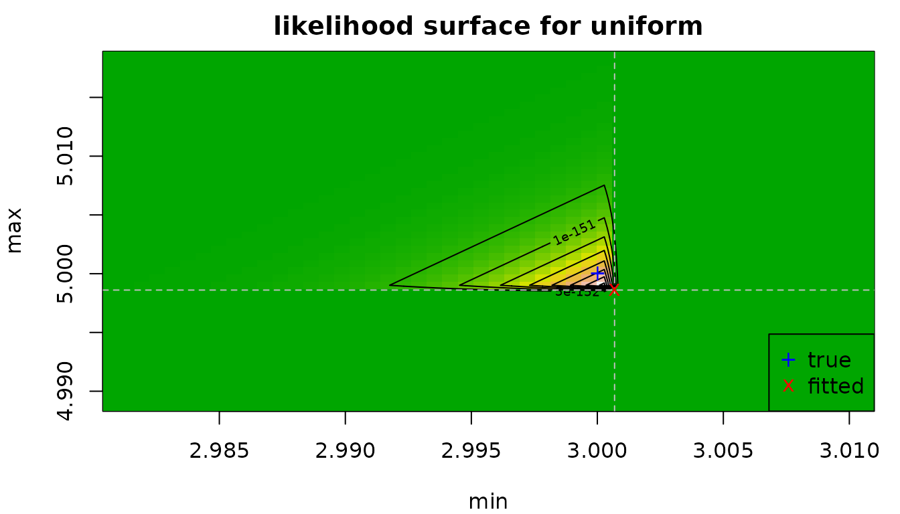
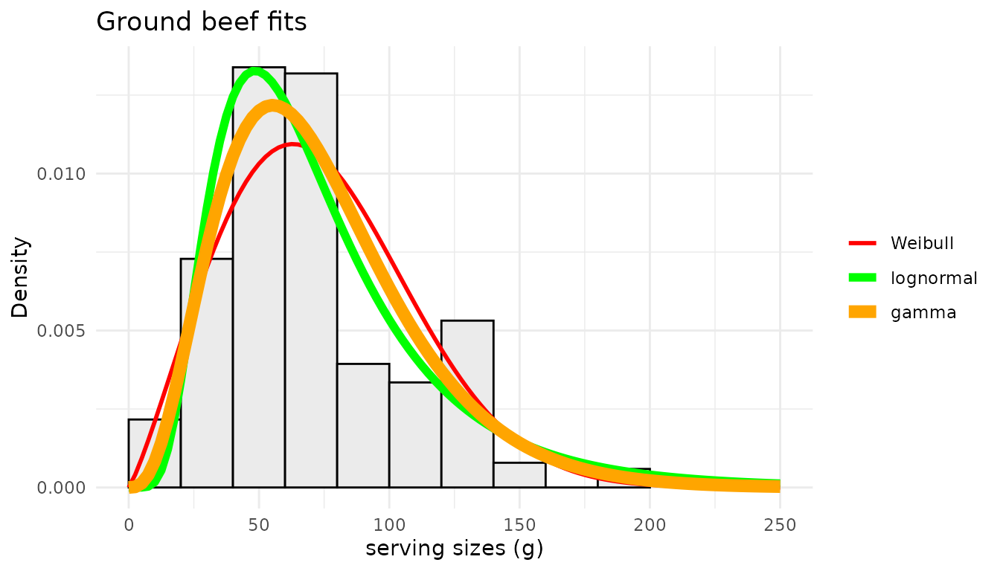
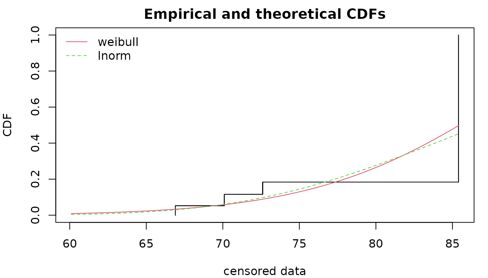
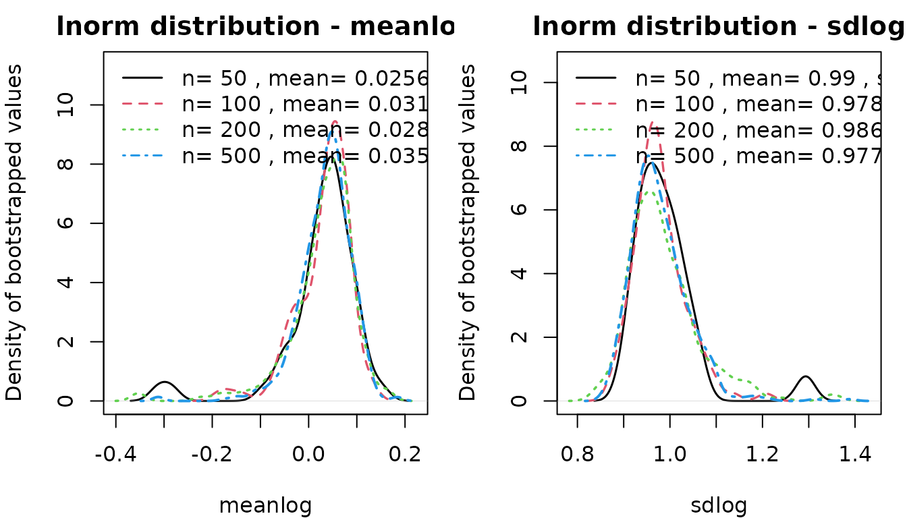
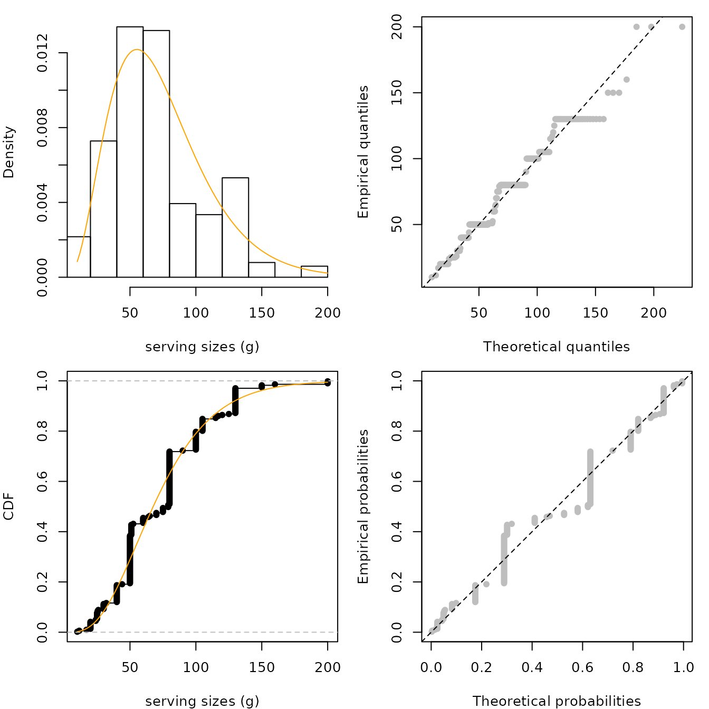

Frequently Asked Questions
Marie Laure Delignette Muller, Christophe Dutang
2024-12-03
Source:vignettes/FAQ.Rmd
FAQ.Rmd1. Questions regarding distributions
1.1. How do I know the root name of a distribution?
The root name of a probability distribution is the name
which is used the d, p, q,
r functions. For base R distributions, the root names are
given in R-intro : https://cran.r-project.org/doc/manuals/R-intro.html#Probability-distributions.
For example, you must use "pois" for the Poisson
distribution and not "poisson".
1.2. How do I find “non standard” distributions?
For non-standard distributions, you can either find a package implementing them or define by yourself. A comprehensive list of non-standard distributions is given in the Distributions task view https://CRAN.R-project.org/view=Distributions. Here are some two examples of user-defined distributions. A third example (shifted exponential) is given in FAQ 3.5.4.
- The Gumbel distribution
dgumbel <- function(x, a, b) 1/b*exp((a-x)/b)*exp(-exp((a-x)/b))
pgumbel <- function(q, a, b) exp(-exp((a-q)/b))
qgumbel <- function(p, a, b) a-b*log(-log(p))
data(groundbeef)
fitgumbel <- fitdist(groundbeef$serving, "gumbel", start=list(a=10, b=10))- The zero-modified geometric distribution
dzmgeom <- function(x, p1, p2) p1 * (x == 0) + (1-p1)*dgeom(x-1, p2)
pzmgeom <- function(q, p1, p2) p1 * (q >= 0) + (1-p1)*pgeom(q-1, p2)
rzmgeom <- function(n, p1, p2)
{
u <- rbinom(n, 1, 1-p1) #prob to get zero is p1
u[u != 0] <- rgeom(sum(u != 0), p2)+1
u
}
x2 <- rzmgeom(1000, 1/2, 1/10)
fitdist(x2, "zmgeom", start=list(p1=1/2, p2=1/2))1.3. How do I set (or find) initial values for non standard distributions?
As documented, we provide initial values for the following
distributions: "norm", "lnorm",
"exp", "pois", "cauchy",
"gamma“, "logis", "nbinom",
"geom", "beta", "weibull" from
the stats package; "invgamma",
"llogis", "invweibull",
"pareto1", "pareto", "lgamma",
"trgamma", "invtrgamma" from the
actuar package.
Look first at statistics and probability books such as
- different volumes of N. L. Johnson, S. Kotz and N. Balakrishnan
books, e.g. Continuous Univariate Distributions, Vol.
1,
-
Thesaurus of univariate discrete probability
distributions by G. Wimmer and G. Altmann.
-
Statistical Distributions by M. Evans, N. Hastings,
B. Peacock.
- Distributional Analysis with L-moment Statistics using the R Environment for Statistical Computing by W. Asquith.
If not available, find initial values by equalling theoretical and
empirical quartiles. The graphical function plotdist() and
plotdistcens() can also be used to assess the suitability
of starting values : by an iterative manual process you can move
parameter values so as to obtain a distribution that roughly fits the
data and take these parameter values as starting values for the real
fit. You may also consider the prefit() function to find
initial values especially in case where parameters are constrained.
1.4. Is it possible to fit a distribution with at least 3 parameters?
Yes, an example with the Burr distribution is detailed in the JSS paper. We reproduce it very quickly here.
data("endosulfan")
require("actuar")
fendo.B <- fitdist(endosulfan$ATV, "burr", start = list(shape1 = 0.3,
shape2 = 1, rate = 1))
summary(fendo.B)## Fitting of the distribution ' burr ' by maximum likelihood
## Parameters :
## estimate Std. Error
## shape1 0.206 0.572
## shape2 1.540 3.251
## rate 1.497 4.775
## Loglikelihood: -520 AIC: 1046 BIC: 1054
## Correlation matrix:
## shape1 shape2 rate
## shape1 1.000 -0.900 -0.727
## shape2 -0.900 1.000 0.588
## rate -0.727 0.588 1.0001.5. Why there are differences between MLE and MME for the lognormal distribution?
We recall that the lognormal distribution function is given by
where denotes the distribution function of the standard normal distribution. We know that and . The MME is obtained by inverting the previous formulas, whereas the MLE has the following explicit solution
Let us fit a sample by MLE and MME. The fit looks particularly good in both cases.
x3 <- rlnorm(1000)
f1 <- fitdist(x3, "lnorm", method="mle")
f2 <- fitdist(x3, "lnorm", method="mme")
par(mfrow=1:2, mar=c(4,4,2,1))
cdfcomp(list(f1, f2), do.points=FALSE, xlogscale = TRUE, main = "CDF plot")
denscomp(list(f1, f2), demp=TRUE, main = "Density plot")
Let us compare the theoretical moments (mean and variance) given the fitted values
(), that is
c("E(X) by MME"=as.numeric(exp(f2$estimate["meanlog"]+f2$estimate["sdlog"]^2/2)),
"E(X) by MLE"=as.numeric(exp(f1$estimate["meanlog"]+f1$estimate["sdlog"]^2/2)),
"empirical"=mean(x3))## E(X) by MME E(X) by MLE empirical
## 1.61 1.60 1.61
c("Var(X) by MME"=as.numeric(exp(2*f2$estimate["meanlog"]+f2$estimate["sdlog"]^2) *
(exp(f2$estimate["sdlog"]^2)-1)),
"Var(X) by MLE"=as.numeric(exp(2*f1$estimate["meanlog"]+f1$estimate["sdlog"]^2) *
(exp(f1$estimate["sdlog"]^2)-1)),
"empirical"=var(x3))## Var(X) by MME Var(X) by MLE empirical
## 4.30 4.36 4.30From a MLE point of view, a lognormal sample is equivalent to handle a normal sample . However, it is well know by the Jensen inequality that implying the MME estimates provides better moment estimates than with MLE.
1.6. Can I fit a distribution with positive support when data contains negative values?
The answer is no: you cannot fit a distribution with positive support (say gamma distribution) when data contains negative values.
## Error in computing default starting values.
## Error in manageparam(start.arg = start, fix.arg = fix.arg, obs = data, :
## Error in startarg_transgamma_family(x, distr) :
## values must be positive to fit an exponential distribution## [1] "Error in manageparam(start.arg = start, fix.arg = fix.arg, obs = data, : \n Error in startarg_transgamma_family(x, distr) : \n values must be positive to fit an exponential distribution\n\n"
## attr(,"class")
## [1] "try-error"
## attr(,"condition")
## <simpleError in manageparam(start.arg = start, fix.arg = fix.arg, obs = data, distname = distname): Error in startarg_transgamma_family(x, distr) :
## values must be positive to fit an exponential distribution
## >It is irrelevant to do such fit. If you really need to use that distribution, you have two options: either to remove negative values (not recommended) or to shift the data.
fitdist(x[x >= 0], "exp")## Fitting of the distribution ' exp ' by maximum likelihood
## Parameters:
## estimate Std. Error
## rate 1.06 1.06## Fitting of the distribution ' exp ' by maximum likelihood
## Parameters:
## estimate Std. Error
## rate 0.914 0.9141.7. Can I fit a finite-support distribution when data is outside that support?
The answer is no: you cannot fit a distribution with finite-support (say beta distribution) when data is outside .
## Error in computing default starting values.
## Error in manageparam(start.arg = start, fix.arg = fix.arg, obs = data, :
## Error in startargdefault(obs, distname) :
## values must be in [0-1] to fit a beta distribution## [1] "Error in manageparam(start.arg = start, fix.arg = fix.arg, obs = data, : \n Error in startargdefault(obs, distname) : \n values must be in [0-1] to fit a beta distribution\n\n"
## attr(,"class")
## [1] "try-error"
## attr(,"condition")
## <simpleError in manageparam(start.arg = start, fix.arg = fix.arg, obs = data, distname = distname): Error in startargdefault(obs, distname) :
## values must be in [0-1] to fit a beta distribution
## >It is irrelevant to do such a fit. If you really need to use that distribution, you have two ways to tackle this issue: either to remove impossible values (not recommended) or to shift/scale the data.
fitdist(x[x > 0 & x < 1], "beta")## Fitting of the distribution ' beta ' by maximum likelihood
## Parameters:
## estimate Std. Error
## shape1 2.08 2.79
## shape2 2.50 3.41## Fitting of the distribution ' beta ' by maximum likelihood
## Parameters:
## estimate Std. Error
## shape1 1.77 2.36
## shape2 2.17 2.961.8. Can I fit truncated distributions?
The answer is yes: but the fitting procedure must be carried out carefully. Let be the original untruncated random variable. The truncated variable is the conditionnal random variable with the lower and upper bounds. The cdf of is . There is a density (w.r.t. the Lebesgues measure) given by
dtexp <- function(x, rate, low, upp)
{
PU <- pexp(upp, rate=rate)
PL <- pexp(low, rate=rate)
dexp(x, rate) / (PU-PL) * (x >= low) * (x <= upp)
}
ptexp <- function(q, rate, low, upp)
{
PU <- pexp(upp, rate=rate)
PL <- pexp(low, rate=rate)
(pexp(q, rate)-PL) / (PU-PL) * (q >= low) * (q <= upp) + 1 * (q > upp)
}
n <- 200
x <- rexp(n); x <- x[x > .5 & x < 3]
f1 <- fitdist(x, "texp", method="mle", start=list(rate=3), fix.arg=list(low=min(x), upp=max(x)))
f2 <- fitdist(x, "texp", method="mle", start=list(rate=3), fix.arg=list(low=.5, upp=3))
gofstat(list(f1, f2))## Goodness-of-fit statistics
## 1-mle-texp 2-mle-texp
## Kolmogorov-Smirnov statistic 0.0952 0.084
## Cramer-von Mises statistic 0.1343 0.104
## Anderson-Darling statistic Inf 1.045
##
## Goodness-of-fit criteria
## 1-mle-texp 2-mle-texp
## Akaike's Information Criterion 127 132
## Bayesian Information Criterion 130 135
1.9. Can I fit truncated inflated distributions?
The answer is yes: but the fitting procedure must be carried out carefully. Let be the original untruncated random variable. The truncated variable is with the lower and upper bounds. The cdf of is . There is no density (w.r.t. the Lebesgues measure) since there are two probability masses and . However, the density function with respect to the measure is Let be the parameter of the untruncated distribution. Since the likelihood can be factorized, the maximization can be done separately Furthermore, using , the likelihood is zero for or and increasing with respect to in and decreasing with respect to in . So the maximum of is reached at and . The MLE of is then obtained by maximizing the log-likelihood with and .
Let us illustrate truncated distribution with the truncated exponential distribution. The log-likelihood is particularly bad-shaped.
dtiexp <- function(x, rate, low, upp)
{
PU <- pexp(upp, rate=rate, lower.tail = FALSE)
PL <- pexp(low, rate=rate)
dexp(x, rate) * (x >= low) * (x <= upp) + PL * (x == low) + PU * (x == upp)
}
ptiexp <- function(q, rate, low, upp)
pexp(q, rate) * (q >= low) * (q <= upp) + 1 * (q > upp)
n <- 100; x <- pmax(pmin(rexp(n), 3), .5)
# the loglikelihood has a discontinous point at the solution
par(mar=c(4,4,2,1), mfrow=1:2)
llcurve(x, "tiexp", plot.arg="low", fix.arg = list(rate=2, upp=5), min.arg=0, max.arg=.5, lseq=200)
llcurve(x, "tiexp", plot.arg="upp", fix.arg = list(rate=2, low=0), min.arg=3, max.arg=4, lseq=200)
The first method directly maximizes the log-likelihood ; the second method maximizes the log-likelihood assuming that and are known. Inside , the CDF are correctly estimated in both methods but the first method does not succeed to estimate the true value of the bounds .
## Fitting of the distribution ' tiexp ' by maximum likelihood
## Parameters:
## estimate
## rate 0.333
## low 2.915
## upp 20.899## Fitting of the distribution ' tiexp ' by maximum likelihood
## Parameters:
## estimate Std. Error
## rate 0.947 0.982
## Fixed parameters:
## value
## low 0.5
## upp 3.0## Goodness-of-fit statistics
## 1-mle-tiexp 2-mle-tiexp
## Kolmogorov-Smirnov statistic 0.92 0.377
## Cramer-von Mises statistic 26.82 1.882
## Anderson-Darling statistic Inf 10.193
##
## Goodness-of-fit criteria
## 1-mle-tiexp 2-mle-tiexp
## Akaike's Information Criterion 39.6 162
## Bayesian Information Criterion 47.4 165
par(mfrow=c(1,1), mar=c(4,4,2,1))
cdfcomp(list(f1, f2), do.points = FALSE, addlegend=FALSE, xlim=c(0, 3.5))
curve(ptiexp(x, 1, .5, 3), add=TRUE, col="blue", lty=3)
legend("bottomright", lty=1:3, col=c("red", "green", "blue", "black"),
legend=c("full MLE", "MLE fixed arg", "true CDF", "emp. CDF"))
1.10. Can I fit a uniform distribution?
The uniform distribution has only support parameters since the density does not have a scale or a shape parameter . For this distribution, we should not maximize the log-likelihood but only the likelihood. Let be i.i.d. observations from distribution. The likelihood is Hence for any fixed is increasing on , similarly is decreasing for any fixed . This leads to and to be the MLE of the uniform distribution.
We should notice that the likelihood function is defined on yet it cancels outside . Hence, the log-likelihood is undefined outside , which is an issue when maximizing the log-likelihood.
For these reasons,
fitdist(data, dist="unif", method="mle") uses the explicit
form of the MLE for this distribution. Here is an example below
trueval <- c("min"=3, "max"=5)
x <- runif(n=500, trueval[1], trueval[2])
f1 <- fitdist(x, "unif")
delta <- .01
par(mfrow=c(1,1), mar=c(4,4,2,1))
llsurface(x, "unif", plot.arg = c("min", "max"), min.arg=c(min(x)-2*delta, max(x)-delta),
max.arg=c(min(x)+delta, max(x)+2*delta), main="likelihood surface for uniform",
loglik=FALSE)
abline(v=min(x), h=max(x), col="grey", lty=2)
points(f1$estimate[1], f1$estimate[2], pch="x", col="red")
points(trueval[1], trueval[2], pch="+", col="blue")
legend("bottomright", pch=c("+","x"), col=c("blue","red"), c("true", "fitted"))
delta <- .2
llsurface(x, "unif", plot.arg = c("min", "max"), min.arg=c(3-2*delta, 5-delta),
max.arg=c(3+delta, 5+2*delta), main="log-likelihood surface for uniform")
abline(v=min(x), h=max(x), col="grey", lty=2)
points(f1$estimate[1], f1$estimate[2], pch="x", col="red")
points(trueval[1], trueval[2], pch="+", col="blue")
legend("bottomright", pch=c("+","x"), col=c("blue","red"), c("true", "fitted"))
Maximizing the log-likelihood is harder and can be done by defining a
new density function. Appropriate starting values and parameters bound
must be supplied. Using the closed-form expression (as in
fitdist()) or maximizing the log-likelihood (with
unif2) lead to very similar results.
dunif2 <- function(x, min, max) dunif(x, min, max)
punif2 <- function(q, min, max) punif(q, min, max)
f2 <- fitdist(x, "unif2", start=list(min=0, max=10), lower=c(-Inf, max(x)),
upper=c(min(x), Inf))
print(c(logLik(f1), logLik(f2)), digits=7)## [1] -346.0539 -346.1519## [,1] [,2]
## min 3.000684 3.000292
## max 4.998606 4.9986061.11. Can I fit a beta distribution with the same shape parameter?
Yes, you can wrap the density function of the beta distribution so that there is a only one shape parameter. Here is an example of a concave density.
x <- rbeta(1000, 3, 3)
dbeta2 <- function(x, shape, ...)
dbeta(x, shape, shape, ...)
pbeta2 <- function(q, shape, ...)
pbeta(q, shape, shape, ...)
fitdist(x, "beta2", start=list(shape=1/2))## Fitting of the distribution ' beta2 ' by maximum likelihood
## Parameters:
## estimate Std. Error
## shape 3.24 4.26Another example with a U-shaped density.
x <- rbeta(1000, .3, .3)
fitdist(x, "beta2", start=list(shape=1/2), optim.method="L-BFGS-B", lower=1e-2) ## Fitting of the distribution ' beta2 ' by maximum likelihood
## Parameters:
## estimate Std. Error
## shape 0.295 0.3121.12. How to estimate support parameter? the case of the four-parameter beta
Let us consider the four-parameter beta distribution, also known as the PERT distribution, defined by the following density for with a normalizing constant and , . are support parameters, is the mode and the shape parameter.
As for uniform distribution, one can show that the MLE of
and
are respectively the sample minimum and maximum. The code below
illustrates the strategy using partial closed formula with
fix.arg and the full numerical search of MLE. NB: on small
sample size, the latter has generally better goodness-of-fit statistics;
a small positive number is added or subtracted when fixing the support
parameters
and
to sample minimum and maximum.
require("mc2d")
x2 <- rpert(n=2e2, min=0, mode=1, max=2, shape=3/4)
eps <- sqrt(.Machine$double.eps)
f1 <- fitdist(x2, "pert", start=list(min=-1, mode=0, max=10, shape=1),
lower=c(-Inf, -Inf, -Inf, 0), upper=c(Inf, Inf, Inf, Inf))## Warning in checkparamlist(arg_startfix$start.arg, arg_startfix$fix.arg, : Some
## parameter names have no starting/fixed value but have a default value: mean.## Warning in cov2cor(varcovar): diag(V) had non-positive or NA entries; the
## non-finite result may be dubious## Warning in sqrt(diag(varcovar)): NaNs produced
f2 <- fitdist(x2, "pert", start=list(mode=1, shape=1),
fix.arg=list(min=min(x2)-eps, max=max(x2)+eps),
lower=c(min(x2), 0), upper=c(max(x2), Inf))## Warning in checkparamlist(arg_startfix$start.arg, arg_startfix$fix.arg, : Some
## parameter names have no starting/fixed value but have a default value: mean.
print(cbind(coef(f1),
c(f2$fix.arg["min"], coef(f2)["mode"], f2$fix.arg["max"], coef(f2)["shape"])),
digits=7)## [,1] [,2]
## min 1.36707 0.03395487
## mode 1.367072 1.955289
## max 1.644537 1.956234
## shape 0.0005813856 0.008506046## Goodness-of-fit statistics
## 1-mle-pert 2-mle-pert
## Kolmogorov-Smirnov statistic 0.69 0.0584
## Cramer-von Mises statistic 28.59 0.1836
## Anderson-Darling statistic Inf 1.2787
##
## Goodness-of-fit criteria
## 1-mle-pert 2-mle-pert
## Akaike's Information Criterion -99.7 265
## Bayesian Information Criterion -86.5 272
2. Questions regarding goodness-of-fit tests and statistics, Cullen-Frey graph
2.1. Where can we find the results of goodness-of-fit tests ?
Results of goodness-of-fit tests are not printed but are given in the
object returned by gofstat() and you can have access to
them as described in the example below. Nevertheless, p-values are not
given for every test. For Anderson-Darling (ad), Cramer von Mises (cvm)
and Kolomogorov (ks), only the decision (rejection of H0 or not) is
given, when available (see FAQ 2.3 for more details).
set.seed(1234)
x <- rgamma(n = 100, shape = 2, scale = 1)
# fit of the good distribution
fgamma <- fitdist(x, "gamma")
# fit of a bad distribution
fexp <- fitdist(x, "exp")
g <- gofstat(list(fgamma, fexp), fitnames = c("gamma", "exp"))
par(mfrow=c(1,1), mar=c(4,4,2,1))
denscomp(list(fgamma, fexp), legendtext = c("gamma", "exp"))
# results of the tests
## chi square test (with corresponding table with theoretical and observed counts)
g$chisqpvalue## gamma exp
## 1.89e-01 7.73e-05
g$chisqtable## obscounts theo gamma theo exp
## <= 0.5483 9 10.06 23.66
## <= 0.8122 9 8.82 9.30
## <= 0.9592 9 5.27 4.68
## <= 1.368 9 14.64 11.37
## <= 1.523 9 5.24 3.74
## <= 1.701 9 5.73 3.97
## <= 1.94 9 7.09 4.82
## <= 2.381 9 11.08 7.50
## <= 2.842 9 9.00 6.29
## <= 3.801 9 11.93 9.28
## > 3.801 10 11.15 15.40
## Anderson-Darling test
g$adtest## gamma exp
## "not rejected" "rejected"
## Cramer von Mises test
g$cvmtest## gamma exp
## "not rejected" "rejected"
## Kolmogorov-Smirnov test
g$kstest## gamma exp
## "not rejected" "rejected"2.2. Is it reasonable to use goodness-of-fit tests to validate the fit of a distribution ?
In the first versions of fitdistrplus, when they were available, the results of the GOF tests (AD, KS, CvM) were automatically printed. We decided to suppress this automatic printing when we realized that some users had some difficulties to interpret the results of those tests and sometimes misused them.
Goodness-of-fit tests often appear as objective tools to decide wether a fitted distribution well describes a data set. But they are not ! It would not be reasonable at all to reject a distribution just because a goodness-of-fit test rejects it (see FAQ 2.2.1). And it would not be reasonable at all any more to validate a distribution because goodness-of-fit tests do not reject it (see FAQ 2.2.2).
A fitted distribution should be evaluated using graphical methods
(goodness-of-fit graphs automatically provided in our package by
plotting the result of the fit (output of fitdist() or
fitdistcens() and the complementary graphs that help to
compare different fits - see ?graphcomp). We really think
it is the most appropriate way to evaluate the adequacy of a fit and we
are not the only ones to recommend it. You can find the same type of
recommendations in reference books :
-
Probabilistic techniques in exposure assessment - a handbook
dealing with variability and uncertainty in models and inputs
by A.C. Cullen and H.C. Frey.
-
Application of uncertainty analysis to ecological risks of
pesticides by W.J. Warren-Hicks and A. Hart.
- Statistical inference by G. Casella and R.L. Berger
- Loss models: from data to decision by S.A. Klugman and H.H. Panjer and G.E. Willmot
Moreover, the selection of a distribution should also be driven by knowledge of underlying processes when available. For example when a variable cannot be negative, one would be very cautious while fitting a normal distribution, that potentially gives negative values, even if the observed data of this variable seem well fitted by a normal distribution.
2.2.1. Should I reject a distribution because a goodness-of-fit test rejects it ?
No it would not be reasonable at all to reject a distribution just because a goodness-of-fit test rejects it, especially in the case of big samples. In the real life, as soon as you have a sufficient amount of data, you will reject the fitted distribution. We know that a model cannot perfectly describe real data, and generally the true question is to find the better distribution among a pool of simple parametric distributions to describe the data, so to compare different models (see FAQ 2.4 and 2.5 for corresponding questions).
To illustre this point let us comment the example presented below. We drew two samples from the same Poisson distribution with a mean parameter equal to 100. In many applications, for this value of its parameter, the Poisson distribution would be considered to be well approximated by a normal distribution. Testing the fit (here using a Kolmogorov-Smirnov test ) of the normal distribution on a sample of 100 observations would not reject the normal fit, while testing it on a sample of 10000 observations would reject it, while both samples come from the same distribution.
set.seed(1234)
x1 <- rpois(n = 100, lambda = 100)
f1 <- fitdist(x1, "norm")
g1 <- gofstat(f1)
g1$kstest## 1-mle-norm
## "not rejected"## 1-mle-norm
## "rejected"
par(mfrow=c(1,2), mar=c(4,4,2,1))
denscomp(f1, demp = TRUE, addlegend = FALSE, main = "small sample")
denscomp(f2, demp = TRUE, addlegend = FALSE, main = "big sample")
2.2.2. Should I accept a distribution because goodness-of-fit tests do not reject it ?
No, it would not be reasonable at all to validate a distribution because goodness-of-fit tests do not reject it. Like all the other hypothesis tests, goodness-of-fit tests lack of statistical power when the sample size is not so high. And the different goodness-of-fit tests are not equally sensitive to different types of deviation between empirical and fitted distributions. For example the Kolmogorov-Smirnov test is sensitive when distributions differ in a global fashion near the centre of the distribution. The Anderson-Darling test will be more sensitive when distributions differ in their tails, and the Cramer von Mises will be more sensitive when there are small but repetitive differences between empirical and theoretical distribution functions.
The sensitivity of a chi square test will depend on the definition of classes, and even if we propose a default definition of classes when the user does not provide classes, this choice is not obvious and could impact the results of the test. This test is more appropriate when data are discrete, even if they are modelled by a continuous distribution, as in the following example. Two samples of respective sizes 500 and 50 are drawn from a Poisson distribution of mean parameter equal to 1 (not a sufficiently high value to consider that the Poisson distribution could be approximated by a normal one). Using a Kolmogorov-Smirnov test, for the small sample the normal fit is rejected only for the bigger sample. It is not rejected with the smaller sample even if the fit could be rejected after a simple visual confrontation of the distributions. In that particular case, the chi square test with classes defined by default would have rejected te normal fit for both samples.
set.seed(1234)
x3 <- rpois(n = 500, lambda = 1)
f3 <- fitdist(x3, "norm")
g3 <- gofstat(f3)
g3$kstest## 1-mle-norm
## "rejected"## 1-mle-norm
## "not rejected"
par(mfrow=c(1,2), mar=c(4,4,2,1))
denscomp(f3, addlegend = FALSE, main = "big sample")
denscomp(f4, addlegend = FALSE, main = "small sample")
g3$chisqtable## obscounts theocounts
## <= 0 180.0 80.3
## <= 1 187.0 163.5
## <= 2 87.0 168.1
## <= 3 32.0 73.4
## > 3 14.0 14.7
g3$chisqpvalue## [1] 7.11e-42
g4$chisqtable## obscounts theocounts
## <= 0 14.00 5.46
## <= 1 15.00 14.23
## <= 2 15.00 18.09
## > 2 6.00 12.22
g4$chisqpvalue## [1] 3.57e-052.3. Why all goodness-of-fit tests are not available for every distribution ?
The Chi-squared test is available for any distribution but one must be conscious that its result depends on the definition of cells in which observed data are grouped, and a correct definition is not possible with a too small sample.
Concerning the Kolmogorov-Smirnov test, it is proposed for any
continuous distribution, but with a critical value corresponding to the
comparison of the empirical distribution to a fully specified
distribution. As the distribution is not fully known for a fitted
distribution, the result of this test is subject to caution, but there
is no general asymptotic theory for the Kolmogorov-Smirnov statistics in
case of a fitted distribution. Nevertheless, one can use Monte Carlo
methods to conduct Kolmgorov-Smirnov goodness-of-fit tests in cases when
the sample is used to estimate model parameters. Such a method is
implemented in the R package KScorrect for a variety of
continuous distributions.
Such an asymptotic theory was proposed for quadratic statistics for some distributions (Anderson-Darling, Cramer von Mises). The reference book we used on this subject (Tests based on edf statistics by Stephens MA in Goodness-of-fit techniques by D’Agostino RB and Stephens MA) proposes critical values of those statistics for a some classical distributions (exponential, gamma, Weibull, logistic, Cauchy, normal and lognormal). But the asymptotic theory about these statistics also depends on the way the parameters are estimated. And as they were not estimated by maximum likelihood for Cauchy, normal and lognormal distributions in the results reported by Stephens, we only propose the results of the Anderson-Darling and Cramer von Mises using those results for exponential, gamma, Weibull, logistic distributions.
The user can refer to the cited books and use the proposed formula to
estimate the parameters of Cauchy, normal and lognormal distributions
and apply the tests using critical values given in the book. R packages
goftest and ADGofTest could also be explored
by users who would like to apply Anderson-Darling and Cramer von Mises
tests on other distributions. But at this time we are not sure that the
case where parameters are unknown (estimated by maximum likelihood) is
tackled in those two packages.
Concerning the development of our package, rather than develoing further more goodness-of-fit tests we made the choice to develop graphical tools to help to appreciate the quality of a fit and to compare the fits of different distributions on a same data set (see FAQ 2.2 for argumentation).
2.4. How can we use goodness-of-fit statistics to compare the fit of different distributions on a same data set ?
Goodness-of-fit statistics based on the empirical distribution function (Kolmogorov-Smirnov, Anderson-Darling and Cramer von Mises) may be used to measure a distance between the fitted distribution and the empirical distribution. So if one wants to compare the fit of various distributions on the same data set, the smaller are those statistics the better. The Kolmogorov-Smirnov statistics will be sensitive when distributions differ in a global fashion near the centre of the distribution while the Anderson-Darling statistics will be more sensitive when distributions differ in their tails, and the Cramer von Mises statistics will be more sensitive when there are small but repetitive differences between empirical and theoretical distribution functions.
But as mentioned in the main vignette of our package, the use of the Anderson-Darling to compare the fit of different distributions is subject to caution due to the the weighting of the quadratic distance between fitted and empirical distribution functions that depends on the parametric distribution. Moreover, statistics based on the empirical distribution function do not penalize distributions with a greater number of parameters and as those are generally more flexible, this could induce over-fitting.
Goodness-fo-fit statistics based on information criteria (AIC, BIC) correspond to deviance penalized by the complexity of the model (the number of parameters of the distribution), and so the smaller the better. As more generic statistics, they are not adapted to focus on a part of the fitted distribution, but they take into account the complexity of the distribution and thus could help to prevent overfitting.
2.5. Can we use a test to compare the fit of two distributions on a same data set ?
In our package we did not implement such a test but for two
nested distributions (when one is a special case of the other
one, e.g. exponential and gamma distributions) a likelihood ratio test
can be easily implemented using the loglikelihood provided by
fitdist or fitdistcens. Denoting
the maximum likelihood obtained with the complete distribution and
the one obtained with the simplified distribution, when the sample size
increases,
tends to a Chi squared distribution degrees of freedom equal to the
difference on the numbers of parameters characterizing the two
nested distributions. You will find below an example of such a
test.
## Fitting of the distribution ' gamma ' by maximum likelihood
## Parameters:
## estimate Std. Error
## shape 2.025 2.66
## rate 0.997 1.49
(f0 <- fitdist(g, "exp"))## Fitting of the distribution ' exp ' by maximum likelihood
## Parameters:
## estimate Std. Error
## rate 0.492 0.492
L <- logLik(f)
k <- length(f$estimate) # number of parameters of the complete distribution
L0 <- logLik(f0)
k0 <- length(f0$estimate) # number of parameters of the simplified distribution
(stat <- 2*L - 2*L0)## [1] 23.9
(critical_value <- qchisq(0.95, df = k - k0))## [1] 3.84
(rejected <- stat > critical_value)## [1] TRUESuch a test can also be used for fits on censored data.
2.6. Can we get goodness-of-fit statistics for a fit on censored data ?
Function gofstat is not yet proposed in our package for
fits on censored data but to develop one is among one of our objectives
in the future. Published works on goodness-of-fit statistics based on
the empirical distribution function for censored data generally focused
on data containing only one type of censoring (e.g. right censored data
in survival data). Build such statistics in the general case, with data
containing in the same time (right, left and interval censoring),
remains tricky.
Nevertheless, it is possible for any type of censored data, to use
information criteria (AIC and BIC given in the summary of an object of
class fitdistcens) to compare the fits of various
distributions to a same data set.
2.7. Why Cullen-Frey graph may be misleading?
When considering distribution with large theoretical moments or infinite moments, using the Cullen-Frey may not be appropriate. A typical is the log-normal distribution .

## summary statistics
## ------
## min: 0.0436 max: 20.3
## median: 1.02
## mean: 1.61
## estimated sd: 1.89
## estimated skewness: 3.49
## estimated kurtosis: 21.9Indeed for that distribution, the skewness and the kurtosis are functions of the exponential of . With large values, even for small .
The convergence to theoretical standardized moments (skewness and kurtosis) is slow
In the future, we plan to use trimmed linear moments to deal with this issue. Those moments always exist even for distribution with infinite mean, e.g. the Cauchy distribution.
3. Questions regarding optimization procedures
3.1. How to choose optimization method?
If you want to perform optimization without bounds,
optim() is used. You can try the derivative-free method
Nelder-Mead and the Hessian-free method BFGS. If you want to perform
optimization with bounds, only two methods are available without
providing the gradient of the objective function: Nelder-Mead via
constrOptim() and bounded BFGS via optim(). In
both cases, see the help of mledist() and the vignette on
optimization algorithms.
3.2. The optimization algorithm stops with error code 100. What shall I do?
First, add traces by adding
control=list(trace=1, REPORT=1). Second, try to set bounds
for parameters. Third, find better starting values (see FAQ 1.3).
3.3 Why distribution with a log argument may converge
better?
Say, we study the shifted lognormal distribution defined by the
following density
for
where
is a location parameter,
a scale parameter and
a boundary parameter. Let us fit this distribution on the dataset
y by MLE. We define two functions for the densities with
and without a log argument.
dshiftlnorm <- function(x, mean, sigma, shift, log = FALSE) dlnorm(x+shift, mean, sigma, log=log)
pshiftlnorm <- function(q, mean, sigma, shift, log.p = FALSE) plnorm(q+shift, mean, sigma, log.p=log.p)
qshiftlnorm <- function(p, mean, sigma, shift, log.p = FALSE) qlnorm(p, mean, sigma, log.p=log.p)-shift
dshiftlnorm_no <- function(x, mean, sigma, shift) dshiftlnorm(x, mean, sigma, shift)
pshiftlnorm_no <- function(q, mean, sigma, shift) pshiftlnorm(q, mean, sigma, shift)We now optimize the minus log-likelihood.
data(dataFAQlog1)
y <- dataFAQlog1
D <- 1-min(y)
f0 <- fitdist(y+D, "lnorm")
start <- list(mean=as.numeric(f0$estimate["meanlog"]),
sigma=as.numeric(f0$estimate["sdlog"]), shift=D)
# works with BFGS, but not Nelder-Mead
f <- fitdist(y, "shiftlnorm", start=start, optim.method="BFGS")
summary(f)## Fitting of the distribution ' shiftlnorm ' by maximum likelihood
## Parameters :
## estimate Std. Error
## mean -1.3848 1.355
## sigma 0.0709 0.108
## shift 0.2487 0.338
## Loglikelihood: 8299 AIC: -16591 BIC: -16573
## Correlation matrix:
## mean sigma shift
## mean 1.000 -0.885 0.999
## sigma -0.885 1.000 -0.886
## shift 0.999 -0.886 1.000If we don’t use the log argument, the algorithms
stalls.
f2 <- try(fitdist(y, "shiftlnorm_no", start=start, optim.method="BFGS"))
print(attr(f2, "condition"))## NULLIndeed the algorithm stops because at the following value, the log-likelihood is infinite.
## [1] -Inf## [1] -Inf
sum(dshiftlnorm(y, 0.16383978, 0.01679231, 1.17586600, TRUE ))## [1] 7761There is something wrong in the computation.
Only the R-base implementation using log argument seems
reliable. This happens the C-base implementation of dlnorm
takes care of the log value. In the file
../src/nmath/dlnorm.c in the R sources, we find the C code
for dlnorm
double dlnorm(double x, double meanlog, double sdlog, int give_log)
{
double y;
#ifdef IEEE_754
if (ISNAN(x) || ISNAN(meanlog) || ISNAN(sdlog))
return x + meanlog + sdlog;
#endif
if(sdlog <= 0) {
if(sdlog < 0) ML_ERR_return_NAN;
// sdlog == 0 :
return (log(x) == meanlog) ? ML_POSINF : R_D__0;
}
if(x <= 0) return R_D__0;
y = (log(x) - meanlog) / sdlog;
return (give_log ?
-(M_LN_SQRT_2PI + 0.5 * y * y + log(x * sdlog)) :
M_1_SQRT_2PI * exp(-0.5 * y * y) / (x * sdlog));
/* M_1_SQRT_2PI = 1 / sqrt(2 * pi) */
}In the last four lines with the logical condtion
give_log?, we see how the log argument is
handled:
- when log=TRUE, we use
-(M_LN_SQRT_2PI + 0.5 * y * y + log(x * sdlog))- when log=FALSE, we use
(and then the logarithm outside
dlnorm)
Note that the constant
is pre-computed in the C macro M_LN_SQRT_2PI.
In order to sort out this problem, we use the
constrOptim wrapping optim to take into
account linear constraints. This allows also to use other optimization
methods than L-BFGS-B (low-memory BFGS bounded) used in optim.
## Warning in cov2cor(varcovar): diag(V) had non-positive or NA entries; the
## non-finite result may be dubious## Warning in sqrt(diag(varcovar)): NaNs produced
summary(f2)## Fitting of the distribution ' shiftlnorm ' by maximum likelihood
## Parameters :
## estimate Std. Error
## mean -1.3872 NaN
## sigma 0.0711 NaN
## shift 0.2481 NaN
## Loglikelihood: 8299 AIC: -16591 BIC: -16573
## Correlation matrix:
## mean sigma shift
## mean 1 NaN NaN
## sigma NaN 1 NaN
## shift NaN NaN 1## BFGS NelderMead
## mean -1.3848 -1.3872
## sigma 0.0709 0.0711
## shift 0.2487 0.2481Another possible would be to perform all computations with higher
precision arithmetics as implemented in the package Rmpfr
using the MPFR library.
3.4. What to do when there is a scaling issue?
Let us consider a dataset which has particular small values.
## [1] -0.007077 -0.000947 -0.001898 -0.000475 -0.001902 -0.000476
summary(dataFAQscale1)## Min. 1st Qu. Median Mean 3rd Qu. Max.
## -0.00708 -0.00143 -0.00047 -0.00031 0.00096 0.00428The only way to sort out is to multiply the dataset by a large value.
## 1e+06 -290 1194
## 1e+05 -29 119
## 10000 -2.9 11.9
## 1000 -0.29 1.19
## 100 -0.029 0.119
## 10 -0.0029 0.0119
## 1 -0.00029 0.00119Let us consider a dataset which has particular large values.
## [1] 1.40e+09 1.41e+09 1.43e+09 1.44e+09 1.49e+09 1.57e+09
summary(dataFAQscale2)## Min. 1st Qu. Median Mean 3rd Qu. Max.
## 1.40e+09 1.58e+09 2.24e+09 2.55e+09 3.39e+09 4.49e+09The only way to sort out is to multiply the dataset by a small value.
## 1 2.03e+09 6.59e+08
## 0.01 20283641 6594932
## 1e-04 202836 65949
## 1e-06 2028 659
## 1e-08 20.3 6.59
## 1e-10 0.203 0.06593.5. How do I set bounds on parameters when optimizing?
3.5.1. Setting bounds for scale parameters
Consider the normal distribution
defined by the density
where
is a location parameter such that
,
is a scale parameter such that
.
Therefore when optimizing the log-likelihood or the squared differences
or the GoF statistics. Setting a lower bound for the scale parameter is
easy with fitdist: just use the lower
argument.
## Fitting of the distribution ' norm ' by maximum likelihood
## Parameters:
## estimate Std. Error
## mean 0.947 1.99
## sd 1.994 1.413.5.2. Setting bounds for shape parameters
Consider the Burr distribution defined by the density where are shape parameters such that , is a scale parameter such that .
x <- rburr(1000, 1, 2, 3)
fitdist(x, "burr", lower=c(0, 0, 0), start=list(shape1 = 1, shape2 = 1,
rate = 1))## Fitting of the distribution ' burr ' by maximum likelihood
## Parameters:
## estimate Std. Error
## shape1 0.968 1.06
## shape2 2.051 1.16
## rate 3.181 1.633.5.3. Setting bounds for probability parameters
Consider the geometric distribution defined by the mass probability function where is a probability parameter such that .
## Fitting of the distribution ' geom ' by maximum likelihood
## Parameters:
## estimate Std. Error
## prob 0.242 0.2113.5.4. Setting bounds for boundary parameters
Consider the shifted exponential distribution defined by the mass probability function where is a scale parameter such that , is a boundary (or shift) parameter such that . When optimizing the log-likelihood, the boundary constraint is Note that when optimizing the squared differences or the GoF statistics, this constraint may not be necessary. Let us do it in R.
dsexp <- function(x, rate, shift)
dexp(x-shift, rate=rate)
psexp <- function(x, rate, shift)
pexp(x-shift, rate=rate)
rsexp <- function(n, rate, shift)
rexp(n, rate=rate)+shift
x <- rsexp(1000, 1/4, 1)
fitdist(x, "sexp", start=list(rate=1, shift=0), upper= c(Inf, min(x)))## Fitting of the distribution ' sexp ' by maximum likelihood
## Parameters:
## estimate Std. Error
## rate 0.248 0
## shift 1.005 NaN3.5.5. Setting linear inequality bounds
For some distributions, bounds between parameters are not
independent. For instance, the normal inverse Gaussian distribution
(
parametrization) has the following parameter constraints, which can be
reformulated as a linear inequality:
These constraints can be carried out
via constrOptim() and the arguments ci and
ui. Here is an example
require("GeneralizedHyperbolic")
myoptim <- function(fn, par, ui, ci, ...)
{
res <- constrOptim(f=fn, theta=par, method="Nelder-Mead", ui=ui, ci=ci, ...)
c(res, convergence=res$convergence, value=res$objective, par=res$minimum, hessian=res$hessian)
}
x <- rnig(1000, 3, 1/2, 1/2, 1/4)
ui <- rbind(c(0,1,0,0), c(0,0,1,0), c(0,0,1,-1), c(0,0,1,1))
ci <- c(0,0,0,0)
fitdist(x, "nig", custom.optim=myoptim, ui=ui, ci=ci, start=list(mu = 0, delta = 1, alpha = 1, beta = 0))## Warning in fitdist(x, "nig", custom.optim = myoptim, ui = ui, ci = ci, start =
## list(mu = 0, : The dnig function should return a vector of with NaN values when
## input has inconsistent parameters and not raise an error## Warning in fitdist(x, "nig", custom.optim = myoptim, ui = ui, ci = ci, start =
## list(mu = 0, : The pnig function should return a vector of with NaN values when
## input has inconsistent values and not raise an error## Fitting of the distribution ' nig ' by maximum likelihood
## Parameters:
## estimate
## mu 2.985
## delta 0.457
## alpha 0.466
## beta 0.2373.6. How works quantile matching estimation for discrete distributions?
Let us consider the geometric distribution with values in . The probability mass function, the cumulative distribution function and the quantile function are Due to the integer part (floor function), both the distribution function and the quantile function are step functions.
pgeom(0:3, prob=1/2)## [1] 0.500 0.750 0.875 0.938## [1] 0 1 3
par(mar=c(4,4,2,1), mfrow=1:2)
curve(pgeom(x, prob=1/2), 0, 10, n=301, main="c.d.f.")
curve(qgeom(x, prob=1/2), 0, 1, n=301, main="q.f.")
Now we study the QME for the geometric distribution. Since we have only one parameter, we choose one probabiliy, . The theoretical median is the following integer Note that the theoretical median for a discrete distribution is an integer. Empirically, the median may not be an integer. Indeed for an even length dataset, the empirical median is where is the sorted sample, which is not an integer value if is not an even number. However for an odd length dataset, the empirical median is an integer .
## [1] 0.5
median(x) #sample size 11## [1] 0Therefore, a first issue arises: if the median is not an integer, it is impossible to match exactly the empirical median with the theoretical quantile.
Furthermore, the second issue is the non-uniqueness of the solution. Admitting matching is an integer, QME aims to find some such that Let us plot the squared differences .
## [1] 0
par(mfrow=c(1,1), mar=c(4,4,2,1))
curve(L2(x), 0.10, 0.95, xlab=expression(p), ylab=expression(L2(p)), main="squared differences", n=301)Any value between [1/3, 5/9] minimizes the squared differences.
Therefore, fitdist() may be sensitive to the chosen initial
value with deterministic optimization algorithm.
## initial value 1.000000
## iter 2 value 0.000000
## iter 2 value 0.000000
## iter 2 value 0.000000
## final value 0.000000
## converged## Fitting of the distribution ' geom ' by matching quantiles
## Parameters:
## estimate
## prob 0.34## initial value 144.000000
## iter 1 value 144.000000
## final value 144.000000
## converged## Fitting of the distribution ' geom ' by matching quantiles
## Parameters:
## estimate
## prob 0.05The solution is to use a stochastic algorithm such as simulated annealing (SANN).
## Fitting of the distribution ' geom ' by matching quantiles
## Parameters:
## estimate
## prob 0.497## Fitting of the distribution ' geom ' by matching quantiles
## Parameters:
## estimate
## prob 0.401Let us consider the Poisson distribution defined by the following mass probability and the cumulative distribution functions The quantile function simplifies to Again, the quantile function is a step function
Again, the squared differences is a step function .
x <- rpois(100, lambda=7.5)
L2 <- function(lam)
(qpois(1/2, lambda = lam) - median(x))^2
par(mfrow=c(1,1), mar=c(4,4,2,1))
curve(L2(x), 6, 9, xlab=expression(lambda), ylab=expression(L2(lambda)), main="squared differences", n=201)Therefore, using fitdist() may be sensitive to the
chosen initial value.
## Fitting of the distribution ' pois ' by matching quantiles
## Parameters:
## estimate
## lambda 2## Fitting of the distribution ' pois ' by matching quantiles
## Parameters:
## estimate
## lambda 6.733.7. Why setting a parameter to the true value does not lead to the expected result for other parameters?
Consider the gamma truncated distribution defined by the following density and cumulative distribution functions
#NB: using the logical vector condition is the optimal way to compute pdf and cdf
dtgamma <- function(x, shape, rate, low, upp)
{
PU <- pgamma(upp, shape = shape, rate = rate)
PL <- pgamma(low, shape = shape, rate = rate)
dgamma(x, shape, rate) / (PU - PL) * (x >= low) * (x <= upp)
}
ptgamma <- function(q, shape, rate, low, upp)
{
PU <- pgamma(upp, shape = shape, rate = rate)
PL <- pgamma(low, shape = shape, rate = rate)
(pgamma(q, shape, rate) - PL) / (PU - PL) * (q >= low) * (q <= upp) + 1 * (q > upp)
}Simulating from a truncated distribution is done by rejection outside
[low, upp] interval.
rtgamma <- function(n, shape, rate, low=0, upp=Inf, maxit=10)
{
stopifnot(n > 0)
if(low > upp)
return(rep(NaN, n))
PU <- pgamma(upp, shape = shape, rate = rate)
PL <- pgamma(low, shape = shape, rate = rate)
#simulate directly expected number of random variate
n2 <- n/(PU-PL)
x <- rgamma(n, shape=shape, rate=rate)
x <- x[x >= low & x <= upp]
i <- 0
while(length(x) < n && i < maxit)
{
n2 <- (n-length(x))/(PU-PL)
y <- rgamma(n2, shape=shape, rate=rate)
x <- c(x, y[y >= low & y <= upp])
i <- i+1
}
x[1:n]
}Consider a sample of lower-truncated gamma distribution.
n <- 100 ; shape <- 11 ; rate <- 3 ; x0 <- 5
x <- rtgamma(n, shape = shape, rate = rate, low=x0)Fitting two parameters (and setting low parameter) or
fitting all three parameters lead a poorer result both in terms of mean
squared error or relative error. Notably the shape parameter is badly
estimated.
fit.NM.2P <- fitdist(
data = x,
distr = "tgamma",
method = "mle",
start = list(shape = 10, rate = 10),
fix.arg = list(upp = Inf, low=x0),
lower = c(0, 0), upper=c(Inf, Inf))## Warning in cov2cor(varcovar): diag(V) had non-positive or NA entries; the
## non-finite result may be dubious## Warning in sqrt(diag(varcovar)): NaNs produced
fit.NM.3P <- fitdist(
data = x,
distr = "tgamma",
method = "mle",
start = list(shape = 10, rate = 10, low=1),
fix.arg = list(upp = Inf),
lower = c(0, 0, -Inf), upper=c(Inf, Inf, min(x)))## Warning in cov2cor(varcovar): diag(V) had non-positive or NA entries; the
## non-finite result may be dubious
## Warning in cov2cor(varcovar): NaNs produced## fit3P fit2P true value
## shape 50.16 57.14 11
## rate 9.76 10.92 3
## low 5.01 5.00 5
## mean sq. error 526.46 730.64 0
## rel. error 1.94 2.28 0However the fitted cumulative distributions are indistinguable. See
figure below.

The reason is that the log-likelihood is not the same between the two
cases. Changing the optimization method is useless. The graph below
display the likelihood contours as well as optimization iterates (grey
crosses), the final estimate (black cross) and the true value (red dot).
Iterates get stuck far from the true value.

In fact the log-likelihood as a function of the shape parameter may be monotone.
Fitting a two-parameter distribution (i.e. gamma) on the shifted dataset is worse.
fit.gamma <- fitdist(
data = x-x0,
distr = "gamma",
method = "mle")## fit3P fit2P orig. data fit2P shift data true value
## shape 50.16 57.14 1.498 11
## rate 9.76 10.92 2.289 3
## low 5.01 5.00 5.000 5
## mean sq. error 526.46 730.64 30.266 0
## rel. error 1.94 2.28 0.367 0Changing the sample size improves the two-parameter fit very slowly
even as the MLE of the low parameter is in fact the minimum
of the dataset: the fitted low converges quickly to the
true value. Below an example with 1000 variates.
## Warning in cov2cor(varcovar): diag(V) had non-positive or NA entries; the
## non-finite result may be dubious## Warning in sqrt(diag(varcovar)): NaNs produced## Warning in cov2cor(varcovar): diag(V) had non-positive or NA entries; the
## non-finite result may be dubious## Warning in sqrt(diag(varcovar)): NaNs produced## fit3P fit2P orig. data true value
## shape 15.144 15.490 11
## rate 3.623 3.679 3
## low 5.000 5.000 5
## mean sq. error 5.854 6.874 0
## rel. error 0.195 0.212 04. Questions regarding uncertainty
4.1. Can we compute marginal confidence intervals on parameter estimates from their reported standard error ?
In statistics, deriving marginal confidence intervals on MLE parameter estimates using the approximation of their standard errors (calculated from the hessian) is a quite common procedure. It is based on the wald approximation which stands that when the sample size is sufficiently high, the marginal confidence on the ith component of a model parameter estimated by maximum likelihood (estimate denoted ) can be approximated by : with the ith term of the diagonal of the covariance matrix of the estimates (). is generally approximated by the inverse of the Fisher information matrix (). The Fisher information matrix corresponds to the opposite of the hessian matrix evaluated on the MLE estimate. Let us recall that the hessian matrix is defined by with the loglikelihod function for data and parameter .
Before using this approximation, one must keep in mind that its validity does not only depend on the sample size. It also strongly depends on the data, of the distribution, and also on the parameterization of the distribution. For this reason we recommend potential users of the Wald approximation to compare the results to the ones obtained using the bootstrap procedure (see below) before using this approximation. A look at the loglikelihood contours is also interesting as the Wald approximation assumes elliptical contours. In a more general context, we recommend the use of bootstrap to compute confidence intervals on parameters or on any function of those parameters.
Below you will find two examples, one for which Wald confidence intervals seem correct and one for which they give wrong results, with parameter values even outside their possible range (negative rate bound for the gamma distribution).
## Median 2.5% 97.5%
## mean 9.41 8.78 10.02
## sd 1.73 1.33 2.15
fn$estimate + cbind("estimate"= 0, "2.5%"= -1.96*fn$sd, "97.5%"= 1.96*fn$sd)## estimate 2.5% 97.5%
## mean 9.41 5.927 12.89
## sd 1.78 -0.685 4.24
set.seed(1234)
g <- rgamma(30, shape = 0.1, rate = 10)
fg <- fitdist(g, "gamma")
bg <- bootdist(fg)
bg$CI## Median 2.5% 97.5%
## shape 0.0923 0.0636 0.145
## rate 30.1018 9.6288 147.323
fg$estimate + cbind("estimate"= 0, "2.5%"= -1.96*fg$sd, "97.5%"= 1.96*fg$sd)## estimate 2.5% 97.5%
## shape 0.0882 -0.0917 0.268
## rate 24.2613 -143.3660 191.889
4.2. How can we compute confidence intervals on quantiles from the fit of a distribution ?
The quantile() function can be used to calculate any
quantile from a fitted distribution when it is called with an object of
class fitdist or fitdistcens as the first
argument. When called with an object of class bootdist or
bootdistcens as the first argument, quantiles are returned
accompanied with a confidence interval calculated using the bootstraped
sample of parameters. Moreover, you can use the CIcdfplot()
function to plot the fitted distribution as a CDF curve surrounded by a
band corresponding to pointwise intervals on the quantiles. See an
example below on censored data corresponding to 72-hour acute salinity
tolerance (LC50values) of rivermarine invertebrates.
data(salinity)
log10LC50 <- log10(salinity)
fit <- fitdistcens(log10LC50, "norm", control=list(trace=1))## Nelder-Mead direct search function minimizer
## function value for initial parameters = 1.047296
## Scaled convergence tolerance is 1.56059e-08
## Stepsize computed as 0.113883
## BUILD 3 1.085037 0.943438
## EXTENSION 5 1.047296 0.760789
## EXTENSION 7 0.943438 0.617018
## HI-REDUCTION 9 0.782878 0.617018
## LO-REDUCTION 11 0.760789 0.573266
## HI-REDUCTION 13 0.623518 0.573266
## HI-REDUCTION 15 0.617018 0.573266
## HI-REDUCTION 17 0.585623 0.573266
## HI-REDUCTION 19 0.584177 0.573266
## HI-REDUCTION 21 0.578139 0.573266
## LO-REDUCTION 23 0.577473 0.573266
## LO-REDUCTION 25 0.573373 0.572282
## HI-REDUCTION 27 0.573266 0.572282
## LO-REDUCTION 29 0.572444 0.572282
## HI-REDUCTION 31 0.572321 0.572229
## HI-REDUCTION 33 0.572282 0.572210
## HI-REDUCTION 35 0.572229 0.572195
## HI-REDUCTION 37 0.572210 0.572195
## LO-REDUCTION 39 0.572196 0.572191
## HI-REDUCTION 41 0.572195 0.572188
## HI-REDUCTION 43 0.572191 0.572188
## LO-REDUCTION 45 0.572190 0.572187
## HI-REDUCTION 47 0.572188 0.572187
## HI-REDUCTION 49 0.572188 0.572187
## HI-REDUCTION 51 0.572187 0.572187
## HI-REDUCTION 53 0.572187 0.572187
## LO-REDUCTION 55 0.572187 0.572187
## HI-REDUCTION 57 0.572187 0.572187
## HI-REDUCTION 59 0.572187 0.572187
## Exiting from Nelder Mead minimizer
## 61 function evaluations used
# Bootstrap
bootsample <- bootdistcens(fit, niter = 101)## Nelder-Mead direct search function minimizer
## function value for initial parameters = 0.537616
## Scaled convergence tolerance is 8.0111e-09
## Stepsize computed as 0.147026
## BUILD 3 0.698650 0.537616
## HI-REDUCTION 5 0.634460 0.537616
## HI-REDUCTION 7 0.579447 0.537616
## HI-REDUCTION 9 0.576254 0.537616
## LO-REDUCTION 11 0.559725 0.537616
## LO-REDUCTION 13 0.541980 0.537616
## HI-REDUCTION 15 0.537976 0.537616
## HI-REDUCTION 17 0.537817 0.536886
## HI-REDUCTION 19 0.537616 0.536609
## HI-REDUCTION 21 0.536886 0.536609
## LO-REDUCTION 23 0.536785 0.536542
## HI-REDUCTION 25 0.536609 0.536542
## HI-REDUCTION 27 0.536575 0.536529
## LO-REDUCTION 29 0.536542 0.536526
## HI-REDUCTION 31 0.536529 0.536524
## HI-REDUCTION 33 0.536526 0.536522
## LO-REDUCTION 35 0.536524 0.536522
## HI-REDUCTION 37 0.536523 0.536522
## HI-REDUCTION 39 0.536522 0.536522
## HI-REDUCTION 41 0.536522 0.536521
## HI-REDUCTION 43 0.536522 0.536521
## REFLECTION 45 0.536521 0.536521
## HI-REDUCTION 47 0.536521 0.536521
## LO-REDUCTION 49 0.536521 0.536521
## HI-REDUCTION 51 0.536521 0.536521
## Exiting from Nelder Mead minimizer
## 53 function evaluations used
## Nelder-Mead direct search function minimizer
## function value for initial parameters = 0.527456
## Scaled convergence tolerance is 7.85971e-09
## Stepsize computed as 0.147026
## BUILD 3 0.631319 0.527456
## HI-REDUCTION 5 0.623182 0.527456
## HI-REDUCTION 7 0.563846 0.527456
## HI-REDUCTION 9 0.550055 0.527456
## HI-REDUCTION 11 0.544128 0.527456
## REFLECTION 13 0.537017 0.523952
## LO-REDUCTION 15 0.527456 0.523952
## HI-REDUCTION 17 0.525857 0.523952
## HI-REDUCTION 19 0.524449 0.523902
## HI-REDUCTION 21 0.523952 0.523612
## HI-REDUCTION 23 0.523902 0.523385
## LO-REDUCTION 25 0.523612 0.523385
## HI-REDUCTION 27 0.523492 0.523385
## LO-REDUCTION 29 0.523446 0.523383
## LO-REDUCTION 31 0.523386 0.523383
## HI-REDUCTION 33 0.523385 0.523376
## HI-REDUCTION 35 0.523383 0.523375
## HI-REDUCTION 37 0.523376 0.523374
## HI-REDUCTION 39 0.523375 0.523374
## HI-REDUCTION 41 0.523374 0.523374
## HI-REDUCTION 43 0.523374 0.523373
## LO-REDUCTION 45 0.523374 0.523373
## HI-REDUCTION 47 0.523374 0.523373
## LO-REDUCTION 49 0.523373 0.523373
## LO-REDUCTION 51 0.523373 0.523373
## HI-REDUCTION 53 0.523373 0.523373
## REFLECTION 55 0.523373 0.523373
## LO-REDUCTION 57 0.523373 0.523373
## Exiting from Nelder Mead minimizer
## 59 function evaluations used
## Nelder-Mead direct search function minimizer
## function value for initial parameters = 0.454225
## Scaled convergence tolerance is 6.76848e-09
## Stepsize computed as 0.147026
## BUILD 3 0.595417 0.454225
## HI-REDUCTION 5 0.556873 0.454225
## HI-REDUCTION 7 0.500293 0.454225
## HI-REDUCTION 9 0.488374 0.454225
## LO-REDUCTION 11 0.478085 0.454225
## LO-REDUCTION 13 0.463377 0.454225
## LO-REDUCTION 15 0.457625 0.454150
## LO-REDUCTION 17 0.454225 0.453426
## HI-REDUCTION 19 0.454150 0.453347
## HI-REDUCTION 21 0.453426 0.453241
## HI-REDUCTION 23 0.453347 0.453208
## LO-REDUCTION 25 0.453241 0.453179
## HI-REDUCTION 27 0.453208 0.453162
## HI-REDUCTION 29 0.453179 0.453148
## LO-REDUCTION 31 0.453162 0.453148
## HI-REDUCTION 33 0.453152 0.453148
## REFLECTION 35 0.453149 0.453146
## HI-REDUCTION 37 0.453148 0.453146
## HI-REDUCTION 39 0.453146 0.453146
## HI-REDUCTION 41 0.453146 0.453145
## HI-REDUCTION 43 0.453146 0.453145
## HI-REDUCTION 45 0.453145 0.453145
## HI-REDUCTION 47 0.453145 0.453145
## HI-REDUCTION 49 0.453145 0.453145
## HI-REDUCTION 51 0.453145 0.453145
## HI-REDUCTION 53 0.453145 0.453145
## Exiting from Nelder Mead minimizer
## 55 function evaluations used
## Nelder-Mead direct search function minimizer
## function value for initial parameters = 0.545611
## Scaled convergence tolerance is 8.13023e-09
## Stepsize computed as 0.147026
## BUILD 3 0.668602 0.545611
## HI-REDUCTION 5 0.667351 0.545611
## HI-REDUCTION 7 0.600961 0.545611
## LO-REDUCTION 9 0.575566 0.545611
## LO-REDUCTION 11 0.554511 0.543154
## HI-REDUCTION 13 0.545611 0.543154
## HI-REDUCTION 15 0.544152 0.542342
## HI-REDUCTION 17 0.543154 0.542220
## HI-REDUCTION 19 0.542342 0.541881
## HI-REDUCTION 21 0.542220 0.541881
## LO-REDUCTION 23 0.541883 0.541838
## HI-REDUCTION 25 0.541881 0.541774
## HI-REDUCTION 27 0.541838 0.541774
## LO-REDUCTION 29 0.541800 0.541774
## HI-REDUCTION 31 0.541776 0.541774
## HI-REDUCTION 33 0.541775 0.541771
## HI-REDUCTION 35 0.541774 0.541770
## HI-REDUCTION 37 0.541771 0.541770
## HI-REDUCTION 39 0.541770 0.541770
## HI-REDUCTION 41 0.541770 0.541769
## HI-REDUCTION 43 0.541770 0.541769
## LO-REDUCTION 45 0.541769 0.541769
## HI-REDUCTION 47 0.541769 0.541769
## HI-REDUCTION 49 0.541769 0.541769
## HI-REDUCTION 51 0.541769 0.541769
## Exiting from Nelder Mead minimizer
## 53 function evaluations used
## Nelder-Mead direct search function minimizer
## function value for initial parameters = 0.490659
## Scaled convergence tolerance is 7.31138e-09
## Stepsize computed as 0.147026
## BUILD 3 0.644823 0.490659
## LO-REDUCTION 5 0.555530 0.490659
## LO-REDUCTION 7 0.554656 0.490659
## HI-REDUCTION 9 0.516549 0.490659
## HI-REDUCTION 11 0.505856 0.490659
## REFLECTION 13 0.502485 0.488463
## HI-REDUCTION 15 0.492428 0.488463
## HI-REDUCTION 17 0.490659 0.488463
## LO-REDUCTION 19 0.489534 0.488463
## HI-REDUCTION 21 0.489086 0.488463
## LO-REDUCTION 23 0.488718 0.488347
## HI-REDUCTION 25 0.488463 0.488347
## HI-REDUCTION 27 0.488411 0.488347
## HI-REDUCTION 29 0.488357 0.488347
## HI-REDUCTION 31 0.488356 0.488341
## LO-REDUCTION 33 0.488347 0.488341
## HI-REDUCTION 35 0.488342 0.488340
## HI-REDUCTION 37 0.488341 0.488338
## HI-REDUCTION 39 0.488340 0.488338
## LO-REDUCTION 41 0.488338 0.488338
## HI-REDUCTION 43 0.488338 0.488338
## LO-REDUCTION 45 0.488338 0.488338
## HI-REDUCTION 47 0.488338 0.488338
## HI-REDUCTION 49 0.488338 0.488338
## HI-REDUCTION 51 0.488338 0.488338
## Exiting from Nelder Mead minimizer
## 53 function evaluations used
## Nelder-Mead direct search function minimizer
## function value for initial parameters = 0.444794
## Scaled convergence tolerance is 6.62795e-09
## Stepsize computed as 0.147026
## BUILD 3 0.546766 0.403067
## HI-REDUCTION 5 0.461208 0.403067
## LO-REDUCTION 7 0.444794 0.392330
## HI-REDUCTION 9 0.403067 0.392330
## HI-REDUCTION 11 0.396380 0.391167
## HI-REDUCTION 13 0.392330 0.389343
## HI-REDUCTION 15 0.391167 0.389343
## HI-REDUCTION 17 0.389390 0.389280
## HI-REDUCTION 19 0.389343 0.388805
## HI-REDUCTION 21 0.389280 0.388759
## LO-REDUCTION 23 0.388805 0.388748
## HI-REDUCTION 25 0.388759 0.388705
## HI-REDUCTION 27 0.388748 0.388705
## HI-REDUCTION 29 0.388716 0.388705
## LO-REDUCTION 31 0.388711 0.388703
## HI-REDUCTION 33 0.388705 0.388701
## HI-REDUCTION 35 0.388703 0.388701
## REFLECTION 37 0.388701 0.388700
## HI-REDUCTION 39 0.388701 0.388699
## LO-REDUCTION 41 0.388700 0.388699
## HI-REDUCTION 43 0.388699 0.388699
## HI-REDUCTION 45 0.388699 0.388699
## HI-REDUCTION 47 0.388699 0.388699
## HI-REDUCTION 49 0.388699 0.388699
## LO-REDUCTION 51 0.388699 0.388699
## HI-REDUCTION 53 0.388699 0.388699
## Exiting from Nelder Mead minimizer
## 55 function evaluations used
## Nelder-Mead direct search function minimizer
## function value for initial parameters = 0.731663
## Scaled convergence tolerance is 1.09026e-08
## Stepsize computed as 0.147026
## BUILD 3 0.919495 0.731663
## LO-REDUCTION 5 0.782163 0.731663
## LO-REDUCTION 7 0.781055 0.731620
## HI-REDUCTION 9 0.740843 0.731620
## HI-REDUCTION 11 0.731663 0.728435
## HI-REDUCTION 13 0.731620 0.725155
## LO-REDUCTION 15 0.728435 0.725094
## HI-REDUCTION 17 0.725736 0.725094
## LO-REDUCTION 19 0.725155 0.724861
## HI-REDUCTION 21 0.725094 0.724740
## HI-REDUCTION 23 0.724861 0.724718
## LO-REDUCTION 25 0.724740 0.724708
## HI-REDUCTION 27 0.724718 0.724683
## HI-REDUCTION 29 0.724708 0.724683
## LO-REDUCTION 31 0.724694 0.724682
## HI-REDUCTION 33 0.724683 0.724682
## HI-REDUCTION 35 0.724683 0.724681
## HI-REDUCTION 37 0.724682 0.724681
## HI-REDUCTION 39 0.724681 0.724681
## HI-REDUCTION 41 0.724681 0.724681
## HI-REDUCTION 43 0.724681 0.724681
## HI-REDUCTION 45 0.724681 0.724681
## REFLECTION 47 0.724681 0.724681
## HI-REDUCTION 49 0.724681 0.724681
## HI-REDUCTION 51 0.724681 0.724681
## Exiting from Nelder Mead minimizer
## 53 function evaluations used
## Nelder-Mead direct search function minimizer
## function value for initial parameters = 0.541366
## Scaled convergence tolerance is 8.06698e-09
## Stepsize computed as 0.147026
## BUILD 3 0.717668 0.541366
## LO-REDUCTION 5 0.630994 0.541366
## LO-REDUCTION 7 0.623956 0.541366
## HI-REDUCTION 9 0.572190 0.541366
## LO-REDUCTION 11 0.545899 0.538964
## HI-REDUCTION 13 0.541366 0.537345
## LO-REDUCTION 15 0.538964 0.536393
## HI-REDUCTION 17 0.537345 0.536331
## HI-REDUCTION 19 0.536393 0.536199
## HI-REDUCTION 21 0.536331 0.536081
## HI-REDUCTION 23 0.536199 0.536051
## HI-REDUCTION 25 0.536081 0.536043
## HI-REDUCTION 27 0.536051 0.536033
## HI-REDUCTION 29 0.536043 0.536023
## HI-REDUCTION 31 0.536033 0.536023
## LO-REDUCTION 33 0.536024 0.536020
## HI-REDUCTION 35 0.536023 0.536020
## HI-REDUCTION 37 0.536020 0.536020
## HI-REDUCTION 39 0.536020 0.536020
## HI-REDUCTION 41 0.536020 0.536020
## HI-REDUCTION 43 0.536020 0.536020
## HI-REDUCTION 45 0.536020 0.536019
## HI-REDUCTION 47 0.536020 0.536019
## HI-REDUCTION 49 0.536019 0.536019
## Exiting from Nelder Mead minimizer
## 51 function evaluations used
## Nelder-Mead direct search function minimizer
## function value for initial parameters = 0.549754
## Scaled convergence tolerance is 8.19198e-09
## Stepsize computed as 0.147026
## BUILD 3 0.708643 0.549754
## LO-REDUCTION 5 0.592929 0.549754
## LO-REDUCTION 7 0.590926 0.549754
## HI-REDUCTION 9 0.557629 0.549754
## HI-REDUCTION 11 0.552007 0.547783
## REFLECTION 13 0.549754 0.545919
## LO-REDUCTION 15 0.547783 0.544040
## HI-REDUCTION 17 0.545919 0.543532
## HI-REDUCTION 19 0.544040 0.542252
## LO-REDUCTION 21 0.543532 0.542252
## HI-REDUCTION 23 0.542537 0.542252
## HI-REDUCTION 25 0.542396 0.542252
## REFLECTION 27 0.542309 0.542183
## HI-REDUCTION 29 0.542252 0.542183
## LO-REDUCTION 31 0.542209 0.542183
## HI-REDUCTION 33 0.542196 0.542183
## LO-REDUCTION 35 0.542188 0.542183
## HI-REDUCTION 37 0.542183 0.542181
## HI-REDUCTION 39 0.542183 0.542181
## REFLECTION 41 0.542181 0.542180
## HI-REDUCTION 43 0.542181 0.542180
## HI-REDUCTION 45 0.542180 0.542180
## HI-REDUCTION 47 0.542180 0.542180
## LO-REDUCTION 49 0.542180 0.542180
## HI-REDUCTION 51 0.542180 0.542180
## HI-REDUCTION 53 0.542180 0.542180
## Exiting from Nelder Mead minimizer
## 55 function evaluations used
## Nelder-Mead direct search function minimizer
## function value for initial parameters = 0.531956
## Scaled convergence tolerance is 7.92677e-09
## Stepsize computed as 0.147026
## BUILD 3 0.702911 0.531956
## HI-REDUCTION 5 0.640171 0.531956
## HI-REDUCTION 7 0.587243 0.531956
## HI-REDUCTION 9 0.585068 0.531956
## LO-REDUCTION 11 0.566618 0.531956
## REFLECTION 13 0.538422 0.528758
## REFLECTION 15 0.531956 0.523607
## HI-REDUCTION 17 0.528758 0.519983
## HI-REDUCTION 19 0.523607 0.519257
## HI-REDUCTION 21 0.519983 0.518754
## HI-REDUCTION 23 0.519257 0.518236
## HI-REDUCTION 25 0.518754 0.518134
## HI-REDUCTION 27 0.518236 0.518133
## HI-REDUCTION 29 0.518134 0.518022
## HI-REDUCTION 31 0.518133 0.518014
## LO-REDUCTION 33 0.518022 0.518014
## HI-REDUCTION 35 0.518020 0.517999
## HI-REDUCTION 37 0.518014 0.517999
## HI-REDUCTION 39 0.518002 0.517999
## REFLECTION 41 0.517999 0.517998
## HI-REDUCTION 43 0.517999 0.517996
## HI-REDUCTION 45 0.517998 0.517996
## HI-REDUCTION 47 0.517996 0.517996
## HI-REDUCTION 49 0.517996 0.517996
## HI-REDUCTION 51 0.517996 0.517996
## HI-REDUCTION 53 0.517996 0.517996
## REFLECTION 55 0.517996 0.517996
## HI-REDUCTION 57 0.517996 0.517996
## HI-REDUCTION 59 0.517996 0.517996
## Exiting from Nelder Mead minimizer
## 61 function evaluations used
## Nelder-Mead direct search function minimizer
## function value for initial parameters = 0.457849
## Scaled convergence tolerance is 6.82248e-09
## Stepsize computed as 0.147026
## BUILD 3 0.573577 0.457849
## HI-REDUCTION 5 0.547401 0.457849
## HI-REDUCTION 7 0.502497 0.457849
## LO-REDUCTION 9 0.480847 0.457849
## LO-REDUCTION 11 0.458322 0.452116
## HI-REDUCTION 13 0.457849 0.451269
## LO-REDUCTION 15 0.452116 0.450611
## HI-REDUCTION 17 0.451269 0.450306
## HI-REDUCTION 19 0.450611 0.450244
## HI-REDUCTION 21 0.450306 0.450145
## HI-REDUCTION 23 0.450244 0.450100
## HI-REDUCTION 25 0.450145 0.450100
## HI-REDUCTION 27 0.450102 0.450086
## HI-REDUCTION 29 0.450100 0.450079
## HI-REDUCTION 31 0.450086 0.450079
## HI-REDUCTION 33 0.450080 0.450078
## HI-REDUCTION 35 0.450079 0.450077
## HI-REDUCTION 37 0.450078 0.450077
## HI-REDUCTION 39 0.450077 0.450077
## HI-REDUCTION 41 0.450077 0.450077
## HI-REDUCTION 43 0.450077 0.450077
## LO-REDUCTION 45 0.450077 0.450077
## HI-REDUCTION 47 0.450077 0.450077
## HI-REDUCTION 49 0.450077 0.450077
## HI-REDUCTION 51 0.450077 0.450077
## Exiting from Nelder Mead minimizer
## 53 function evaluations used
## Nelder-Mead direct search function minimizer
## function value for initial parameters = 0.516736
## Scaled convergence tolerance is 7.69996e-09
## Stepsize computed as 0.147026
## BUILD 3 0.651724 0.516736
## HI-REDUCTION 5 0.617368 0.516736
## HI-REDUCTION 7 0.562123 0.516736
## HI-REDUCTION 9 0.549954 0.516736
## LO-REDUCTION 11 0.540531 0.516736
## LO-REDUCTION 13 0.525588 0.516736
## LO-REDUCTION 15 0.518110 0.515387
## LO-REDUCTION 17 0.516736 0.515387
## LO-REDUCTION 19 0.515975 0.515387
## HI-REDUCTION 21 0.515516 0.515275
## REFLECTION 23 0.515387 0.515207
## HI-REDUCTION 25 0.515275 0.515165
## HI-REDUCTION 27 0.515207 0.515149
## HI-REDUCTION 29 0.515165 0.515148
## HI-REDUCTION 31 0.515149 0.515139
## HI-REDUCTION 33 0.515148 0.515136
## LO-REDUCTION 35 0.515139 0.515136
## HI-REDUCTION 37 0.515138 0.515136
## LO-REDUCTION 39 0.515136 0.515135
## HI-REDUCTION 41 0.515136 0.515135
## HI-REDUCTION 43 0.515135 0.515135
## LO-REDUCTION 45 0.515135 0.515135
## HI-REDUCTION 47 0.515135 0.515135
## LO-REDUCTION 49 0.515135 0.515135
## Exiting from Nelder Mead minimizer
## 51 function evaluations used
## Nelder-Mead direct search function minimizer
## function value for initial parameters = 0.674578
## Scaled convergence tolerance is 1.0052e-08
## Stepsize computed as 0.147026
## BUILD 3 0.841103 0.674578
## LO-REDUCTION 5 0.744070 0.674578
## LO-REDUCTION 7 0.743356 0.674578
## HI-REDUCTION 9 0.701895 0.674578
## HI-REDUCTION 11 0.689791 0.674578
## REFLECTION 13 0.686399 0.673820
## HI-REDUCTION 15 0.675812 0.673820
## HI-REDUCTION 17 0.674578 0.673210
## HI-REDUCTION 19 0.673820 0.673103
## HI-REDUCTION 21 0.673210 0.672911
## HI-REDUCTION 23 0.673103 0.672862
## LO-REDUCTION 25 0.672911 0.672862
## HI-REDUCTION 27 0.672878 0.672825
## HI-REDUCTION 29 0.672862 0.672825
## HI-REDUCTION 31 0.672826 0.672815
## REFLECTION 33 0.672825 0.672809
## HI-REDUCTION 35 0.672815 0.672809
## HI-REDUCTION 37 0.672810 0.672808
## HI-REDUCTION 39 0.672809 0.672807
## HI-REDUCTION 41 0.672808 0.672807
## HI-REDUCTION 43 0.672807 0.672807
## LO-REDUCTION 45 0.672807 0.672807
## HI-REDUCTION 47 0.672807 0.672807
## HI-REDUCTION 49 0.672807 0.672807
## LO-REDUCTION 51 0.672807 0.672807
## Exiting from Nelder Mead minimizer
## 53 function evaluations used
## Nelder-Mead direct search function minimizer
## function value for initial parameters = 0.693852
## Scaled convergence tolerance is 1.03392e-08
## Stepsize computed as 0.147026
## BUILD 3 0.808416 0.693852
## HI-REDUCTION 5 0.797287 0.693852
## HI-REDUCTION 7 0.738246 0.693852
## HI-REDUCTION 9 0.719156 0.693852
## LO-REDUCTION 11 0.714526 0.693852
## HI-REDUCTION 13 0.704153 0.693852
## LO-REDUCTION 15 0.703373 0.693852
## REFLECTION 17 0.695792 0.693741
## HI-REDUCTION 19 0.693852 0.693306
## LO-REDUCTION 21 0.693741 0.692769
## HI-REDUCTION 23 0.693306 0.692713
## HI-REDUCTION 25 0.692769 0.692579
## LO-REDUCTION 27 0.692713 0.692579
## HI-REDUCTION 29 0.692588 0.692558
## REFLECTION 31 0.692579 0.692518
## HI-REDUCTION 33 0.692558 0.692518
## HI-REDUCTION 35 0.692533 0.692518
## LO-REDUCTION 37 0.692531 0.692518
## LO-REDUCTION 39 0.692525 0.692518
## LO-REDUCTION 41 0.692519 0.692518
## HI-REDUCTION 43 0.692518 0.692518
## HI-REDUCTION 45 0.692518 0.692518
## HI-REDUCTION 47 0.692518 0.692518
## HI-REDUCTION 49 0.692518 0.692518
## HI-REDUCTION 51 0.692518 0.692518
## HI-REDUCTION 53 0.692518 0.692518
## Exiting from Nelder Mead minimizer
## 55 function evaluations used
## Nelder-Mead direct search function minimizer
## function value for initial parameters = 0.519774
## Scaled convergence tolerance is 7.74523e-09
## Stepsize computed as 0.147026
## BUILD 3 0.664789 0.519774
## HI-REDUCTION 5 0.589088 0.519774
## HI-REDUCTION 7 0.545458 0.519774
## LO-REDUCTION 9 0.544449 0.519774
## LO-REDUCTION 11 0.530123 0.519774
## HI-REDUCTION 13 0.522030 0.519774
## LO-REDUCTION 15 0.521075 0.519718
## HI-REDUCTION 17 0.519774 0.519268
## HI-REDUCTION 19 0.519718 0.518894
## LO-REDUCTION 21 0.519268 0.518795
## HI-REDUCTION 23 0.518909 0.518795
## HI-REDUCTION 25 0.518894 0.518795
## HI-REDUCTION 27 0.518821 0.518795
## REFLECTION 29 0.518808 0.518785
## HI-REDUCTION 31 0.518795 0.518784
## HI-REDUCTION 33 0.518785 0.518782
## HI-REDUCTION 35 0.518784 0.518781
## HI-REDUCTION 37 0.518782 0.518781
## HI-REDUCTION 39 0.518781 0.518780
## HI-REDUCTION 41 0.518781 0.518780
## HI-REDUCTION 43 0.518780 0.518780
## HI-REDUCTION 45 0.518780 0.518780
## LO-REDUCTION 47 0.518780 0.518780
## HI-REDUCTION 49 0.518780 0.518780
## HI-REDUCTION 51 0.518780 0.518780
## Exiting from Nelder Mead minimizer
## 53 function evaluations used
## Nelder-Mead direct search function minimizer
## function value for initial parameters = 0.505864
## Scaled convergence tolerance is 7.53796e-09
## Stepsize computed as 0.147026
## BUILD 3 0.672302 0.505864
## LO-REDUCTION 5 0.589360 0.505864
## LO-REDUCTION 7 0.583160 0.505864
## HI-REDUCTION 9 0.532805 0.505864
## HI-REDUCTION 11 0.513600 0.505864
## LO-REDUCTION 13 0.509560 0.502226
## HI-REDUCTION 15 0.505864 0.502226
## HI-REDUCTION 17 0.502842 0.502226
## HI-REDUCTION 19 0.502747 0.502100
## HI-REDUCTION 21 0.502226 0.501965
## HI-REDUCTION 23 0.502100 0.501962
## REFLECTION 25 0.501965 0.501888
## HI-REDUCTION 27 0.501962 0.501878
## HI-REDUCTION 29 0.501888 0.501862
## HI-REDUCTION 31 0.501878 0.501859
## REFLECTION 33 0.501862 0.501850
## HI-REDUCTION 35 0.501859 0.501850
## HI-REDUCTION 37 0.501850 0.501848
## HI-REDUCTION 39 0.501850 0.501847
## REFLECTION 41 0.501848 0.501846
## LO-REDUCTION 43 0.501847 0.501846
## HI-REDUCTION 45 0.501846 0.501846
## HI-REDUCTION 47 0.501846 0.501846
## HI-REDUCTION 49 0.501846 0.501846
## LO-REDUCTION 51 0.501846 0.501846
## HI-REDUCTION 53 0.501846 0.501846
## LO-REDUCTION 55 0.501846 0.501846
## HI-REDUCTION 57 0.501846 0.501846
## Exiting from Nelder Mead minimizer
## 59 function evaluations used
## Nelder-Mead direct search function minimizer
## function value for initial parameters = 0.413930
## Scaled convergence tolerance is 6.16803e-09
## Stepsize computed as 0.147026
## BUILD 3 0.557263 0.413930
## HI-REDUCTION 5 0.540686 0.413930
## HI-REDUCTION 7 0.475171 0.413930
## LO-REDUCTION 9 0.456539 0.413930
## LO-REDUCTION 11 0.429062 0.409608
## LO-REDUCTION 13 0.413930 0.409608
## HI-REDUCTION 15 0.412507 0.409608
## HI-REDUCTION 17 0.410374 0.409608
## HI-REDUCTION 19 0.409774 0.409216
## HI-REDUCTION 21 0.409608 0.408982
## HI-REDUCTION 23 0.409216 0.408843
## LO-REDUCTION 25 0.408982 0.408836
## HI-REDUCTION 27 0.408843 0.408826
## HI-REDUCTION 29 0.408836 0.408814
## HI-REDUCTION 31 0.408826 0.408814
## HI-REDUCTION 33 0.408814 0.408809
## REFLECTION 35 0.408814 0.408807
## HI-REDUCTION 37 0.408809 0.408807
## HI-REDUCTION 39 0.408808 0.408807
## HI-REDUCTION 41 0.408807 0.408807
## HI-REDUCTION 43 0.408807 0.408807
## HI-REDUCTION 45 0.408807 0.408807
## LO-REDUCTION 47 0.408807 0.408806
## HI-REDUCTION 49 0.408807 0.408806
## Exiting from Nelder Mead minimizer
## 51 function evaluations used
## Nelder-Mead direct search function minimizer
## function value for initial parameters = 0.662481
## Scaled convergence tolerance is 9.87174e-09
## Stepsize computed as 0.147026
## BUILD 3 0.726804 0.662481
## HI-REDUCTION 5 0.715502 0.662481
## HI-REDUCTION 7 0.664010 0.651208
## HI-REDUCTION 9 0.662481 0.650567
## LO-REDUCTION 11 0.651660 0.650567
## REFLECTION 13 0.651208 0.648906
## HI-REDUCTION 15 0.650567 0.646197
## HI-REDUCTION 17 0.648906 0.646197
## LO-REDUCTION 19 0.647688 0.646197
## HI-REDUCTION 21 0.646622 0.646197
## LO-REDUCTION 23 0.646541 0.646150
## HI-REDUCTION 25 0.646207 0.646150
## HI-REDUCTION 27 0.646197 0.646130
## HI-REDUCTION 29 0.646150 0.646119
## HI-REDUCTION 31 0.646130 0.646119
## LO-REDUCTION 33 0.646122 0.646114
## HI-REDUCTION 35 0.646119 0.646113
## HI-REDUCTION 37 0.646114 0.646113
## HI-REDUCTION 39 0.646114 0.646113
## HI-REDUCTION 41 0.646113 0.646113
## HI-REDUCTION 43 0.646113 0.646113
## LO-REDUCTION 45 0.646113 0.646113
## LO-REDUCTION 47 0.646113 0.646113
## HI-REDUCTION 49 0.646113 0.646113
## LO-REDUCTION 51 0.646113 0.646113
## REFLECTION 53 0.646113 0.646113
## REFLECTION 55 0.646113 0.646113
## Exiting from Nelder Mead minimizer
## 57 function evaluations used
## Nelder-Mead direct search function minimizer
## function value for initial parameters = 0.556899
## Scaled convergence tolerance is 8.29844e-09
## Stepsize computed as 0.147026
## BUILD 3 0.782408 0.556899
## LO-REDUCTION 5 0.660493 0.556899
## LO-REDUCTION 7 0.639391 0.550746
## HI-REDUCTION 9 0.582261 0.550746
## HI-REDUCTION 11 0.560411 0.550746
## LO-REDUCTION 13 0.556899 0.547400
## LO-REDUCTION 15 0.550746 0.547400
## LO-REDUCTION 17 0.548108 0.545007
## HI-REDUCTION 19 0.547400 0.544818
## LO-REDUCTION 21 0.545007 0.544505
## HI-REDUCTION 23 0.544818 0.544450
## REFLECTION 25 0.544505 0.544176
## HI-REDUCTION 27 0.544450 0.544176
## REFLECTION 29 0.544305 0.544156
## REFLECTION 31 0.544176 0.544101
## HI-REDUCTION 33 0.544156 0.544101
## HI-REDUCTION 35 0.544116 0.544101
## LO-REDUCTION 37 0.544109 0.544098
## HI-REDUCTION 39 0.544101 0.544096
## HI-REDUCTION 41 0.544098 0.544096
## REFLECTION 43 0.544096 0.544095
## HI-REDUCTION 45 0.544096 0.544094
## HI-REDUCTION 47 0.544095 0.544094
## HI-REDUCTION 49 0.544095 0.544094
## LO-REDUCTION 51 0.544094 0.544094
## HI-REDUCTION 53 0.544094 0.544094
## HI-REDUCTION 55 0.544094 0.544094
## LO-REDUCTION 57 0.544094 0.544094
## HI-REDUCTION 59 0.544094 0.544094
## Exiting from Nelder Mead minimizer
## 61 function evaluations used
## Nelder-Mead direct search function minimizer
## function value for initial parameters = 0.602798
## Scaled convergence tolerance is 8.98239e-09
## Stepsize computed as 0.147026
## BUILD 3 0.754891 0.602798
## HI-REDUCTION 5 0.691000 0.602798
## HI-REDUCTION 7 0.638621 0.602798
## HI-REDUCTION 9 0.635769 0.602798
## LO-REDUCTION 11 0.620563 0.602798
## LO-REDUCTION 13 0.605715 0.602798
## HI-REDUCTION 15 0.603087 0.602488
## HI-REDUCTION 17 0.602798 0.601819
## HI-REDUCTION 19 0.602488 0.601819
## HI-REDUCTION 21 0.601947 0.601819
## HI-REDUCTION 23 0.601940 0.601795
## LO-REDUCTION 25 0.601819 0.601795
## HI-REDUCTION 27 0.601795 0.601764
## HI-REDUCTION 29 0.601795 0.601752
## LO-REDUCTION 31 0.601764 0.601752
## HI-REDUCTION 33 0.601753 0.601752
## HI-REDUCTION 35 0.601752 0.601751
## HI-REDUCTION 37 0.601752 0.601750
## HI-REDUCTION 39 0.601751 0.601750
## HI-REDUCTION 41 0.601751 0.601750
## HI-REDUCTION 43 0.601750 0.601750
## HI-REDUCTION 45 0.601750 0.601750
## LO-REDUCTION 47 0.601750 0.601750
## Exiting from Nelder Mead minimizer
## 49 function evaluations used
## Nelder-Mead direct search function minimizer
## function value for initial parameters = 0.558332
## Scaled convergence tolerance is 8.3198e-09
## Stepsize computed as 0.147026
## BUILD 3 0.761450 0.558332
## LO-REDUCTION 5 0.590417 0.558332
## HI-REDUCTION 7 0.582868 0.558332
## HI-REDUCTION 9 0.564589 0.556985
## HI-REDUCTION 11 0.558332 0.550727
## HI-REDUCTION 13 0.556985 0.543300
## LO-REDUCTION 15 0.550727 0.543300
## HI-REDUCTION 17 0.546025 0.543300
## LO-REDUCTION 19 0.545146 0.543300
## EXTENSION 21 0.544510 0.542726
## REFLECTION 23 0.543300 0.541935
## HI-REDUCTION 25 0.542726 0.541935
## LO-REDUCTION 27 0.542406 0.541935
## LO-REDUCTION 29 0.542112 0.541935
## HI-REDUCTION 31 0.541981 0.541935
## HI-REDUCTION 33 0.541978 0.541935
## LO-REDUCTION 35 0.541948 0.541935
## HI-REDUCTION 37 0.541943 0.541934
## REFLECTION 39 0.541935 0.541932
## HI-REDUCTION 41 0.541934 0.541931
## HI-REDUCTION 43 0.541932 0.541931
## HI-REDUCTION 45 0.541932 0.541931
## HI-REDUCTION 47 0.541931 0.541931
## HI-REDUCTION 49 0.541931 0.541931
## LO-REDUCTION 51 0.541931 0.541931
## HI-REDUCTION 53 0.541931 0.541931
## HI-REDUCTION 55 0.541931 0.541931
## LO-REDUCTION 57 0.541931 0.541931
## HI-REDUCTION 59 0.541931 0.541931
## Exiting from Nelder Mead minimizer
## 61 function evaluations used
## Nelder-Mead direct search function minimizer
## function value for initial parameters = 0.595932
## Scaled convergence tolerance is 8.88008e-09
## Stepsize computed as 0.147026
## BUILD 3 0.674920 0.595932
## HI-REDUCTION 5 0.646873 0.592481
## HI-REDUCTION 7 0.605194 0.592481
## HI-REDUCTION 9 0.595932 0.591583
## HI-REDUCTION 11 0.592481 0.588242
## HI-REDUCTION 13 0.591583 0.588242
## HI-REDUCTION 15 0.588810 0.588242
## LO-REDUCTION 17 0.588363 0.587807
## HI-REDUCTION 19 0.588242 0.587715
## HI-REDUCTION 21 0.587807 0.587715
## LO-REDUCTION 23 0.587732 0.587671
## HI-REDUCTION 25 0.587715 0.587653
## HI-REDUCTION 27 0.587671 0.587653
## LO-REDUCTION 29 0.587656 0.587648
## HI-REDUCTION 31 0.587653 0.587646
## HI-REDUCTION 33 0.587648 0.587646
## HI-REDUCTION 35 0.587646 0.587646
## HI-REDUCTION 37 0.587646 0.587645
## HI-REDUCTION 39 0.587646 0.587645
## LO-REDUCTION 41 0.587645 0.587645
## HI-REDUCTION 43 0.587645 0.587645
## HI-REDUCTION 45 0.587645 0.587645
## Exiting from Nelder Mead minimizer
## 47 function evaluations used
## Nelder-Mead direct search function minimizer
## function value for initial parameters = 0.509626
## Scaled convergence tolerance is 7.59401e-09
## Stepsize computed as 0.147026
## BUILD 3 0.596233 0.509626
## HI-REDUCTION 5 0.578223 0.509626
## HI-REDUCTION 7 0.528795 0.509626
## HI-REDUCTION 9 0.510375 0.509626
## HI-REDUCTION 11 0.510266 0.502343
## LO-REDUCTION 13 0.509626 0.502343
## LO-REDUCTION 15 0.502422 0.501147
## HI-REDUCTION 17 0.502343 0.500002
## LO-REDUCTION 19 0.501147 0.499858
## HI-REDUCTION 21 0.500176 0.499858
## HI-REDUCTION 23 0.500002 0.499858
## HI-REDUCTION 25 0.499929 0.499858
## REFLECTION 27 0.499872 0.499856
## HI-REDUCTION 29 0.499858 0.499835
## HI-REDUCTION 31 0.499856 0.499835
## HI-REDUCTION 33 0.499837 0.499835
## HI-REDUCTION 35 0.499835 0.499832
## HI-REDUCTION 37 0.499835 0.499832
## HI-REDUCTION 39 0.499832 0.499832
## HI-REDUCTION 41 0.499832 0.499832
## HI-REDUCTION 43 0.499832 0.499831
## HI-REDUCTION 45 0.499832 0.499831
## LO-REDUCTION 47 0.499831 0.499831
## HI-REDUCTION 49 0.499831 0.499831
## HI-REDUCTION 51 0.499831 0.499831
## Exiting from Nelder Mead minimizer
## 53 function evaluations used
## Nelder-Mead direct search function minimizer
## function value for initial parameters = 0.490916
## Scaled convergence tolerance is 7.31522e-09
## Stepsize computed as 0.147026
## BUILD 3 0.608547 0.490916
## HI-REDUCTION 5 0.590807 0.490916
## HI-REDUCTION 7 0.534275 0.490916
## HI-REDUCTION 9 0.515659 0.490916
## HI-REDUCTION 11 0.511434 0.490916
## LO-REDUCTION 13 0.503283 0.490492
## LO-REDUCTION 15 0.490966 0.490492
## HI-REDUCTION 17 0.490916 0.489661
## LO-REDUCTION 19 0.490492 0.489661
## LO-REDUCTION 21 0.489789 0.489513
## HI-REDUCTION 23 0.489661 0.489386
## LO-REDUCTION 25 0.489513 0.489386
## HI-REDUCTION 27 0.489405 0.489386
## LO-REDUCTION 29 0.489398 0.489377
## HI-REDUCTION 31 0.489386 0.489376
## HI-REDUCTION 33 0.489377 0.489374
## LO-REDUCTION 35 0.489376 0.489374
## HI-REDUCTION 37 0.489374 0.489373
## HI-REDUCTION 39 0.489374 0.489373
## LO-REDUCTION 41 0.489373 0.489373
## HI-REDUCTION 43 0.489373 0.489373
## HI-REDUCTION 45 0.489373 0.489373
## HI-REDUCTION 47 0.489373 0.489373
## HI-REDUCTION 49 0.489373 0.489373
## HI-REDUCTION 51 0.489373 0.489373
## Exiting from Nelder Mead minimizer
## 53 function evaluations used
## Nelder-Mead direct search function minimizer
## function value for initial parameters = 0.392680
## Scaled convergence tolerance is 5.85138e-09
## Stepsize computed as 0.147026
## BUILD 3 0.514414 0.392680
## HI-REDUCTION 5 0.480591 0.392680
## HI-REDUCTION 7 0.435361 0.392680
## LO-REDUCTION 9 0.410461 0.392680
## HI-REDUCTION 11 0.394678 0.392680
## REFLECTION 13 0.393386 0.391126
## HI-REDUCTION 15 0.392680 0.386541
## HI-REDUCTION 17 0.391126 0.386541
## LO-REDUCTION 19 0.388645 0.386541
## HI-REDUCTION 21 0.387160 0.386541
## LO-REDUCTION 23 0.387032 0.386540
## HI-REDUCTION 25 0.386569 0.386540
## HI-REDUCTION 27 0.386541 0.386468
## HI-REDUCTION 29 0.386540 0.386453
## LO-REDUCTION 31 0.386468 0.386451
## HI-REDUCTION 33 0.386453 0.386448
## HI-REDUCTION 35 0.386451 0.386447
## HI-REDUCTION 37 0.386448 0.386447
## HI-REDUCTION 39 0.386447 0.386446
## HI-REDUCTION 41 0.386447 0.386446
## LO-REDUCTION 43 0.386446 0.386446
## HI-REDUCTION 45 0.386446 0.386446
## LO-REDUCTION 47 0.386446 0.386446
## HI-REDUCTION 49 0.386446 0.386446
## LO-REDUCTION 51 0.386446 0.386446
## HI-REDUCTION 53 0.386446 0.386446
## Exiting from Nelder Mead minimizer
## 55 function evaluations used
## Nelder-Mead direct search function minimizer
## function value for initial parameters = 0.568157
## Scaled convergence tolerance is 8.4662e-09
## Stepsize computed as 0.147026
## BUILD 3 0.683653 0.568157
## HI-REDUCTION 5 0.653178 0.568157
## HI-REDUCTION 7 0.598967 0.568157
## HI-REDUCTION 9 0.584430 0.568157
## HI-REDUCTION 11 0.578937 0.568157
## LO-REDUCTION 13 0.573214 0.567749
## HI-REDUCTION 15 0.568157 0.567749
## HI-REDUCTION 17 0.567849 0.566894
## HI-REDUCTION 19 0.567749 0.566894
## LO-REDUCTION 21 0.567012 0.566860
## HI-REDUCTION 23 0.566894 0.566818
## HI-REDUCTION 25 0.566860 0.566791
## HI-REDUCTION 27 0.566818 0.566791
## HI-REDUCTION 29 0.566803 0.566791
## HI-REDUCTION 31 0.566792 0.566789
## HI-REDUCTION 33 0.566791 0.566785
## HI-REDUCTION 35 0.566789 0.566785
## LO-REDUCTION 37 0.566785 0.566784
## HI-REDUCTION 39 0.566785 0.566784
## HI-REDUCTION 41 0.566784 0.566784
## HI-REDUCTION 43 0.566784 0.566784
## HI-REDUCTION 45 0.566784 0.566784
## HI-REDUCTION 47 0.566784 0.566784
## HI-REDUCTION 49 0.566784 0.566784
## Exiting from Nelder Mead minimizer
## 51 function evaluations used
## Nelder-Mead direct search function minimizer
## function value for initial parameters = 0.536183
## Scaled convergence tolerance is 7.98974e-09
## Stepsize computed as 0.147026
## BUILD 3 0.654355 0.536183
## HI-REDUCTION 5 0.570541 0.536183
## HI-REDUCTION 7 0.539877 0.535975
## HI-REDUCTION 9 0.536183 0.528907
## HI-REDUCTION 11 0.535975 0.527394
## HI-REDUCTION 13 0.529032 0.527394
## HI-REDUCTION 15 0.528907 0.527394
## HI-REDUCTION 17 0.527511 0.527394
## HI-REDUCTION 19 0.527431 0.527174
## HI-REDUCTION 21 0.527394 0.527115
## HI-REDUCTION 23 0.527174 0.527115
## LO-REDUCTION 25 0.527117 0.527084
## HI-REDUCTION 27 0.527115 0.527079
## HI-REDUCTION 29 0.527084 0.527079
## HI-REDUCTION 31 0.527080 0.527077
## HI-REDUCTION 33 0.527079 0.527075
## HI-REDUCTION 35 0.527077 0.527075
## LO-REDUCTION 37 0.527076 0.527075
## HI-REDUCTION 39 0.527076 0.527075
## REFLECTION 41 0.527075 0.527075
## HI-REDUCTION 43 0.527075 0.527075
## HI-REDUCTION 45 0.527075 0.527075
## LO-REDUCTION 47 0.527075 0.527075
## HI-REDUCTION 49 0.527075 0.527075
## Exiting from Nelder Mead minimizer
## 51 function evaluations used
## Nelder-Mead direct search function minimizer
## function value for initial parameters = 0.478880
## Scaled convergence tolerance is 7.13587e-09
## Stepsize computed as 0.147026
## BUILD 3 0.582598 0.478880
## HI-REDUCTION 5 0.547802 0.478880
## HI-REDUCTION 7 0.500623 0.478880
## HI-REDUCTION 9 0.489762 0.478880
## HI-REDUCTION 11 0.484249 0.478880
## HI-REDUCTION 13 0.480427 0.478880
## HI-REDUCTION 15 0.479060 0.477658
## HI-REDUCTION 17 0.478880 0.477270
## HI-REDUCTION 19 0.477658 0.476846
## LO-REDUCTION 21 0.477270 0.476846
## HI-REDUCTION 23 0.477037 0.476846
## REFLECTION 25 0.476909 0.476751
## LO-REDUCTION 27 0.476846 0.476751
## LO-REDUCTION 29 0.476756 0.476728
## HI-REDUCTION 31 0.476751 0.476721
## LO-REDUCTION 33 0.476728 0.476717
## HI-REDUCTION 35 0.476721 0.476717
## HI-REDUCTION 37 0.476719 0.476717
## HI-REDUCTION 39 0.476718 0.476717
## LO-REDUCTION 41 0.476717 0.476716
## HI-REDUCTION 43 0.476717 0.476716
## HI-REDUCTION 45 0.476717 0.476716
## HI-REDUCTION 47 0.476716 0.476716
## HI-REDUCTION 49 0.476716 0.476716
## Exiting from Nelder Mead minimizer
## 51 function evaluations used
## Nelder-Mead direct search function minimizer
## function value for initial parameters = 0.632103
## Scaled convergence tolerance is 9.41906e-09
## Stepsize computed as 0.147026
## BUILD 3 0.806430 0.632103
## LO-REDUCTION 5 0.667493 0.632103
## LO-REDUCTION 7 0.659661 0.625722
## HI-REDUCTION 9 0.632103 0.625722
## HI-REDUCTION 11 0.629033 0.620735
## HI-REDUCTION 13 0.625722 0.620735
## REFLECTION 15 0.623144 0.619777
## LO-REDUCTION 17 0.620735 0.619777
## HI-REDUCTION 19 0.619790 0.619494
## HI-REDUCTION 21 0.619777 0.619267
## HI-REDUCTION 23 0.619494 0.619246
## LO-REDUCTION 25 0.619267 0.619246
## HI-REDUCTION 27 0.619266 0.619202
## LO-REDUCTION 29 0.619246 0.619202
## LO-REDUCTION 31 0.619205 0.619202
## HI-REDUCTION 33 0.619204 0.619196
## LO-REDUCTION 35 0.619202 0.619196
## LO-REDUCTION 37 0.619198 0.619196
## HI-REDUCTION 39 0.619197 0.619196
## LO-REDUCTION 41 0.619196 0.619196
## HI-REDUCTION 43 0.619196 0.619196
## HI-REDUCTION 45 0.619196 0.619196
## HI-REDUCTION 47 0.619196 0.619196
## HI-REDUCTION 49 0.619196 0.619196
## HI-REDUCTION 51 0.619196 0.619196
## Exiting from Nelder Mead minimizer
## 53 function evaluations used
## Nelder-Mead direct search function minimizer
## function value for initial parameters = 0.617735
## Scaled convergence tolerance is 9.20497e-09
## Stepsize computed as 0.147026
## BUILD 3 0.755738 0.617735
## HI-REDUCTION 5 0.659942 0.617735
## HI-REDUCTION 7 0.628864 0.617735
## HI-REDUCTION 9 0.622427 0.615215
## HI-REDUCTION 11 0.617735 0.613065
## HI-REDUCTION 13 0.615215 0.612070
## LO-REDUCTION 15 0.613065 0.611427
## HI-REDUCTION 17 0.612070 0.611427
## HI-REDUCTION 19 0.611582 0.611237
## LO-REDUCTION 21 0.611427 0.611206
## HI-REDUCTION 23 0.611237 0.611205
## HI-REDUCTION 25 0.611206 0.611164
## LO-REDUCTION 27 0.611205 0.611164
## HI-REDUCTION 29 0.611176 0.611164
## LO-REDUCTION 31 0.611173 0.611162
## HI-REDUCTION 33 0.611164 0.611162
## HI-REDUCTION 35 0.611162 0.611161
## HI-REDUCTION 37 0.611162 0.611161
## REFLECTION 39 0.611161 0.611160
## HI-REDUCTION 41 0.611161 0.611160
## HI-REDUCTION 43 0.611160 0.611160
## HI-REDUCTION 45 0.611160 0.611160
## Exiting from Nelder Mead minimizer
## 47 function evaluations used
## Nelder-Mead direct search function minimizer
## function value for initial parameters = 0.622215
## Scaled convergence tolerance is 9.27172e-09
## Stepsize computed as 0.147026
## BUILD 3 0.810537 0.622215
## LO-REDUCTION 5 0.708024 0.622215
## LO-REDUCTION 7 0.701509 0.622215
## HI-REDUCTION 9 0.647897 0.622215
## HI-REDUCTION 11 0.628038 0.622215
## LO-REDUCTION 13 0.624931 0.618775
## HI-REDUCTION 15 0.622215 0.618134
## HI-REDUCTION 17 0.618831 0.618134
## HI-REDUCTION 19 0.618775 0.617998
## HI-REDUCTION 21 0.618134 0.617916
## HI-REDUCTION 23 0.617998 0.617692
## LO-REDUCTION 25 0.617916 0.617692
## HI-REDUCTION 27 0.617750 0.617692
## HI-REDUCTION 29 0.617744 0.617692
## REFLECTION 31 0.617714 0.617677
## LO-REDUCTION 33 0.617692 0.617677
## LO-REDUCTION 35 0.617688 0.617677
## LO-REDUCTION 37 0.617682 0.617677
## LO-REDUCTION 39 0.617678 0.617677
## HI-REDUCTION 41 0.617678 0.617677
## LO-REDUCTION 43 0.617678 0.617677
## HI-REDUCTION 45 0.617677 0.617677
## LO-REDUCTION 47 0.617677 0.617677
## HI-REDUCTION 49 0.617677 0.617677
## LO-REDUCTION 51 0.617677 0.617677
## HI-REDUCTION 53 0.617677 0.617677
## Exiting from Nelder Mead minimizer
## 55 function evaluations used
## Nelder-Mead direct search function minimizer
## function value for initial parameters = 0.460247
## Scaled convergence tolerance is 6.85821e-09
## Stepsize computed as 0.147026
## BUILD 3 0.595625 0.460247
## HI-REDUCTION 5 0.566459 0.460247
## HI-REDUCTION 7 0.518363 0.460247
## LO-REDUCTION 9 0.492034 0.456962
## LO-REDUCTION 11 0.460247 0.449228
## LO-REDUCTION 13 0.456962 0.449228
## LO-REDUCTION 15 0.449274 0.447361
## HI-REDUCTION 17 0.449228 0.445644
## LO-REDUCTION 19 0.447361 0.445527
## HI-REDUCTION 21 0.445886 0.445527
## HI-REDUCTION 23 0.445644 0.445527
## HI-REDUCTION 25 0.445548 0.445486
## HI-REDUCTION 27 0.445527 0.445486
## HI-REDUCTION 29 0.445486 0.445475
## HI-REDUCTION 31 0.445486 0.445469
## LO-REDUCTION 33 0.445475 0.445466
## HI-REDUCTION 35 0.445469 0.445466
## HI-REDUCTION 37 0.445468 0.445466
## LO-REDUCTION 39 0.445466 0.445466
## HI-REDUCTION 41 0.445466 0.445466
## HI-REDUCTION 43 0.445466 0.445466
## HI-REDUCTION 45 0.445466 0.445466
## HI-REDUCTION 47 0.445466 0.445466
## Exiting from Nelder Mead minimizer
## 49 function evaluations used
## Nelder-Mead direct search function minimizer
## function value for initial parameters = 0.676910
## Scaled convergence tolerance is 1.00867e-08
## Stepsize computed as 0.147026
## BUILD 3 0.785600 0.676910
## HI-REDUCTION 5 0.776660 0.676910
## HI-REDUCTION 7 0.717414 0.676910
## HI-REDUCTION 9 0.695463 0.676910
## HI-REDUCTION 11 0.693745 0.676910
## LO-REDUCTION 13 0.684729 0.674914
## HI-REDUCTION 15 0.677731 0.674914
## HI-REDUCTION 17 0.676910 0.674914
## HI-REDUCTION 19 0.675815 0.674914
## LO-REDUCTION 21 0.675500 0.674914
## LO-REDUCTION 23 0.674947 0.674914
## HI-REDUCTION 25 0.674923 0.674858
## HI-REDUCTION 27 0.674914 0.674842
## LO-REDUCTION 29 0.674858 0.674842
## HI-REDUCTION 31 0.674852 0.674842
## LO-REDUCTION 33 0.674843 0.674840
## HI-REDUCTION 35 0.674842 0.674840
## HI-REDUCTION 37 0.674840 0.674840
## HI-REDUCTION 39 0.674840 0.674840
## HI-REDUCTION 41 0.674840 0.674839
## HI-REDUCTION 43 0.674840 0.674839
## HI-REDUCTION 45 0.674839 0.674839
## HI-REDUCTION 47 0.674839 0.674839
## Exiting from Nelder Mead minimizer
## 49 function evaluations used
## Nelder-Mead direct search function minimizer
## function value for initial parameters = 0.509735
## Scaled convergence tolerance is 7.59564e-09
## Stepsize computed as 0.147026
## BUILD 3 0.677654 0.509735
## HI-REDUCTION 5 0.571044 0.509735
## LO-REDUCTION 7 0.536958 0.481215
## HI-REDUCTION 9 0.509735 0.481215
## HI-REDUCTION 11 0.489270 0.475982
## REFLECTION 13 0.481215 0.460989
## HI-REDUCTION 15 0.475982 0.460989
## LO-REDUCTION 17 0.467155 0.460989
## LO-REDUCTION 19 0.462470 0.459736
## HI-REDUCTION 21 0.460989 0.459736
## HI-REDUCTION 23 0.460298 0.459736
## HI-REDUCTION 25 0.460048 0.459736
## LO-REDUCTION 27 0.459883 0.459736
## HI-REDUCTION 29 0.459798 0.459736
## REFLECTION 31 0.459750 0.459727
## HI-REDUCTION 33 0.459736 0.459712
## HI-REDUCTION 35 0.459727 0.459712
## HI-REDUCTION 37 0.459713 0.459712
## HI-REDUCTION 39 0.459712 0.459709
## HI-REDUCTION 41 0.459712 0.459709
## LO-REDUCTION 43 0.459709 0.459709
## HI-REDUCTION 45 0.459709 0.459709
## HI-REDUCTION 47 0.459709 0.459709
## HI-REDUCTION 49 0.459709 0.459709
## LO-REDUCTION 51 0.459709 0.459709
## HI-REDUCTION 53 0.459709 0.459709
## HI-REDUCTION 55 0.459709 0.459709
## Exiting from Nelder Mead minimizer
## 57 function evaluations used
## Nelder-Mead direct search function minimizer
## function value for initial parameters = 0.591495
## Scaled convergence tolerance is 8.81396e-09
## Stepsize computed as 0.147026
## BUILD 3 0.694478 0.591495
## HI-REDUCTION 5 0.689410 0.591495
## HI-REDUCTION 7 0.630600 0.591495
## HI-REDUCTION 9 0.608476 0.591495
## HI-REDUCTION 11 0.607354 0.591495
## LO-REDUCTION 13 0.598496 0.589559
## HI-REDUCTION 15 0.592005 0.589559
## HI-REDUCTION 17 0.591495 0.589559
## HI-REDUCTION 19 0.590293 0.589559
## LO-REDUCTION 21 0.590100 0.589559
## LO-REDUCTION 23 0.589652 0.589559
## HI-REDUCTION 25 0.589625 0.589550
## HI-REDUCTION 27 0.589559 0.589531
## HI-REDUCTION 29 0.589550 0.589530
## REFLECTION 31 0.589531 0.589523
## HI-REDUCTION 33 0.589530 0.589521
## HI-REDUCTION 35 0.589523 0.589519
## HI-REDUCTION 37 0.589521 0.589519
## REFLECTION 39 0.589519 0.589518
## HI-REDUCTION 41 0.589519 0.589518
## HI-REDUCTION 43 0.589518 0.589518
## HI-REDUCTION 45 0.589518 0.589518
## HI-REDUCTION 47 0.589518 0.589518
## HI-REDUCTION 49 0.589518 0.589518
## HI-REDUCTION 51 0.589518 0.589518
## LO-REDUCTION 53 0.589518 0.589518
## Exiting from Nelder Mead minimizer
## 55 function evaluations used
## Nelder-Mead direct search function minimizer
## function value for initial parameters = 0.685105
## Scaled convergence tolerance is 1.02089e-08
## Stepsize computed as 0.147026
## BUILD 3 0.831025 0.685105
## HI-REDUCTION 5 0.779278 0.685105
## HI-REDUCTION 7 0.723822 0.685105
## HI-REDUCTION 9 0.715486 0.685105
## LO-REDUCTION 11 0.703496 0.685105
## LO-REDUCTION 13 0.690733 0.685105
## HI-REDUCTION 15 0.688502 0.685105
## LO-REDUCTION 17 0.686844 0.685105
## HI-REDUCTION 19 0.686292 0.685105
## LO-REDUCTION 21 0.685741 0.685065
## LO-REDUCTION 23 0.685126 0.685065
## HI-REDUCTION 25 0.685105 0.685036
## HI-REDUCTION 27 0.685065 0.685033
## HI-REDUCTION 29 0.685036 0.685017
## HI-REDUCTION 31 0.685033 0.685017
## REFLECTION 33 0.685021 0.685017
## HI-REDUCTION 35 0.685017 0.685013
## LO-REDUCTION 37 0.685017 0.685013
## HI-REDUCTION 39 0.685014 0.685013
## HI-REDUCTION 41 0.685013 0.685013
## HI-REDUCTION 43 0.685013 0.685013
## HI-REDUCTION 45 0.685013 0.685012
## LO-REDUCTION 47 0.685013 0.685012
## HI-REDUCTION 49 0.685013 0.685012
## REFLECTION 51 0.685012 0.685012
## HI-REDUCTION 53 0.685012 0.685012
## Exiting from Nelder Mead minimizer
## 55 function evaluations used
## Nelder-Mead direct search function minimizer
## function value for initial parameters = 0.599833
## Scaled convergence tolerance is 8.93822e-09
## Stepsize computed as 0.147026
## BUILD 3 0.679547 0.599833
## HI-REDUCTION 5 0.669670 0.598766
## HI-REDUCTION 7 0.619864 0.598766
## HI-REDUCTION 9 0.601289 0.598766
## HI-REDUCTION 11 0.599833 0.595275
## HI-REDUCTION 13 0.598766 0.593197
## HI-REDUCTION 15 0.595275 0.593197
## REFLECTION 17 0.594349 0.593131
## HI-REDUCTION 19 0.593197 0.593056
## HI-REDUCTION 21 0.593131 0.592630
## HI-REDUCTION 23 0.593056 0.592630
## REFLECTION 25 0.592768 0.592625
## HI-REDUCTION 27 0.592630 0.592601
## HI-REDUCTION 29 0.592625 0.592570
## HI-REDUCTION 31 0.592601 0.592570
## HI-REDUCTION 33 0.592573 0.592570
## HI-REDUCTION 35 0.592571 0.592566
## HI-REDUCTION 37 0.592570 0.592564
## HI-REDUCTION 39 0.592566 0.592564
## REFLECTION 41 0.592565 0.592564
## HI-REDUCTION 43 0.592564 0.592564
## HI-REDUCTION 45 0.592564 0.592564
## HI-REDUCTION 47 0.592564 0.592564
## HI-REDUCTION 49 0.592564 0.592564
## HI-REDUCTION 51 0.592564 0.592564
## HI-REDUCTION 53 0.592564 0.592564
## HI-REDUCTION 55 0.592564 0.592564
## Exiting from Nelder Mead minimizer
## 57 function evaluations used
## Nelder-Mead direct search function minimizer
## function value for initial parameters = 0.499725
## Scaled convergence tolerance is 7.44649e-09
## Stepsize computed as 0.147026
## BUILD 3 0.640893 0.499725
## HI-REDUCTION 5 0.608286 0.499725
## HI-REDUCTION 7 0.549849 0.499725
## HI-REDUCTION 9 0.536574 0.499725
## LO-REDUCTION 11 0.526483 0.499725
## LO-REDUCTION 13 0.509528 0.499725
## LO-REDUCTION 15 0.501752 0.498303
## LO-REDUCTION 17 0.499725 0.498303
## LO-REDUCTION 19 0.498585 0.498141
## HI-REDUCTION 21 0.498303 0.497898
## HI-REDUCTION 23 0.498141 0.497898
## LO-REDUCTION 25 0.497996 0.497876
## HI-REDUCTION 27 0.497898 0.497875
## HI-REDUCTION 29 0.497876 0.497866
## HI-REDUCTION 31 0.497875 0.497863
## HI-REDUCTION 33 0.497866 0.497861
## HI-REDUCTION 35 0.497863 0.497861
## REFLECTION 37 0.497861 0.497861
## HI-REDUCTION 39 0.497861 0.497860
## HI-REDUCTION 41 0.497861 0.497860
## HI-REDUCTION 43 0.497860 0.497860
## HI-REDUCTION 45 0.497860 0.497860
## LO-REDUCTION 47 0.497860 0.497860
## HI-REDUCTION 49 0.497860 0.497860
## REFLECTION 51 0.497860 0.497860
## Exiting from Nelder Mead minimizer
## 53 function evaluations used
## Nelder-Mead direct search function minimizer
## function value for initial parameters = 0.582547
## Scaled convergence tolerance is 8.68063e-09
## Stepsize computed as 0.147026
## BUILD 3 0.739057 0.582547
## HI-REDUCTION 5 0.671122 0.582547
## HI-REDUCTION 7 0.620619 0.582547
## HI-REDUCTION 9 0.620032 0.582547
## LO-REDUCTION 11 0.603066 0.582547
## LO-REDUCTION 13 0.585978 0.581524
## HI-REDUCTION 15 0.582547 0.581524
## HI-REDUCTION 17 0.582306 0.581270
## HI-REDUCTION 19 0.581524 0.581270
## HI-REDUCTION 21 0.581296 0.580965
## LO-REDUCTION 23 0.581270 0.580927
## LO-REDUCTION 25 0.580976 0.580927
## HI-REDUCTION 27 0.580965 0.580915
## LO-REDUCTION 29 0.580927 0.580908
## HI-REDUCTION 31 0.580915 0.580898
## HI-REDUCTION 33 0.580908 0.580890
## LO-REDUCTION 35 0.580898 0.580890
## HI-REDUCTION 37 0.580891 0.580890
## LO-REDUCTION 39 0.580891 0.580889
## LO-REDUCTION 41 0.580890 0.580889
## LO-REDUCTION 43 0.580889 0.580889
## LO-REDUCTION 45 0.580889 0.580889
## LO-REDUCTION 47 0.580889 0.580889
## HI-REDUCTION 49 0.580889 0.580889
## REFLECTION 51 0.580889 0.580889
## HI-REDUCTION 53 0.580889 0.580889
## EXTENSION 55 0.580889 0.580889
## LO-REDUCTION 57 0.580889 0.580889
## EXTENSION 59 0.580889 0.580889
## HI-REDUCTION 61 0.580889 0.580889
## EXTENSION 63 0.580889 0.580889
## LO-REDUCTION 65 0.580889 0.580889
## EXTENSION 67 0.580889 0.580889
## EXTENSION 69 0.580889 0.580889
## HI-REDUCTION 71 0.580889 0.580889
## REFLECTION 73 0.580889 0.580889
## HI-REDUCTION 75 0.580889 0.580889
## Exiting from Nelder Mead minimizer
## 77 function evaluations used
## Nelder-Mead direct search function minimizer
## function value for initial parameters = 0.591532
## Scaled convergence tolerance is 8.81451e-09
## Stepsize computed as 0.147026
## BUILD 3 0.760876 0.591532
## HI-REDUCTION 5 0.687641 0.591532
## HI-REDUCTION 7 0.667766 0.591532
## REFLECTION 9 0.623998 0.571125
## LO-REDUCTION 11 0.591532 0.556044
## HI-REDUCTION 13 0.571125 0.556044
## HI-REDUCTION 15 0.566313 0.556044
## LO-REDUCTION 17 0.557740 0.553203
## HI-REDUCTION 19 0.556044 0.553203
## HI-REDUCTION 21 0.554297 0.553203
## LO-REDUCTION 23 0.553805 0.553201
## HI-REDUCTION 25 0.553215 0.553201
## HI-REDUCTION 27 0.553203 0.553080
## HI-REDUCTION 29 0.553201 0.553054
## LO-REDUCTION 31 0.553080 0.553054
## HI-REDUCTION 33 0.553073 0.553053
## LO-REDUCTION 35 0.553054 0.553051
## HI-REDUCTION 37 0.553053 0.553049
## HI-REDUCTION 39 0.553051 0.553049
## HI-REDUCTION 41 0.553049 0.553049
## HI-REDUCTION 43 0.553049 0.553049
## HI-REDUCTION 45 0.553049 0.553049
## HI-REDUCTION 47 0.553049 0.553049
## REFLECTION 49 0.553049 0.553049
## HI-REDUCTION 51 0.553049 0.553049
## HI-REDUCTION 53 0.553049 0.553049
## HI-REDUCTION 55 0.553049 0.553049
## Exiting from Nelder Mead minimizer
## 57 function evaluations used
## Nelder-Mead direct search function minimizer
## function value for initial parameters = 0.560681
## Scaled convergence tolerance is 8.3548e-09
## Stepsize computed as 0.147026
## BUILD 3 0.681649 0.560681
## HI-REDUCTION 5 0.655570 0.560681
## HI-REDUCTION 7 0.607463 0.560681
## LO-REDUCTION 9 0.584576 0.560255
## LO-REDUCTION 11 0.560681 0.555462
## HI-REDUCTION 13 0.560255 0.554575
## HI-REDUCTION 15 0.555462 0.553442
## HI-REDUCTION 17 0.554575 0.553314
## REFLECTION 19 0.553442 0.553182
## HI-REDUCTION 21 0.553314 0.552740
## HI-REDUCTION 23 0.553182 0.552589
## HI-REDUCTION 25 0.552740 0.552589
## LO-REDUCTION 27 0.552704 0.552556
## HI-REDUCTION 29 0.552589 0.552556
## HI-REDUCTION 31 0.552570 0.552548
## HI-REDUCTION 33 0.552556 0.552548
## HI-REDUCTION 35 0.552551 0.552548
## HI-REDUCTION 37 0.552548 0.552546
## HI-REDUCTION 39 0.552548 0.552545
## LO-REDUCTION 41 0.552546 0.552545
## HI-REDUCTION 43 0.552545 0.552545
## HI-REDUCTION 45 0.552545 0.552545
## HI-REDUCTION 47 0.552545 0.552545
## HI-REDUCTION 49 0.552545 0.552545
## HI-REDUCTION 51 0.552545 0.552545
## HI-REDUCTION 53 0.552545 0.552545
## Exiting from Nelder Mead minimizer
## 55 function evaluations used
## Nelder-Mead direct search function minimizer
## function value for initial parameters = 0.691915
## Scaled convergence tolerance is 1.03103e-08
## Stepsize computed as 0.147026
## BUILD 3 0.860556 0.691915
## HI-REDUCTION 5 0.801679 0.691915
## HI-REDUCTION 7 0.744326 0.691915
## HI-REDUCTION 9 0.739412 0.691915
## LO-REDUCTION 11 0.722397 0.691915
## LO-REDUCTION 13 0.698927 0.688279
## LO-REDUCTION 15 0.691915 0.687937
## LO-REDUCTION 17 0.688279 0.687839
## HI-REDUCTION 19 0.687937 0.687499
## HI-REDUCTION 21 0.687839 0.687363
## HI-REDUCTION 23 0.687499 0.687363
## HI-REDUCTION 25 0.687458 0.687363
## HI-REDUCTION 27 0.687383 0.687363
## HI-REDUCTION 29 0.687365 0.687347
## HI-REDUCTION 31 0.687363 0.687340
## HI-REDUCTION 33 0.687347 0.687337
## LO-REDUCTION 35 0.687340 0.687337
## HI-REDUCTION 37 0.687337 0.687336
## HI-REDUCTION 39 0.687337 0.687336
## LO-REDUCTION 41 0.687336 0.687336
## HI-REDUCTION 43 0.687336 0.687336
## HI-REDUCTION 45 0.687336 0.687336
## LO-REDUCTION 47 0.687336 0.687336
## HI-REDUCTION 49 0.687336 0.687336
## Exiting from Nelder Mead minimizer
## 51 function evaluations used
## Nelder-Mead direct search function minimizer
## function value for initial parameters = 0.459809
## Scaled convergence tolerance is 6.85168e-09
## Stepsize computed as 0.147026
## BUILD 3 0.601866 0.459809
## HI-REDUCTION 5 0.551544 0.459809
## HI-REDUCTION 7 0.501147 0.459809
## HI-REDUCTION 9 0.494955 0.459809
## LO-REDUCTION 11 0.482140 0.459809
## LO-REDUCTION 13 0.466706 0.459809
## LO-REDUCTION 15 0.460665 0.458807
## HI-REDUCTION 17 0.459809 0.458807
## HI-REDUCTION 19 0.458951 0.458712
## LO-REDUCTION 21 0.458807 0.458595
## HI-REDUCTION 23 0.458712 0.458531
## HI-REDUCTION 25 0.458595 0.458527
## LO-REDUCTION 27 0.458531 0.458499
## HI-REDUCTION 29 0.458527 0.458497
## HI-REDUCTION 31 0.458503 0.458497
## HI-REDUCTION 33 0.458499 0.458497
## HI-REDUCTION 35 0.458497 0.458496
## HI-REDUCTION 37 0.458497 0.458495
## LO-REDUCTION 39 0.458496 0.458495
## HI-REDUCTION 41 0.458495 0.458495
## HI-REDUCTION 43 0.458495 0.458495
## HI-REDUCTION 45 0.458495 0.458495
## HI-REDUCTION 47 0.458495 0.458495
## HI-REDUCTION 49 0.458495 0.458495
## HI-REDUCTION 51 0.458495 0.458495
## Exiting from Nelder Mead minimizer
## 53 function evaluations used
## Nelder-Mead direct search function minimizer
## function value for initial parameters = 0.546488
## Scaled convergence tolerance is 8.1433e-09
## Stepsize computed as 0.147026
## BUILD 3 0.674401 0.546488
## HI-REDUCTION 5 0.640320 0.546488
## HI-REDUCTION 7 0.584994 0.546488
## HI-REDUCTION 9 0.571998 0.546488
## LO-REDUCTION 11 0.564160 0.546488
## HI-REDUCTION 13 0.554473 0.546488
## LO-REDUCTION 15 0.554300 0.546488
## LO-REDUCTION 17 0.548616 0.546341
## LO-REDUCTION 19 0.546697 0.546341
## HI-REDUCTION 21 0.546488 0.546305
## HI-REDUCTION 23 0.546341 0.546248
## HI-REDUCTION 25 0.546305 0.546235
## LO-REDUCTION 27 0.546248 0.546231
## HI-REDUCTION 29 0.546235 0.546222
## HI-REDUCTION 31 0.546231 0.546219
## LO-REDUCTION 33 0.546222 0.546219
## HI-REDUCTION 35 0.546219 0.546218
## HI-REDUCTION 37 0.546219 0.546218
## LO-REDUCTION 39 0.546218 0.546218
## HI-REDUCTION 41 0.546218 0.546218
## LO-REDUCTION 43 0.546218 0.546218
## HI-REDUCTION 45 0.546218 0.546217
## HI-REDUCTION 47 0.546218 0.546217
## LO-REDUCTION 49 0.546217 0.546217
## Exiting from Nelder Mead minimizer
## 51 function evaluations used
## Nelder-Mead direct search function minimizer
## function value for initial parameters = 0.481520
## Scaled convergence tolerance is 7.17521e-09
## Stepsize computed as 0.147026
## BUILD 3 0.599929 0.481520
## HI-REDUCTION 5 0.587969 0.481520
## HI-REDUCTION 7 0.528572 0.481520
## HI-REDUCTION 9 0.508383 0.481520
## LO-REDUCTION 11 0.504648 0.481520
## LO-REDUCTION 13 0.492677 0.481520
## LO-REDUCTION 15 0.484624 0.480430
## LO-REDUCTION 17 0.481520 0.480065
## LO-REDUCTION 19 0.480430 0.480013
## HI-REDUCTION 21 0.480065 0.479871
## HI-REDUCTION 23 0.480013 0.479719
## LO-REDUCTION 25 0.479871 0.479719
## HI-REDUCTION 27 0.479796 0.479719
## REFLECTION 29 0.479764 0.479718
## LO-REDUCTION 31 0.479719 0.479706
## HI-REDUCTION 33 0.479718 0.479706
## HI-REDUCTION 35 0.479706 0.479706
## HI-REDUCTION 37 0.479706 0.479704
## HI-REDUCTION 39 0.479706 0.479704
## LO-REDUCTION 41 0.479704 0.479704
## HI-REDUCTION 43 0.479704 0.479704
## HI-REDUCTION 45 0.479704 0.479704
## HI-REDUCTION 47 0.479704 0.479704
## LO-REDUCTION 49 0.479704 0.479704
## HI-REDUCTION 51 0.479704 0.479704
## HI-REDUCTION 53 0.479704 0.479704
## Exiting from Nelder Mead minimizer
## 55 function evaluations used
## Nelder-Mead direct search function minimizer
## function value for initial parameters = 0.362732
## Scaled convergence tolerance is 5.40512e-09
## Stepsize computed as 0.147026
## BUILD 3 0.454957 0.362732
## HI-REDUCTION 5 0.440590 0.362732
## HI-REDUCTION 7 0.389880 0.362732
## HI-REDUCTION 9 0.374580 0.362732
## HI-REDUCTION 11 0.371778 0.362732
## REFLECTION 13 0.364796 0.360495
## HI-REDUCTION 15 0.362732 0.359902
## HI-REDUCTION 17 0.360495 0.359849
## HI-REDUCTION 19 0.359902 0.359024
## HI-REDUCTION 21 0.359849 0.359024
## LO-REDUCTION 23 0.359201 0.358889
## HI-REDUCTION 25 0.359024 0.358889
## HI-REDUCTION 27 0.358948 0.358889
## LO-REDUCTION 29 0.358904 0.358889
## HI-REDUCTION 31 0.358891 0.358881
## HI-REDUCTION 33 0.358889 0.358881
## HI-REDUCTION 35 0.358881 0.358879
## REFLECTION 37 0.358881 0.358878
## HI-REDUCTION 39 0.358879 0.358878
## HI-REDUCTION 41 0.358878 0.358877
## HI-REDUCTION 43 0.358878 0.358877
## LO-REDUCTION 45 0.358877 0.358877
## HI-REDUCTION 47 0.358877 0.358877
## LO-REDUCTION 49 0.358877 0.358877
## HI-REDUCTION 51 0.358877 0.358877
## HI-REDUCTION 53 0.358877 0.358877
## LO-REDUCTION 55 0.358877 0.358877
## Exiting from Nelder Mead minimizer
## 57 function evaluations used
## Nelder-Mead direct search function minimizer
## function value for initial parameters = 0.533882
## Scaled convergence tolerance is 7.95546e-09
## Stepsize computed as 0.147026
## BUILD 3 0.647255 0.533882
## HI-REDUCTION 5 0.622845 0.533882
## HI-REDUCTION 7 0.569033 0.533882
## HI-REDUCTION 9 0.553738 0.533882
## HI-REDUCTION 11 0.548768 0.533882
## LO-REDUCTION 13 0.542760 0.533882
## HI-REDUCTION 15 0.536437 0.533882
## LO-REDUCTION 17 0.534650 0.533882
## HI-REDUCTION 19 0.534093 0.533742
## LO-REDUCTION 21 0.533882 0.533695
## HI-REDUCTION 23 0.533742 0.533641
## HI-REDUCTION 25 0.533695 0.533608
## LO-REDUCTION 27 0.533641 0.533599
## HI-REDUCTION 29 0.533608 0.533599
## HI-REDUCTION 31 0.533602 0.533596
## HI-REDUCTION 33 0.533599 0.533596
## HI-REDUCTION 35 0.533596 0.533596
## HI-REDUCTION 37 0.533596 0.533595
## HI-REDUCTION 39 0.533596 0.533595
## LO-REDUCTION 41 0.533595 0.533595
## HI-REDUCTION 43 0.533595 0.533595
## LO-REDUCTION 45 0.533595 0.533595
## HI-REDUCTION 47 0.533595 0.533595
## HI-REDUCTION 49 0.533595 0.533595
## Exiting from Nelder Mead minimizer
## 51 function evaluations used
## Nelder-Mead direct search function minimizer
## function value for initial parameters = 0.571933
## Scaled convergence tolerance is 8.52246e-09
## Stepsize computed as 0.147026
## BUILD 3 0.668545 0.571933
## HI-REDUCTION 5 0.667817 0.571933
## HI-REDUCTION 7 0.600808 0.571933
## HI-REDUCTION 9 0.588120 0.571933
## HI-REDUCTION 11 0.581290 0.571933
## LO-REDUCTION 13 0.574816 0.568417
## HI-REDUCTION 15 0.571933 0.568417
## HI-REDUCTION 17 0.569443 0.568417
## HI-REDUCTION 19 0.569199 0.568417
## LO-REDUCTION 21 0.568570 0.568341
## HI-REDUCTION 23 0.568417 0.568327
## HI-REDUCTION 25 0.568341 0.568297
## HI-REDUCTION 27 0.568327 0.568296
## HI-REDUCTION 29 0.568297 0.568293
## HI-REDUCTION 31 0.568296 0.568286
## HI-REDUCTION 33 0.568293 0.568286
## LO-REDUCTION 35 0.568289 0.568286
## HI-REDUCTION 37 0.568288 0.568286
## LO-REDUCTION 39 0.568287 0.568286
## HI-REDUCTION 41 0.568286 0.568286
## HI-REDUCTION 43 0.568286 0.568286
## LO-REDUCTION 45 0.568286 0.568286
## HI-REDUCTION 47 0.568286 0.568286
## HI-REDUCTION 49 0.568286 0.568286
## Exiting from Nelder Mead minimizer
## 51 function evaluations used
## Nelder-Mead direct search function minimizer
## function value for initial parameters = 0.594867
## Scaled convergence tolerance is 8.86421e-09
## Stepsize computed as 0.147026
## BUILD 3 0.733016 0.594867
## HI-REDUCTION 5 0.706121 0.594867
## HI-REDUCTION 7 0.643515 0.594867
## HI-REDUCTION 9 0.627810 0.594867
## LO-REDUCTION 11 0.619071 0.594867
## LO-REDUCTION 13 0.603980 0.594867
## LO-REDUCTION 15 0.598576 0.594867
## LO-REDUCTION 17 0.595741 0.594430
## HI-REDUCTION 19 0.594867 0.594359
## HI-REDUCTION 21 0.594430 0.594328
## HI-REDUCTION 23 0.594359 0.594247
## HI-REDUCTION 25 0.594328 0.594225
## HI-REDUCTION 27 0.594247 0.594225
## HI-REDUCTION 29 0.594242 0.594223
## HI-REDUCTION 31 0.594225 0.594222
## HI-REDUCTION 33 0.594223 0.594217
## LO-REDUCTION 35 0.594222 0.594217
## HI-REDUCTION 37 0.594219 0.594217
## LO-REDUCTION 39 0.594218 0.594217
## LO-REDUCTION 41 0.594217 0.594217
## HI-REDUCTION 43 0.594217 0.594217
## HI-REDUCTION 45 0.594217 0.594217
## HI-REDUCTION 47 0.594217 0.594217
## HI-REDUCTION 49 0.594217 0.594217
## LO-REDUCTION 51 0.594217 0.594217
## HI-REDUCTION 53 0.594217 0.594217
## Exiting from Nelder Mead minimizer
## 55 function evaluations used
## Nelder-Mead direct search function minimizer
## function value for initial parameters = 0.621944
## Scaled convergence tolerance is 9.26768e-09
## Stepsize computed as 0.147026
## BUILD 3 0.764670 0.621944
## HI-REDUCTION 5 0.709613 0.621944
## HI-REDUCTION 7 0.657822 0.621944
## HI-REDUCTION 9 0.652043 0.621944
## LO-REDUCTION 11 0.639335 0.621944
## LO-REDUCTION 13 0.626730 0.621944
## HI-REDUCTION 15 0.624247 0.621944
## HI-REDUCTION 17 0.623147 0.621944
## LO-REDUCTION 19 0.622320 0.621872
## HI-REDUCTION 21 0.621944 0.621753
## HI-REDUCTION 23 0.621872 0.621746
## LO-REDUCTION 25 0.621753 0.621716
## HI-REDUCTION 27 0.621746 0.621701
## HI-REDUCTION 29 0.621716 0.621699
## LO-REDUCTION 31 0.621701 0.621699
## HI-REDUCTION 33 0.621699 0.621695
## LO-REDUCTION 35 0.621699 0.621695
## LO-REDUCTION 37 0.621696 0.621695
## HI-REDUCTION 39 0.621695 0.621695
## LO-REDUCTION 41 0.621695 0.621695
## HI-REDUCTION 43 0.621695 0.621695
## HI-REDUCTION 45 0.621695 0.621695
## HI-REDUCTION 47 0.621695 0.621695
## HI-REDUCTION 49 0.621695 0.621695
## HI-REDUCTION 51 0.621695 0.621695
## Exiting from Nelder Mead minimizer
## 53 function evaluations used
## Nelder-Mead direct search function minimizer
## function value for initial parameters = 0.568834
## Scaled convergence tolerance is 8.47629e-09
## Stepsize computed as 0.147026
## BUILD 3 0.664628 0.568834
## HI-REDUCTION 5 0.646727 0.568834
## HI-REDUCTION 7 0.596693 0.568834
## HI-REDUCTION 9 0.579577 0.568834
## HI-REDUCTION 11 0.577361 0.568834
## REFLECTION 13 0.569635 0.566510
## HI-REDUCTION 15 0.568834 0.564766
## LO-REDUCTION 17 0.566510 0.564754
## HI-REDUCTION 19 0.564766 0.564351
## HI-REDUCTION 21 0.564754 0.563966
## LO-REDUCTION 23 0.564351 0.563966
## HI-REDUCTION 25 0.564053 0.563966
## LO-REDUCTION 27 0.564025 0.563956
## HI-REDUCTION 29 0.563966 0.563943
## HI-REDUCTION 31 0.563956 0.563938
## REFLECTION 33 0.563943 0.563935
## HI-REDUCTION 35 0.563938 0.563932
## HI-REDUCTION 37 0.563935 0.563931
## HI-REDUCTION 39 0.563932 0.563931
## LO-REDUCTION 41 0.563931 0.563930
## HI-REDUCTION 43 0.563931 0.563930
## HI-REDUCTION 45 0.563930 0.563930
## LO-REDUCTION 47 0.563930 0.563930
## HI-REDUCTION 49 0.563930 0.563930
## HI-REDUCTION 51 0.563930 0.563930
## LO-REDUCTION 53 0.563930 0.563930
## Exiting from Nelder Mead minimizer
## 55 function evaluations used
## Nelder-Mead direct search function minimizer
## function value for initial parameters = 0.551090
## Scaled convergence tolerance is 8.21188e-09
## Stepsize computed as 0.147026
## BUILD 3 0.739905 0.551090
## LO-REDUCTION 5 0.667719 0.551090
## REFLECTION 7 0.655222 0.540546
## HI-REDUCTION 9 0.586407 0.540546
## HI-REDUCTION 11 0.556422 0.540546
## REFLECTION 13 0.551090 0.538485
## HI-REDUCTION 15 0.540546 0.536176
## HI-REDUCTION 17 0.538485 0.532491
## HI-REDUCTION 19 0.536176 0.532491
## HI-REDUCTION 21 0.533341 0.532491
## HI-REDUCTION 23 0.533289 0.532388
## LO-REDUCTION 25 0.532491 0.532241
## HI-REDUCTION 27 0.532388 0.532118
## HI-REDUCTION 29 0.532241 0.532041
## LO-REDUCTION 31 0.532118 0.532041
## HI-REDUCTION 33 0.532075 0.532041
## REFLECTION 35 0.532048 0.532028
## HI-REDUCTION 37 0.532041 0.532028
## HI-REDUCTION 39 0.532030 0.532027
## REFLECTION 41 0.532028 0.532025
## HI-REDUCTION 43 0.532027 0.532024
## HI-REDUCTION 45 0.532025 0.532023
## HI-REDUCTION 47 0.532024 0.532023
## HI-REDUCTION 49 0.532024 0.532023
## HI-REDUCTION 51 0.532023 0.532023
## HI-REDUCTION 53 0.532023 0.532023
## LO-REDUCTION 55 0.532023 0.532023
## HI-REDUCTION 57 0.532023 0.532023
## HI-REDUCTION 59 0.532023 0.532023
## Exiting from Nelder Mead minimizer
## 61 function evaluations used
## Nelder-Mead direct search function minimizer
## function value for initial parameters = 0.533546
## Scaled convergence tolerance is 7.95045e-09
## Stepsize computed as 0.147026
## BUILD 3 0.823126 0.533546
## LO-REDUCTION 5 0.599163 0.533546
## REFLECTION 7 0.569045 0.513700
## HI-REDUCTION 9 0.533546 0.513700
## LO-REDUCTION 11 0.516383 0.504567
## HI-REDUCTION 13 0.513700 0.501713
## HI-REDUCTION 15 0.504567 0.499515
## LO-REDUCTION 17 0.501713 0.498896
## HI-REDUCTION 19 0.499515 0.498896
## HI-REDUCTION 21 0.498987 0.498456
## HI-REDUCTION 23 0.498896 0.498456
## LO-REDUCTION 25 0.498566 0.498456
## HI-REDUCTION 27 0.498482 0.498426
## LO-REDUCTION 29 0.498456 0.498418
## HI-REDUCTION 31 0.498426 0.498413
## HI-REDUCTION 33 0.498418 0.498406
## LO-REDUCTION 35 0.498413 0.498406
## HI-REDUCTION 37 0.498406 0.498406
## HI-REDUCTION 39 0.498406 0.498405
## HI-REDUCTION 41 0.498406 0.498405
## HI-REDUCTION 43 0.498405 0.498405
## REFLECTION 45 0.498405 0.498405
## HI-REDUCTION 47 0.498405 0.498405
## HI-REDUCTION 49 0.498405 0.498405
## HI-REDUCTION 51 0.498405 0.498405
## HI-REDUCTION 53 0.498405 0.498405
## HI-REDUCTION 55 0.498405 0.498405
## Exiting from Nelder Mead minimizer
## 57 function evaluations used
## Nelder-Mead direct search function minimizer
## function value for initial parameters = 0.471266
## Scaled convergence tolerance is 7.0224e-09
## Stepsize computed as 0.147026
## BUILD 3 0.614025 0.471266
## HI-REDUCTION 5 0.573752 0.471266
## HI-REDUCTION 7 0.515562 0.471266
## HI-REDUCTION 9 0.505746 0.471266
## LO-REDUCTION 11 0.493995 0.471266
## LO-REDUCTION 13 0.476865 0.470594
## HI-REDUCTION 15 0.472096 0.470594
## LO-REDUCTION 17 0.471266 0.470100
## HI-REDUCTION 19 0.470594 0.470041
## HI-REDUCTION 21 0.470100 0.469945
## LO-REDUCTION 23 0.470041 0.469929
## HI-REDUCTION 25 0.469945 0.469895
## HI-REDUCTION 27 0.469929 0.469878
## REFLECTION 29 0.469895 0.469875
## HI-REDUCTION 31 0.469878 0.469870
## HI-REDUCTION 33 0.469875 0.469866
## HI-REDUCTION 35 0.469870 0.469866
## HI-REDUCTION 37 0.469867 0.469866
## HI-REDUCTION 39 0.469866 0.469865
## HI-REDUCTION 41 0.469866 0.469865
## LO-REDUCTION 43 0.469865 0.469865
## HI-REDUCTION 45 0.469865 0.469865
## HI-REDUCTION 47 0.469865 0.469865
## HI-REDUCTION 49 0.469865 0.469865
## LO-REDUCTION 51 0.469865 0.469865
## Exiting from Nelder Mead minimizer
## 53 function evaluations used
## Nelder-Mead direct search function minimizer
## function value for initial parameters = 0.574463
## Scaled convergence tolerance is 8.56016e-09
## Stepsize computed as 0.147026
## BUILD 3 0.663001 0.574463
## HI-REDUCTION 5 0.653992 0.574463
## HI-REDUCTION 7 0.592792 0.574463
## HI-REDUCTION 9 0.578317 0.574427
## HI-REDUCTION 11 0.574463 0.568349
## HI-REDUCTION 13 0.574427 0.568349
## LO-REDUCTION 15 0.568410 0.566687
## HI-REDUCTION 17 0.568349 0.566687
## HI-REDUCTION 19 0.567061 0.566687
## HI-REDUCTION 21 0.566968 0.566687
## HI-REDUCTION 23 0.566731 0.566684
## HI-REDUCTION 25 0.566687 0.566631
## HI-REDUCTION 27 0.566684 0.566600
## LO-REDUCTION 29 0.566631 0.566600
## HI-REDUCTION 31 0.566617 0.566600
## LO-REDUCTION 33 0.566609 0.566600
## LO-REDUCTION 35 0.566601 0.566599
## HI-REDUCTION 37 0.566600 0.566599
## LO-REDUCTION 39 0.566599 0.566598
## HI-REDUCTION 41 0.566599 0.566598
## HI-REDUCTION 43 0.566598 0.566598
## HI-REDUCTION 45 0.566598 0.566598
## HI-REDUCTION 47 0.566598 0.566598
## HI-REDUCTION 49 0.566598 0.566598
## Exiting from Nelder Mead minimizer
## 51 function evaluations used
## Nelder-Mead direct search function minimizer
## function value for initial parameters = 0.577943
## Scaled convergence tolerance is 8.61203e-09
## Stepsize computed as 0.147026
## BUILD 3 0.727232 0.577943
## LO-REDUCTION 5 0.632311 0.577943
## LO-REDUCTION 7 0.622652 0.577943
## HI-REDUCTION 9 0.589416 0.577943
## HI-REDUCTION 11 0.580794 0.577943
## REFLECTION 13 0.578638 0.577525
## HI-REDUCTION 15 0.577943 0.573829
## LO-REDUCTION 17 0.577525 0.573829
## LO-REDUCTION 19 0.574806 0.573829
## LO-REDUCTION 21 0.574733 0.573829
## LO-REDUCTION 23 0.574081 0.573696
## HI-REDUCTION 25 0.573829 0.573696
## LO-REDUCTION 27 0.573726 0.573691
## LO-REDUCTION 29 0.573696 0.573680
## HI-REDUCTION 31 0.573691 0.573671
## HI-REDUCTION 33 0.573680 0.573667
## LO-REDUCTION 35 0.573671 0.573666
## HI-REDUCTION 37 0.573667 0.573666
## HI-REDUCTION 39 0.573666 0.573665
## HI-REDUCTION 41 0.573666 0.573665
## HI-REDUCTION 43 0.573665 0.573665
## LO-REDUCTION 45 0.573665 0.573665
## HI-REDUCTION 47 0.573665 0.573665
## LO-REDUCTION 49 0.573665 0.573665
## HI-REDUCTION 51 0.573665 0.573665
## Exiting from Nelder Mead minimizer
## 53 function evaluations used
## Nelder-Mead direct search function minimizer
## function value for initial parameters = 0.593863
## Scaled convergence tolerance is 8.84925e-09
## Stepsize computed as 0.147026
## BUILD 3 0.722320 0.593863
## HI-REDUCTION 5 0.661061 0.593863
## HI-REDUCTION 7 0.613907 0.593863
## HI-REDUCTION 9 0.610663 0.593863
## LO-REDUCTION 11 0.598769 0.593863
## HI-REDUCTION 13 0.595552 0.592856
## LO-REDUCTION 15 0.593863 0.591836
## HI-REDUCTION 17 0.592856 0.591742
## HI-REDUCTION 19 0.591836 0.591648
## HI-REDUCTION 21 0.591742 0.591557
## HI-REDUCTION 23 0.591648 0.591520
## HI-REDUCTION 25 0.591557 0.591501
## LO-REDUCTION 27 0.591520 0.591501
## HI-REDUCTION 29 0.591501 0.591492
## HI-REDUCTION 31 0.591501 0.591491
## REFLECTION 33 0.591492 0.591491
## HI-REDUCTION 35 0.591491 0.591488
## HI-REDUCTION 37 0.591491 0.591488
## HI-REDUCTION 39 0.591488 0.591488
## HI-REDUCTION 41 0.591488 0.591488
## HI-REDUCTION 43 0.591488 0.591488
## HI-REDUCTION 45 0.591488 0.591487
## LO-REDUCTION 47 0.591488 0.591487
## Exiting from Nelder Mead minimizer
## 49 function evaluations used
## Nelder-Mead direct search function minimizer
## function value for initial parameters = 0.678440
## Scaled convergence tolerance is 1.01095e-08
## Stepsize computed as 0.147026
## BUILD 3 0.871752 0.678440
## LO-REDUCTION 5 0.775639 0.678440
## LO-REDUCTION 7 0.761189 0.678273
## HI-REDUCTION 9 0.707565 0.678273
## LO-REDUCTION 11 0.678440 0.673744
## LO-REDUCTION 13 0.678273 0.672030
## HI-REDUCTION 15 0.673744 0.671650
## HI-REDUCTION 17 0.672030 0.669533
## LO-REDUCTION 19 0.671650 0.669533
## HI-REDUCTION 21 0.670168 0.669533
## HI-REDUCTION 23 0.670008 0.669533
## REFLECTION 25 0.669798 0.669397
## LO-REDUCTION 27 0.669533 0.669397
## LO-REDUCTION 29 0.669496 0.669397
## LO-REDUCTION 31 0.669417 0.669395
## HI-REDUCTION 33 0.669397 0.669394
## HI-REDUCTION 35 0.669395 0.669392
## HI-REDUCTION 37 0.669394 0.669391
## HI-REDUCTION 39 0.669392 0.669391
## HI-REDUCTION 41 0.669391 0.669391
## HI-REDUCTION 43 0.669391 0.669391
## HI-REDUCTION 45 0.669391 0.669391
## HI-REDUCTION 47 0.669391 0.669391
## HI-REDUCTION 49 0.669391 0.669391
## Exiting from Nelder Mead minimizer
## 51 function evaluations used
## Nelder-Mead direct search function minimizer
## function value for initial parameters = 0.655526
## Scaled convergence tolerance is 9.76809e-09
## Stepsize computed as 0.147026
## BUILD 3 0.824594 0.655526
## LO-REDUCTION 5 0.708727 0.655526
## LO-REDUCTION 7 0.704422 0.655526
## HI-REDUCTION 9 0.667883 0.655526
## HI-REDUCTION 11 0.660097 0.655526
## REFLECTION 13 0.656252 0.652702
## HI-REDUCTION 15 0.655526 0.650238
## LO-REDUCTION 17 0.652702 0.649788
## HI-REDUCTION 19 0.650238 0.649788
## HI-REDUCTION 21 0.650017 0.649600
## HI-REDUCTION 23 0.649788 0.649600
## HI-REDUCTION 25 0.649649 0.649600
## HI-REDUCTION 27 0.649608 0.649571
## HI-REDUCTION 29 0.649600 0.649563
## HI-REDUCTION 31 0.649571 0.649557
## HI-REDUCTION 33 0.649563 0.649557
## LO-REDUCTION 35 0.649558 0.649555
## HI-REDUCTION 37 0.649557 0.649554
## LO-REDUCTION 39 0.649555 0.649554
## HI-REDUCTION 41 0.649554 0.649554
## LO-REDUCTION 43 0.649554 0.649553
## HI-REDUCTION 45 0.649554 0.649553
## HI-REDUCTION 47 0.649554 0.649553
## LO-REDUCTION 49 0.649553 0.649553
## HI-REDUCTION 51 0.649553 0.649553
## Exiting from Nelder Mead minimizer
## 53 function evaluations used
## Nelder-Mead direct search function minimizer
## function value for initial parameters = 0.540986
## Scaled convergence tolerance is 8.06132e-09
## Stepsize computed as 0.147026
## BUILD 3 0.730514 0.540986
## HI-REDUCTION 5 0.660050 0.540986
## HI-REDUCTION 7 0.602342 0.540986
## HI-REDUCTION 9 0.600412 0.540986
## LO-REDUCTION 11 0.579842 0.540986
## REFLECTION 13 0.547923 0.534959
## REFLECTION 15 0.540986 0.527758
## HI-REDUCTION 17 0.534959 0.526600
## HI-REDUCTION 19 0.527758 0.524574
## HI-REDUCTION 21 0.526600 0.523747
## HI-REDUCTION 23 0.524574 0.523747
## HI-REDUCTION 25 0.524056 0.523434
## LO-REDUCTION 27 0.523747 0.523434
## HI-REDUCTION 29 0.523460 0.523366
## HI-REDUCTION 31 0.523434 0.523309
## HI-REDUCTION 33 0.523366 0.523282
## HI-REDUCTION 35 0.523309 0.523282
## LO-REDUCTION 37 0.523299 0.523273
## HI-REDUCTION 39 0.523282 0.523273
## HI-REDUCTION 41 0.523275 0.523273
## HI-REDUCTION 43 0.523274 0.523272
## HI-REDUCTION 45 0.523273 0.523272
## LO-REDUCTION 47 0.523273 0.523272
## HI-REDUCTION 49 0.523272 0.523272
## LO-REDUCTION 51 0.523272 0.523272
## HI-REDUCTION 53 0.523272 0.523272
## HI-REDUCTION 55 0.523272 0.523272
## LO-REDUCTION 57 0.523272 0.523272
## Exiting from Nelder Mead minimizer
## 59 function evaluations used
## Nelder-Mead direct search function minimizer
## function value for initial parameters = 0.542328
## Scaled convergence tolerance is 8.08131e-09
## Stepsize computed as 0.147026
## BUILD 3 0.624966 0.542328
## HI-REDUCTION 5 0.622533 0.542328
## HI-REDUCTION 7 0.569658 0.542328
## HI-REDUCTION 9 0.549146 0.542328
## LO-REDUCTION 11 0.547839 0.538020
## HI-REDUCTION 13 0.542328 0.538020
## HI-REDUCTION 15 0.538800 0.537240
## HI-REDUCTION 17 0.538020 0.537240
## HI-REDUCTION 19 0.537351 0.537127
## HI-REDUCTION 21 0.537240 0.536949
## HI-REDUCTION 23 0.537127 0.536880
## LO-REDUCTION 25 0.536949 0.536880
## HI-REDUCTION 27 0.536883 0.536871
## HI-REDUCTION 29 0.536880 0.536867
## HI-REDUCTION 31 0.536871 0.536864
## HI-REDUCTION 33 0.536867 0.536862
## LO-REDUCTION 35 0.536864 0.536861
## HI-REDUCTION 37 0.536862 0.536861
## HI-REDUCTION 39 0.536861 0.536861
## HI-REDUCTION 41 0.536861 0.536861
## HI-REDUCTION 43 0.536861 0.536861
## HI-REDUCTION 45 0.536861 0.536861
## HI-REDUCTION 47 0.536861 0.536861
## HI-REDUCTION 49 0.536861 0.536861
## Exiting from Nelder Mead minimizer
## 51 function evaluations used
## Nelder-Mead direct search function minimizer
## function value for initial parameters = 0.574089
## Scaled convergence tolerance is 8.55459e-09
## Stepsize computed as 0.147026
## BUILD 3 0.678888 0.574089
## HI-REDUCTION 5 0.629012 0.574089
## HI-REDUCTION 7 0.588701 0.574089
## HI-REDUCTION 9 0.583413 0.574089
## HI-REDUCTION 11 0.575819 0.574089
## HI-REDUCTION 13 0.574131 0.572233
## HI-REDUCTION 15 0.574089 0.571700
## HI-REDUCTION 17 0.572233 0.571333
## HI-REDUCTION 19 0.571700 0.571333
## LO-REDUCTION 21 0.571492 0.571267
## HI-REDUCTION 23 0.571333 0.571209
## HI-REDUCTION 25 0.571267 0.571209
## REFLECTION 27 0.571226 0.571199
## HI-REDUCTION 29 0.571209 0.571183
## LO-REDUCTION 31 0.571199 0.571183
## HI-REDUCTION 33 0.571185 0.571183
## HI-REDUCTION 35 0.571184 0.571181
## HI-REDUCTION 37 0.571183 0.571181
## HI-REDUCTION 39 0.571181 0.571180
## LO-REDUCTION 41 0.571181 0.571180
## HI-REDUCTION 43 0.571180 0.571180
## HI-REDUCTION 45 0.571180 0.571180
## HI-REDUCTION 47 0.571180 0.571180
## HI-REDUCTION 49 0.571180 0.571180
## HI-REDUCTION 51 0.571180 0.571180
## LO-REDUCTION 53 0.571180 0.571180
## Exiting from Nelder Mead minimizer
## 55 function evaluations used
## Nelder-Mead direct search function minimizer
## function value for initial parameters = 0.622694
## Scaled convergence tolerance is 9.27887e-09
## Stepsize computed as 0.147026
## BUILD 3 0.778554 0.622694
## LO-REDUCTION 5 0.675776 0.622694
## LO-REDUCTION 7 0.667924 0.622694
## HI-REDUCTION 9 0.632848 0.622694
## HI-REDUCTION 11 0.624374 0.621744
## REFLECTION 13 0.622694 0.620256
## HI-REDUCTION 15 0.621744 0.617610
## HI-REDUCTION 17 0.620256 0.617037
## LO-REDUCTION 19 0.617831 0.617037
## LO-REDUCTION 21 0.617610 0.616888
## LO-REDUCTION 23 0.617037 0.616844
## LO-REDUCTION 25 0.616888 0.616707
## HI-REDUCTION 27 0.616844 0.616664
## HI-REDUCTION 29 0.616707 0.616631
## LO-REDUCTION 31 0.616664 0.616631
## HI-REDUCTION 33 0.616634 0.616625
## REFLECTION 35 0.616631 0.616615
## HI-REDUCTION 37 0.616625 0.616615
## LO-REDUCTION 39 0.616619 0.616615
## REFLECTION 41 0.616616 0.616613
## HI-REDUCTION 43 0.616615 0.616613
## REFLECTION 45 0.616614 0.616612
## LO-REDUCTION 47 0.616613 0.616612
## LO-REDUCTION 49 0.616612 0.616612
## HI-REDUCTION 51 0.616612 0.616612
## LO-REDUCTION 53 0.616612 0.616612
## LO-REDUCTION 55 0.616612 0.616612
## HI-REDUCTION 57 0.616612 0.616612
## HI-REDUCTION 59 0.616612 0.616612
## Exiting from Nelder Mead minimizer
## 61 function evaluations used
## Nelder-Mead direct search function minimizer
## function value for initial parameters = 0.520485
## Scaled convergence tolerance is 7.75583e-09
## Stepsize computed as 0.147026
## BUILD 3 0.685045 0.520485
## HI-REDUCTION 5 0.664394 0.520485
## HI-REDUCTION 7 0.595387 0.520485
## LO-REDUCTION 9 0.578105 0.520485
## REFLECTION 11 0.540794 0.508911
## LO-REDUCTION 13 0.520485 0.508911
## HI-REDUCTION 15 0.510062 0.508503
## HI-REDUCTION 17 0.508911 0.506635
## HI-REDUCTION 19 0.508503 0.505636
## HI-REDUCTION 21 0.506635 0.505636
## LO-REDUCTION 23 0.506336 0.505547
## HI-REDUCTION 25 0.505687 0.505547
## HI-REDUCTION 27 0.505636 0.505517
## HI-REDUCTION 29 0.505547 0.505472
## HI-REDUCTION 31 0.505517 0.505472
## REFLECTION 33 0.505488 0.505453
## HI-REDUCTION 35 0.505472 0.505453
## LO-REDUCTION 37 0.505458 0.505450
## HI-REDUCTION 39 0.505453 0.505450
## HI-REDUCTION 41 0.505451 0.505450
## LO-REDUCTION 43 0.505450 0.505449
## HI-REDUCTION 45 0.505450 0.505449
## HI-REDUCTION 47 0.505449 0.505449
## HI-REDUCTION 49 0.505449 0.505449
## HI-REDUCTION 51 0.505449 0.505449
## HI-REDUCTION 53 0.505449 0.505449
## LO-REDUCTION 55 0.505449 0.505449
## HI-REDUCTION 57 0.505449 0.505449
## Exiting from Nelder Mead minimizer
## 59 function evaluations used
## Nelder-Mead direct search function minimizer
## function value for initial parameters = 0.609325
## Scaled convergence tolerance is 9.07966e-09
## Stepsize computed as 0.147026
## BUILD 3 0.809806 0.609325
## LO-REDUCTION 5 0.696989 0.609325
## LO-REDUCTION 7 0.683483 0.608640
## HI-REDUCTION 9 0.634254 0.608640
## LO-REDUCTION 11 0.609325 0.605687
## HI-REDUCTION 13 0.608640 0.603439
## HI-REDUCTION 15 0.605687 0.602172
## HI-REDUCTION 17 0.603439 0.602172
## REFLECTION 19 0.602502 0.601343
## HI-REDUCTION 21 0.602172 0.601343
## LO-REDUCTION 23 0.601385 0.601185
## HI-REDUCTION 25 0.601343 0.601175
## HI-REDUCTION 27 0.601185 0.601166
## HI-REDUCTION 29 0.601175 0.601143
## HI-REDUCTION 31 0.601166 0.601143
## HI-REDUCTION 33 0.601147 0.601143
## LO-REDUCTION 35 0.601144 0.601140
## HI-REDUCTION 37 0.601143 0.601139
## HI-REDUCTION 39 0.601140 0.601139
## LO-REDUCTION 41 0.601140 0.601139
## HI-REDUCTION 43 0.601139 0.601139
## HI-REDUCTION 45 0.601139 0.601139
## HI-REDUCTION 47 0.601139 0.601139
## LO-REDUCTION 49 0.601139 0.601139
## HI-REDUCTION 51 0.601139 0.601139
## Exiting from Nelder Mead minimizer
## 53 function evaluations used
## Nelder-Mead direct search function minimizer
## function value for initial parameters = 0.604200
## Scaled convergence tolerance is 9.00328e-09
## Stepsize computed as 0.147026
## BUILD 3 0.780605 0.604200
## LO-REDUCTION 5 0.646963 0.604200
## LO-REDUCTION 7 0.646568 0.604200
## HI-REDUCTION 9 0.611875 0.604200
## HI-REDUCTION 11 0.606789 0.601630
## REFLECTION 13 0.604200 0.601227
## LO-REDUCTION 15 0.601630 0.597507
## HI-REDUCTION 17 0.601227 0.597030
## HI-REDUCTION 19 0.597507 0.596149
## LO-REDUCTION 21 0.597030 0.596108
## HI-REDUCTION 23 0.596149 0.596105
## HI-REDUCTION 25 0.596108 0.595985
## LO-REDUCTION 27 0.596105 0.595984
## LO-REDUCTION 29 0.595985 0.595953
## HI-REDUCTION 31 0.595984 0.595944
## HI-REDUCTION 33 0.595953 0.595936
## HI-REDUCTION 35 0.595944 0.595936
## REFLECTION 37 0.595939 0.595931
## HI-REDUCTION 39 0.595936 0.595931
## REFLECTION 41 0.595931 0.595927
## REFLECTION 43 0.595931 0.595927
## REFLECTION 45 0.595927 0.595924
## REFLECTION 47 0.595927 0.595924
## REFLECTION 49 0.595924 0.595923
## LO-REDUCTION 51 0.595924 0.595923
## HI-REDUCTION 53 0.595923 0.595923
## HI-REDUCTION 55 0.595923 0.595922
## REFLECTION 57 0.595923 0.595922
## HI-REDUCTION 59 0.595922 0.595922
## HI-REDUCTION 61 0.595922 0.595922
## HI-REDUCTION 63 0.595922 0.595922
## LO-REDUCTION 65 0.595922 0.595922
## Exiting from Nelder Mead minimizer
## 67 function evaluations used
## Nelder-Mead direct search function minimizer
## function value for initial parameters = 0.545196
## Scaled convergence tolerance is 8.12405e-09
## Stepsize computed as 0.147026
## BUILD 3 0.645332 0.545196
## HI-REDUCTION 5 0.624446 0.545196
## HI-REDUCTION 7 0.577959 0.545196
## LO-REDUCTION 9 0.558642 0.543442
## HI-REDUCTION 11 0.545196 0.543442
## HI-REDUCTION 13 0.544819 0.539722
## LO-REDUCTION 15 0.543442 0.539188
## LO-REDUCTION 17 0.539722 0.539188
## LO-REDUCTION 19 0.539675 0.538899
## HI-REDUCTION 21 0.539188 0.538778
## HI-REDUCTION 23 0.538899 0.538778
## REFLECTION 25 0.538806 0.538694
## HI-REDUCTION 27 0.538778 0.538679
## LO-REDUCTION 29 0.538694 0.538673
## HI-REDUCTION 31 0.538679 0.538667
## HI-REDUCTION 33 0.538673 0.538666
## HI-REDUCTION 35 0.538667 0.538666
## HI-REDUCTION 37 0.538666 0.538664
## HI-REDUCTION 39 0.538666 0.538664
## HI-REDUCTION 41 0.538664 0.538664
## REFLECTION 43 0.538664 0.538664
## HI-REDUCTION 45 0.538664 0.538664
## HI-REDUCTION 47 0.538664 0.538664
## HI-REDUCTION 49 0.538664 0.538664
## HI-REDUCTION 51 0.538664 0.538664
## HI-REDUCTION 53 0.538664 0.538664
## HI-REDUCTION 55 0.538664 0.538664
## Exiting from Nelder Mead minimizer
## 57 function evaluations used
## Nelder-Mead direct search function minimizer
## function value for initial parameters = 0.833819
## Scaled convergence tolerance is 1.24249e-08
## Stepsize computed as 0.147026
## BUILD 3 1.035586 0.833819
## LO-REDUCTION 5 0.888919 0.833819
## LO-REDUCTION 7 0.885229 0.830422
## HI-REDUCTION 9 0.842238 0.830422
## HI-REDUCTION 11 0.833819 0.828858
## HI-REDUCTION 13 0.830422 0.825698
## LO-REDUCTION 15 0.828858 0.825698
## HI-REDUCTION 17 0.826280 0.825698
## HI-REDUCTION 19 0.826177 0.825643
## HI-REDUCTION 21 0.825698 0.825595
## HI-REDUCTION 23 0.825643 0.825394
## LO-REDUCTION 25 0.825595 0.825394
## HI-REDUCTION 27 0.825467 0.825394
## LO-REDUCTION 29 0.825467 0.825394
## LO-REDUCTION 31 0.825432 0.825394
## REFLECTION 33 0.825400 0.825377
## LO-REDUCTION 35 0.825394 0.825377
## REFLECTION 37 0.825379 0.825376
## HI-REDUCTION 39 0.825377 0.825376
## LO-REDUCTION 41 0.825376 0.825375
## HI-REDUCTION 43 0.825376 0.825375
## HI-REDUCTION 45 0.825375 0.825375
## LO-REDUCTION 47 0.825375 0.825375
## HI-REDUCTION 49 0.825375 0.825375
## REFLECTION 51 0.825375 0.825375
## HI-REDUCTION 53 0.825375 0.825375
## Exiting from Nelder Mead minimizer
## 55 function evaluations used
## Nelder-Mead direct search function minimizer
## function value for initial parameters = 0.562230
## Scaled convergence tolerance is 8.37789e-09
## Stepsize computed as 0.147026
## BUILD 3 0.680158 0.562230
## HI-REDUCTION 5 0.602472 0.562230
## HI-REDUCTION 7 0.564518 0.562230
## HI-REDUCTION 9 0.563541 0.554159
## HI-REDUCTION 11 0.562230 0.554110
## HI-REDUCTION 13 0.554159 0.553898
## HI-REDUCTION 15 0.554110 0.552900
## HI-REDUCTION 17 0.553898 0.552852
## HI-REDUCTION 19 0.552902 0.552852
## HI-REDUCTION 21 0.552900 0.552732
## HI-REDUCTION 23 0.552852 0.552732
## HI-REDUCTION 25 0.552750 0.552732
## HI-REDUCTION 27 0.552739 0.552725
## HI-REDUCTION 29 0.552732 0.552719
## HI-REDUCTION 31 0.552725 0.552719
## REFLECTION 33 0.552719 0.552718
## HI-REDUCTION 35 0.552719 0.552716
## HI-REDUCTION 37 0.552718 0.552716
## HI-REDUCTION 39 0.552716 0.552716
## HI-REDUCTION 41 0.552716 0.552716
## HI-REDUCTION 43 0.552716 0.552716
## HI-REDUCTION 45 0.552716 0.552716
## HI-REDUCTION 47 0.552716 0.552716
## HI-REDUCTION 49 0.552716 0.552716
## Exiting from Nelder Mead minimizer
## 51 function evaluations used
## Nelder-Mead direct search function minimizer
## function value for initial parameters = 0.567536
## Scaled convergence tolerance is 8.45694e-09
## Stepsize computed as 0.147026
## BUILD 3 0.695738 0.567536
## HI-REDUCTION 5 0.631433 0.567536
## HI-REDUCTION 7 0.585193 0.567536
## HI-REDUCTION 9 0.583188 0.567536
## LO-REDUCTION 11 0.571104 0.567536
## HI-REDUCTION 13 0.567575 0.565866
## HI-REDUCTION 15 0.567536 0.565596
## HI-REDUCTION 17 0.565866 0.565258
## HI-REDUCTION 19 0.565596 0.565137
## REFLECTION 21 0.565258 0.565093
## HI-REDUCTION 23 0.565137 0.564990
## HI-REDUCTION 25 0.565093 0.564960
## HI-REDUCTION 27 0.564990 0.564960
## HI-REDUCTION 29 0.564977 0.564956
## HI-REDUCTION 31 0.564960 0.564952
## HI-REDUCTION 33 0.564956 0.564947
## LO-REDUCTION 35 0.564952 0.564947
## HI-REDUCTION 37 0.564949 0.564947
## LO-REDUCTION 39 0.564948 0.564947
## HI-REDUCTION 41 0.564947 0.564947
## HI-REDUCTION 43 0.564947 0.564947
## HI-REDUCTION 45 0.564947 0.564947
## HI-REDUCTION 47 0.564947 0.564947
## HI-REDUCTION 49 0.564947 0.564947
## Exiting from Nelder Mead minimizer
## 51 function evaluations used
## Nelder-Mead direct search function minimizer
## function value for initial parameters = 0.598115
## Scaled convergence tolerance is 8.91261e-09
## Stepsize computed as 0.147026
## BUILD 3 0.685973 0.598115
## HI-REDUCTION 5 0.656843 0.595745
## HI-REDUCTION 7 0.609328 0.595745
## HI-REDUCTION 9 0.598115 0.593421
## HI-REDUCTION 11 0.595745 0.588876
## HI-REDUCTION 13 0.593421 0.588876
## LO-REDUCTION 15 0.590219 0.588876
## HI-REDUCTION 17 0.589412 0.588871
## HI-REDUCTION 19 0.588876 0.588710
## HI-REDUCTION 21 0.588871 0.588520
## HI-REDUCTION 23 0.588710 0.588520
## LO-REDUCTION 25 0.588632 0.588520
## HI-REDUCTION 27 0.588538 0.588520
## HI-REDUCTION 29 0.588522 0.588516
## HI-REDUCTION 31 0.588520 0.588512
## HI-REDUCTION 33 0.588516 0.588510
## LO-REDUCTION 35 0.588512 0.588510
## HI-REDUCTION 37 0.588510 0.588510
## LO-REDUCTION 39 0.588510 0.588510
## HI-REDUCTION 41 0.588510 0.588510
## LO-REDUCTION 43 0.588510 0.588510
## HI-REDUCTION 45 0.588510 0.588510
## HI-REDUCTION 47 0.588510 0.588510
## LO-REDUCTION 49 0.588510 0.588510
## Exiting from Nelder Mead minimizer
## 51 function evaluations used
## Nelder-Mead direct search function minimizer
## function value for initial parameters = 0.505212
## Scaled convergence tolerance is 7.52824e-09
## Stepsize computed as 0.147026
## BUILD 3 0.622560 0.505212
## HI-REDUCTION 5 0.593863 0.505212
## HI-REDUCTION 7 0.542925 0.505212
## HI-REDUCTION 9 0.530756 0.505212
## LO-REDUCTION 11 0.523453 0.505212
## LO-REDUCTION 13 0.512755 0.505212
## LO-REDUCTION 15 0.508668 0.505212
## LO-REDUCTION 17 0.506145 0.504948
## HI-REDUCTION 19 0.505212 0.504948
## HI-REDUCTION 21 0.504954 0.504835
## HI-REDUCTION 23 0.504948 0.504802
## HI-REDUCTION 25 0.504835 0.504802
## HI-REDUCTION 27 0.504817 0.504791
## HI-REDUCTION 29 0.504802 0.504791
## HI-REDUCTION 31 0.504793 0.504787
## LO-REDUCTION 33 0.504791 0.504786
## HI-REDUCTION 35 0.504787 0.504786
## HI-REDUCTION 37 0.504786 0.504785
## LO-REDUCTION 39 0.504786 0.504785
## HI-REDUCTION 41 0.504785 0.504785
## REFLECTION 43 0.504785 0.504785
## HI-REDUCTION 45 0.504785 0.504785
## HI-REDUCTION 47 0.504785 0.504785
## HI-REDUCTION 49 0.504785 0.504785
## Exiting from Nelder Mead minimizer
## 51 function evaluations used
## Nelder-Mead direct search function minimizer
## function value for initial parameters = 0.636106
## Scaled convergence tolerance is 9.47872e-09
## Stepsize computed as 0.147026
## BUILD 3 0.809384 0.636106
## LO-REDUCTION 5 0.676363 0.636106
## LO-REDUCTION 7 0.672086 0.632637
## HI-REDUCTION 9 0.637653 0.632637
## HI-REDUCTION 11 0.636106 0.628258
## HI-REDUCTION 13 0.632637 0.627448
## REFLECTION 15 0.628258 0.624736
## HI-REDUCTION 17 0.627448 0.624736
## LO-REDUCTION 19 0.625787 0.624736
## HI-REDUCTION 21 0.625041 0.624736
## HI-REDUCTION 23 0.624947 0.624736
## HI-REDUCTION 25 0.624770 0.624725
## HI-REDUCTION 27 0.624736 0.624681
## HI-REDUCTION 29 0.624725 0.624656
## LO-REDUCTION 31 0.624681 0.624656
## HI-REDUCTION 33 0.624665 0.624656
## LO-REDUCTION 35 0.624661 0.624655
## LO-REDUCTION 37 0.624656 0.624655
## HI-REDUCTION 39 0.624655 0.624654
## HI-REDUCTION 41 0.624655 0.624654
## HI-REDUCTION 43 0.624654 0.624654
## REFLECTION 45 0.624654 0.624654
## HI-REDUCTION 47 0.624654 0.624654
## REFLECTION 49 0.624654 0.624654
## HI-REDUCTION 51 0.624654 0.624654
## HI-REDUCTION 53 0.624654 0.624654
## HI-REDUCTION 55 0.624654 0.624654
## Exiting from Nelder Mead minimizer
## 57 function evaluations used
## Nelder-Mead direct search function minimizer
## function value for initial parameters = 0.598797
## Scaled convergence tolerance is 8.92276e-09
## Stepsize computed as 0.147026
## BUILD 3 0.744383 0.598797
## HI-REDUCTION 5 0.723447 0.598797
## HI-REDUCTION 7 0.656835 0.598797
## HI-REDUCTION 9 0.637572 0.598797
## LO-REDUCTION 11 0.629464 0.598797
## LO-REDUCTION 13 0.610929 0.598797
## LO-REDUCTION 15 0.601248 0.596826
## LO-REDUCTION 17 0.598797 0.596826
## LO-REDUCTION 19 0.597047 0.596415
## HI-REDUCTION 21 0.596826 0.596287
## LO-REDUCTION 23 0.596415 0.596287
## HI-REDUCTION 25 0.596298 0.596245
## HI-REDUCTION 27 0.596287 0.596245
## HI-REDUCTION 29 0.596245 0.596236
## HI-REDUCTION 31 0.596245 0.596229
## LO-REDUCTION 33 0.596236 0.596226
## HI-REDUCTION 35 0.596229 0.596226
## HI-REDUCTION 37 0.596228 0.596226
## REFLECTION 39 0.596226 0.596225
## HI-REDUCTION 41 0.596226 0.596225
## HI-REDUCTION 43 0.596225 0.596225
## HI-REDUCTION 45 0.596225 0.596225
## LO-REDUCTION 47 0.596225 0.596225
## HI-REDUCTION 49 0.596225 0.596225
## HI-REDUCTION 51 0.596225 0.596225
## LO-REDUCTION 53 0.596225 0.596225
## Exiting from Nelder Mead minimizer
## 55 function evaluations used
## Nelder-Mead direct search function minimizer
## function value for initial parameters = 0.537674
## Scaled convergence tolerance is 8.01197e-09
## Stepsize computed as 0.147026
## BUILD 3 0.653704 0.537674
## HI-REDUCTION 5 0.585139 0.537674
## HI-REDUCTION 7 0.542221 0.537674
## HI-REDUCTION 9 0.540913 0.530789
## HI-REDUCTION 11 0.537674 0.530789
## HI-REDUCTION 13 0.532024 0.530442
## LO-REDUCTION 15 0.530789 0.529873
## HI-REDUCTION 17 0.530442 0.529522
## HI-REDUCTION 19 0.529873 0.529388
## LO-REDUCTION 21 0.529522 0.529304
## HI-REDUCTION 23 0.529388 0.529304
## HI-REDUCTION 25 0.529308 0.529297
## HI-REDUCTION 27 0.529304 0.529281
## HI-REDUCTION 29 0.529297 0.529281
## HI-REDUCTION 31 0.529286 0.529281
## LO-REDUCTION 33 0.529284 0.529281
## HI-REDUCTION 35 0.529281 0.529281
## LO-REDUCTION 37 0.529281 0.529280
## HI-REDUCTION 39 0.529281 0.529280
## HI-REDUCTION 41 0.529280 0.529280
## LO-REDUCTION 43 0.529280 0.529280
## HI-REDUCTION 45 0.529280 0.529280
## HI-REDUCTION 47 0.529280 0.529280
## HI-REDUCTION 49 0.529280 0.529280
## Exiting from Nelder Mead minimizer
## 51 function evaluations used
## Nelder-Mead direct search function minimizer
## function value for initial parameters = 0.450901
## Scaled convergence tolerance is 6.71894e-09
## Stepsize computed as 0.147026
## BUILD 3 0.572860 0.450901
## HI-REDUCTION 5 0.534733 0.450901
## HI-REDUCTION 7 0.496393 0.450901
## LO-REDUCTION 9 0.469331 0.447074
## HI-REDUCTION 11 0.452130 0.447074
## LO-REDUCTION 13 0.450901 0.443557
## HI-REDUCTION 15 0.447074 0.443557
## HI-REDUCTION 17 0.444266 0.442732
## REFLECTION 19 0.443557 0.442643
## HI-REDUCTION 21 0.442732 0.442356
## HI-REDUCTION 23 0.442643 0.442340
## HI-REDUCTION 25 0.442356 0.442309
## HI-REDUCTION 27 0.442340 0.442241
## HI-REDUCTION 29 0.442309 0.442241
## LO-REDUCTION 31 0.442272 0.442241
## HI-REDUCTION 33 0.442255 0.442241
## LO-REDUCTION 35 0.442247 0.442238
## HI-REDUCTION 37 0.442241 0.442238
## HI-REDUCTION 39 0.442240 0.442238
## LO-REDUCTION 41 0.442238 0.442238
## HI-REDUCTION 43 0.442238 0.442238
## HI-REDUCTION 45 0.442238 0.442238
## HI-REDUCTION 47 0.442238 0.442238
## HI-REDUCTION 49 0.442238 0.442238
## HI-REDUCTION 51 0.442238 0.442238
## Exiting from Nelder Mead minimizer
## 53 function evaluations used
## Nelder-Mead direct search function minimizer
## function value for initial parameters = 0.589111
## Scaled convergence tolerance is 8.77843e-09
## Stepsize computed as 0.147026
## BUILD 3 0.717457 0.589111
## HI-REDUCTION 5 0.684726 0.589111
## HI-REDUCTION 7 0.631972 0.589111
## HI-REDUCTION 9 0.618775 0.589111
## LO-REDUCTION 11 0.610954 0.589111
## LO-REDUCTION 13 0.599362 0.589111
## LO-REDUCTION 15 0.593630 0.588706
## REFLECTION 17 0.589111 0.588481
## LO-REDUCTION 19 0.588706 0.587541
## HI-REDUCTION 21 0.588481 0.587434
## HI-REDUCTION 23 0.587541 0.587434
## HI-REDUCTION 25 0.587527 0.587381
## HI-REDUCTION 27 0.587434 0.587355
## HI-REDUCTION 29 0.587381 0.587352
## REFLECTION 31 0.587355 0.587343
## HI-REDUCTION 33 0.587352 0.587334
## HI-REDUCTION 35 0.587343 0.587334
## HI-REDUCTION 37 0.587334 0.587334
## HI-REDUCTION 39 0.587334 0.587332
## HI-REDUCTION 41 0.587334 0.587332
## LO-REDUCTION 43 0.587332 0.587332
## HI-REDUCTION 45 0.587332 0.587332
## HI-REDUCTION 47 0.587332 0.587332
## HI-REDUCTION 49 0.587332 0.587332
## LO-REDUCTION 51 0.587332 0.587332
## HI-REDUCTION 53 0.587332 0.587332
## Exiting from Nelder Mead minimizer
## 55 function evaluations used
## Nelder-Mead direct search function minimizer
## function value for initial parameters = 0.546616
## Scaled convergence tolerance is 8.14521e-09
## Stepsize computed as 0.147026
## BUILD 3 0.639771 0.546616
## HI-REDUCTION 5 0.631414 0.546616
## HI-REDUCTION 7 0.572790 0.546616
## HI-REDUCTION 9 0.558815 0.546616
## HI-REDUCTION 11 0.554291 0.546616
## REFLECTION 13 0.547684 0.545760
## HI-REDUCTION 15 0.546616 0.542904
## HI-REDUCTION 17 0.545760 0.542904
## HI-REDUCTION 19 0.543665 0.542904
## LO-REDUCTION 21 0.543137 0.542534
## HI-REDUCTION 23 0.542904 0.542482
## HI-REDUCTION 25 0.542554 0.542482
## HI-REDUCTION 27 0.542534 0.542471
## HI-REDUCTION 29 0.542482 0.542464
## HI-REDUCTION 31 0.542471 0.542445
## LO-REDUCTION 33 0.542464 0.542445
## HI-REDUCTION 35 0.542453 0.542445
## LO-REDUCTION 37 0.542451 0.542445
## LO-REDUCTION 39 0.542445 0.542445
## REFLECTION 41 0.542445 0.542445
## HI-REDUCTION 43 0.542445 0.542444
## HI-REDUCTION 45 0.542445 0.542444
## LO-REDUCTION 47 0.542444 0.542444
## HI-REDUCTION 49 0.542444 0.542444
## LO-REDUCTION 51 0.542444 0.542444
## LO-REDUCTION 53 0.542444 0.542444
## LO-REDUCTION 55 0.542444 0.542444
## Exiting from Nelder Mead minimizer
## 57 function evaluations used
## Nelder-Mead direct search function minimizer
## function value for initial parameters = 0.789032
## Scaled convergence tolerance is 1.17575e-08
## Stepsize computed as 0.147026
## BUILD 3 0.927519 0.789032
## HI-REDUCTION 5 0.900760 0.789032
## HI-REDUCTION 7 0.837902 0.789032
## HI-REDUCTION 9 0.820546 0.789032
## LO-REDUCTION 11 0.812873 0.789032
## LO-REDUCTION 13 0.799799 0.789032
## LO-REDUCTION 15 0.795274 0.789032
## REFLECTION 17 0.790478 0.788608
## HI-REDUCTION 19 0.789032 0.788288
## HI-REDUCTION 21 0.788608 0.788164
## HI-REDUCTION 23 0.788288 0.787982
## HI-REDUCTION 25 0.788164 0.787982
## LO-REDUCTION 27 0.788009 0.787933
## HI-REDUCTION 29 0.787982 0.787930
## HI-REDUCTION 31 0.787935 0.787930
## HI-REDUCTION 33 0.787933 0.787924
## HI-REDUCTION 35 0.787930 0.787923
## HI-REDUCTION 37 0.787924 0.787923
## HI-REDUCTION 39 0.787923 0.787923
## HI-REDUCTION 41 0.787923 0.787922
## HI-REDUCTION 43 0.787923 0.787922
## LO-REDUCTION 45 0.787922 0.787922
## HI-REDUCTION 47 0.787922 0.787922
## LO-REDUCTION 49 0.787922 0.787922
## HI-REDUCTION 51 0.787922 0.787922
## Exiting from Nelder Mead minimizer
## 53 function evaluations used
## Nelder-Mead direct search function minimizer
## function value for initial parameters = 0.604981
## Scaled convergence tolerance is 9.01491e-09
## Stepsize computed as 0.147026
## BUILD 3 0.706696 0.604981
## HI-REDUCTION 5 0.661801 0.604981
## HI-REDUCTION 7 0.618024 0.604981
## HI-REDUCTION 9 0.608587 0.603795
## HI-REDUCTION 11 0.604981 0.601194
## HI-REDUCTION 13 0.603795 0.600142
## HI-REDUCTION 15 0.601194 0.600142
## HI-REDUCTION 17 0.600994 0.600142
## LO-REDUCTION 19 0.600230 0.600041
## HI-REDUCTION 21 0.600142 0.599902
## HI-REDUCTION 23 0.600041 0.599902
## LO-REDUCTION 25 0.599962 0.599902
## HI-REDUCTION 27 0.599905 0.599899
## LO-REDUCTION 29 0.599902 0.599892
## HI-REDUCTION 31 0.599899 0.599890
## HI-REDUCTION 33 0.599892 0.599890
## REFLECTION 35 0.599890 0.599890
## HI-REDUCTION 37 0.599890 0.599888
## HI-REDUCTION 39 0.599890 0.599888
## LO-REDUCTION 41 0.599888 0.599888
## HI-REDUCTION 43 0.599888 0.599888
## HI-REDUCTION 45 0.599888 0.599888
## HI-REDUCTION 47 0.599888 0.599888
## LO-REDUCTION 49 0.599888 0.599888
## HI-REDUCTION 51 0.599888 0.599888
## Exiting from Nelder Mead minimizer
## 53 function evaluations used
## Nelder-Mead direct search function minimizer
## function value for initial parameters = 0.634935
## Scaled convergence tolerance is 9.46126e-09
## Stepsize computed as 0.147026
## BUILD 3 0.738426 0.634935
## HI-REDUCTION 5 0.682008 0.634935
## HI-REDUCTION 7 0.643565 0.634935
## HI-REDUCTION 9 0.639372 0.632130
## HI-REDUCTION 11 0.634935 0.631442
## HI-REDUCTION 13 0.632130 0.629993
## HI-REDUCTION 15 0.631442 0.629993
## HI-REDUCTION 17 0.630247 0.629993
## HI-REDUCTION 19 0.630163 0.629831
## HI-REDUCTION 21 0.629993 0.629831
## HI-REDUCTION 23 0.629831 0.629746
## HI-REDUCTION 25 0.629831 0.629746
## REFLECTION 27 0.629764 0.629726
## HI-REDUCTION 29 0.629746 0.629722
## REFLECTION 31 0.629726 0.629719
## HI-REDUCTION 33 0.629722 0.629714
## HI-REDUCTION 35 0.629719 0.629713
## HI-REDUCTION 37 0.629714 0.629713
## HI-REDUCTION 39 0.629713 0.629712
## HI-REDUCTION 41 0.629713 0.629712
## HI-REDUCTION 43 0.629712 0.629712
## HI-REDUCTION 45 0.629712 0.629712
## HI-REDUCTION 47 0.629712 0.629712
## HI-REDUCTION 49 0.629712 0.629712
## LO-REDUCTION 51 0.629712 0.629712
## Exiting from Nelder Mead minimizer
## 53 function evaluations used
## Nelder-Mead direct search function minimizer
## function value for initial parameters = 0.636291
## Scaled convergence tolerance is 9.48147e-09
## Stepsize computed as 0.147026
## BUILD 3 0.846800 0.636291
## LO-REDUCTION 5 0.726408 0.636291
## REFLECTION 7 0.711578 0.630505
## HI-REDUCTION 9 0.651561 0.630505
## HI-REDUCTION 11 0.636291 0.630148
## HI-REDUCTION 13 0.630505 0.624840
## HI-REDUCTION 15 0.630148 0.622782
## LO-REDUCTION 17 0.624840 0.622782
## HI-REDUCTION 19 0.623436 0.622782
## HI-REDUCTION 21 0.622867 0.622517
## HI-REDUCTION 23 0.622782 0.622396
## HI-REDUCTION 25 0.622517 0.622349
## HI-REDUCTION 27 0.622396 0.622349
## HI-REDUCTION 29 0.622364 0.622334
## HI-REDUCTION 31 0.622349 0.622324
## HI-REDUCTION 33 0.622334 0.622316
## LO-REDUCTION 35 0.622324 0.622316
## HI-REDUCTION 37 0.622318 0.622316
## REFLECTION 39 0.622316 0.622316
## HI-REDUCTION 41 0.622316 0.622315
## HI-REDUCTION 43 0.622316 0.622315
## HI-REDUCTION 45 0.622315 0.622315
## HI-REDUCTION 47 0.622315 0.622315
## HI-REDUCTION 49 0.622315 0.622315
## HI-REDUCTION 51 0.622315 0.622315
## LO-REDUCTION 53 0.622315 0.622315
## Exiting from Nelder Mead minimizer
## 55 function evaluations used
## Nelder-Mead direct search function minimizer
## function value for initial parameters = 0.582153
## Scaled convergence tolerance is 8.67476e-09
## Stepsize computed as 0.147026
## BUILD 3 0.824125 0.582153
## LO-REDUCTION 5 0.696517 0.582153
## REFLECTION 7 0.661103 0.558560
## HI-REDUCTION 9 0.595303 0.558560
## HI-REDUCTION 11 0.582153 0.558560
## HI-REDUCTION 13 0.570357 0.558560
## HI-REDUCTION 15 0.564325 0.558560
## HI-REDUCTION 17 0.560689 0.558041
## HI-REDUCTION 19 0.558560 0.556733
## HI-REDUCTION 21 0.558041 0.555238
## LO-REDUCTION 23 0.556733 0.555238
## HI-REDUCTION 25 0.555650 0.555238
## HI-REDUCTION 27 0.555468 0.555238
## REFLECTION 29 0.555387 0.555224
## LO-REDUCTION 31 0.555238 0.555192
## HI-REDUCTION 33 0.555224 0.555192
## HI-REDUCTION 35 0.555199 0.555192
## LO-REDUCTION 37 0.555194 0.555188
## HI-REDUCTION 39 0.555192 0.555188
## HI-REDUCTION 41 0.555188 0.555188
## HI-REDUCTION 43 0.555188 0.555187
## HI-REDUCTION 45 0.555188 0.555187
## HI-REDUCTION 47 0.555187 0.555187
## LO-REDUCTION 49 0.555187 0.555187
## HI-REDUCTION 51 0.555187 0.555187
## HI-REDUCTION 53 0.555187 0.555187
## LO-REDUCTION 55 0.555187 0.555187
## Exiting from Nelder Mead minimizer
## 57 function evaluations used
## Nelder-Mead direct search function minimizer
## function value for initial parameters = 0.598240
## Scaled convergence tolerance is 8.91447e-09
## Stepsize computed as 0.147026
## BUILD 3 0.753555 0.598240
## HI-REDUCTION 5 0.685536 0.598240
## HI-REDUCTION 7 0.633685 0.598240
## HI-REDUCTION 9 0.631778 0.598240
## LO-REDUCTION 11 0.615777 0.598240
## LO-REDUCTION 13 0.601414 0.598240
## HI-REDUCTION 15 0.599726 0.598240
## HI-REDUCTION 17 0.598321 0.597880
## HI-REDUCTION 19 0.598240 0.597695
## HI-REDUCTION 21 0.597880 0.597650
## HI-REDUCTION 23 0.597695 0.597635
## HI-REDUCTION 25 0.597650 0.597609
## HI-REDUCTION 27 0.597635 0.597591
## HI-REDUCTION 29 0.597609 0.597591
## LO-REDUCTION 31 0.597599 0.597590
## HI-REDUCTION 33 0.597591 0.597589
## HI-REDUCTION 35 0.597590 0.597588
## LO-REDUCTION 37 0.597589 0.597588
## HI-REDUCTION 39 0.597588 0.597588
## HI-REDUCTION 41 0.597588 0.597588
## HI-REDUCTION 43 0.597588 0.597588
## HI-REDUCTION 45 0.597588 0.597588
## HI-REDUCTION 47 0.597588 0.597588
## LO-REDUCTION 49 0.597588 0.597588
## HI-REDUCTION 51 0.597588 0.597588
## HI-REDUCTION 53 0.597588 0.597588
## Exiting from Nelder Mead minimizer
## 55 function evaluations used
## Nelder-Mead direct search function minimizer
## function value for initial parameters = 0.586047
## Scaled convergence tolerance is 8.73279e-09
## Stepsize computed as 0.147026
## BUILD 3 0.696613 0.586047
## HI-REDUCTION 5 0.648203 0.586047
## HI-REDUCTION 7 0.603319 0.586047
## HI-REDUCTION 9 0.596396 0.586047
## HI-REDUCTION 11 0.588705 0.586047
## HI-REDUCTION 13 0.586515 0.584502
## HI-REDUCTION 15 0.586047 0.583804
## HI-REDUCTION 17 0.584502 0.583250
## LO-REDUCTION 19 0.583804 0.583250
## HI-REDUCTION 21 0.583486 0.583250
## REFLECTION 23 0.583298 0.583194
## HI-REDUCTION 25 0.583250 0.583166
## HI-REDUCTION 27 0.583194 0.583154
## HI-REDUCTION 29 0.583166 0.583151
## HI-REDUCTION 31 0.583154 0.583147
## HI-REDUCTION 33 0.583151 0.583144
## HI-REDUCTION 35 0.583147 0.583144
## LO-REDUCTION 37 0.583145 0.583144
## HI-REDUCTION 39 0.583144 0.583143
## HI-REDUCTION 41 0.583144 0.583143
## HI-REDUCTION 43 0.583143 0.583143
## HI-REDUCTION 45 0.583143 0.583143
## REFLECTION 47 0.583143 0.583143
## HI-REDUCTION 49 0.583143 0.583143
## HI-REDUCTION 51 0.583143 0.583143
## HI-REDUCTION 53 0.583143 0.583143
## Exiting from Nelder Mead minimizer
## 55 function evaluations used
## Nelder-Mead direct search function minimizer
## function value for initial parameters = 0.542604
## Scaled convergence tolerance is 8.08543e-09
## Stepsize computed as 0.147026
## BUILD 3 0.708938 0.542604
## HI-REDUCTION 5 0.641696 0.542604
## HI-REDUCTION 7 0.587335 0.542604
## HI-REDUCTION 9 0.585664 0.542604
## LO-REDUCTION 11 0.567827 0.542604
## LO-REDUCTION 13 0.546935 0.539218
## LO-REDUCTION 15 0.542604 0.539218
## HI-REDUCTION 17 0.540628 0.539218
## LO-REDUCTION 19 0.540234 0.539218
## HI-REDUCTION 21 0.539636 0.539218
## REFLECTION 23 0.539455 0.539126
## HI-REDUCTION 25 0.539218 0.539126
## HI-REDUCTION 27 0.539168 0.539111
## HI-REDUCTION 29 0.539126 0.539110
## HI-REDUCTION 31 0.539111 0.539095
## HI-REDUCTION 33 0.539110 0.539095
## LO-REDUCTION 35 0.539097 0.539092
## HI-REDUCTION 37 0.539095 0.539092
## HI-REDUCTION 39 0.539093 0.539092
## HI-REDUCTION 41 0.539093 0.539092
## HI-REDUCTION 43 0.539092 0.539092
## HI-REDUCTION 45 0.539092 0.539092
## LO-REDUCTION 47 0.539092 0.539092
## HI-REDUCTION 49 0.539092 0.539092
## HI-REDUCTION 51 0.539092 0.539092
## HI-REDUCTION 53 0.539092 0.539092
## Exiting from Nelder Mead minimizer
## 55 function evaluations used
## Nelder-Mead direct search function minimizer
## function value for initial parameters = 0.532740
## Scaled convergence tolerance is 7.93845e-09
## Stepsize computed as 0.147026
## BUILD 3 0.686241 0.532740
## HI-REDUCTION 5 0.613358 0.532740
## HI-REDUCTION 7 0.562992 0.532740
## HI-REDUCTION 9 0.562265 0.532740
## LO-REDUCTION 11 0.546388 0.532740
## HI-REDUCTION 13 0.536847 0.532740
## LO-REDUCTION 15 0.534518 0.532453
## HI-REDUCTION 17 0.532740 0.532333
## HI-REDUCTION 19 0.532453 0.531994
## HI-REDUCTION 21 0.532333 0.531994
## HI-REDUCTION 23 0.532082 0.531994
## REFLECTION 25 0.532027 0.531986
## HI-REDUCTION 27 0.531994 0.531936
## HI-REDUCTION 29 0.531986 0.531936
## LO-REDUCTION 31 0.531949 0.531936
## HI-REDUCTION 33 0.531940 0.531934
## LO-REDUCTION 35 0.531936 0.531933
## HI-REDUCTION 37 0.531934 0.531932
## HI-REDUCTION 39 0.531933 0.531932
## LO-REDUCTION 41 0.531932 0.531932
## HI-REDUCTION 43 0.531932 0.531932
## HI-REDUCTION 45 0.531932 0.531932
## HI-REDUCTION 47 0.531932 0.531932
## HI-REDUCTION 49 0.531932 0.531932
## HI-REDUCTION 51 0.531932 0.531932
## HI-REDUCTION 53 0.531932 0.531932
## Exiting from Nelder Mead minimizer
## 55 function evaluations used
## Nelder-Mead direct search function minimizer
## function value for initial parameters = 0.505690
## Scaled convergence tolerance is 7.53537e-09
## Stepsize computed as 0.147026
## BUILD 3 0.630551 0.505690
## HI-REDUCTION 5 0.620169 0.505690
## HI-REDUCTION 7 0.561481 0.505690
## LO-REDUCTION 9 0.541900 0.505690
## REFLECTION 11 0.517142 0.503370
## HI-REDUCTION 13 0.505690 0.502368
## HI-REDUCTION 15 0.503370 0.499488
## HI-REDUCTION 17 0.502368 0.497714
## LO-REDUCTION 19 0.499488 0.497714
## HI-REDUCTION 21 0.498375 0.497714
## LO-REDUCTION 23 0.498112 0.497714
## HI-REDUCTION 25 0.497776 0.497714
## LO-REDUCTION 27 0.497733 0.497651
## HI-REDUCTION 29 0.497714 0.497633
## HI-REDUCTION 31 0.497651 0.497633
## LO-REDUCTION 33 0.497649 0.497629
## HI-REDUCTION 35 0.497633 0.497629
## HI-REDUCTION 37 0.497631 0.497628
## HI-REDUCTION 39 0.497629 0.497628
## HI-REDUCTION 41 0.497628 0.497628
## HI-REDUCTION 43 0.497628 0.497628
## HI-REDUCTION 45 0.497628 0.497627
## LO-REDUCTION 47 0.497628 0.497627
## HI-REDUCTION 49 0.497627 0.497627
## HI-REDUCTION 51 0.497627 0.497627
## HI-REDUCTION 53 0.497627 0.497627
## Exiting from Nelder Mead minimizer
## 55 function evaluations used
## Nelder-Mead direct search function minimizer
## function value for initial parameters = 0.376971
## Scaled convergence tolerance is 5.61731e-09
## Stepsize computed as 0.147026
## BUILD 3 0.494204 0.376971
## HI-REDUCTION 5 0.445798 0.376971
## HI-REDUCTION 7 0.419724 0.376971
## LO-REDUCTION 9 0.391149 0.371340
## LO-REDUCTION 11 0.376971 0.371262
## HI-REDUCTION 13 0.371340 0.369929
## HI-REDUCTION 15 0.371262 0.367303
## HI-REDUCTION 17 0.369929 0.367303
## REFLECTION 19 0.368709 0.367092
## HI-REDUCTION 21 0.367310 0.367092
## HI-REDUCTION 23 0.367303 0.367011
## HI-REDUCTION 25 0.367092 0.367011
## HI-REDUCTION 27 0.367011 0.366948
## LO-REDUCTION 29 0.367011 0.366948
## HI-REDUCTION 31 0.366963 0.366948
## LO-REDUCTION 33 0.366959 0.366942
## HI-REDUCTION 35 0.366948 0.366942
## HI-REDUCTION 37 0.366943 0.366942
## HI-REDUCTION 39 0.366942 0.366941
## LO-REDUCTION 41 0.366942 0.366941
## HI-REDUCTION 43 0.366941 0.366941
## HI-REDUCTION 45 0.366941 0.366941
## HI-REDUCTION 47 0.366941 0.366941
## HI-REDUCTION 49 0.366941 0.366941
## LO-REDUCTION 51 0.366941 0.366941
## Exiting from Nelder Mead minimizer
## 53 function evaluations used
## Nelder-Mead direct search function minimizer
## function value for initial parameters = 0.426218
## Scaled convergence tolerance is 6.35114e-09
## Stepsize computed as 0.147026
## BUILD 3 0.587314 0.426218
## HI-REDUCTION 5 0.524047 0.426218
## HI-REDUCTION 7 0.469487 0.426218
## HI-REDUCTION 9 0.465189 0.426218
## LO-REDUCTION 11 0.449697 0.426218
## LO-REDUCTION 13 0.431507 0.424190
## LO-REDUCTION 15 0.426218 0.424190
## HI-REDUCTION 17 0.424801 0.424190
## HI-REDUCTION 19 0.424329 0.423941
## HI-REDUCTION 21 0.424190 0.423857
## HI-REDUCTION 23 0.423941 0.423785
## HI-REDUCTION 25 0.423857 0.423785
## LO-REDUCTION 27 0.423803 0.423768
## HI-REDUCTION 29 0.423785 0.423757
## HI-REDUCTION 31 0.423768 0.423757
## LO-REDUCTION 33 0.423764 0.423756
## HI-REDUCTION 35 0.423757 0.423756
## HI-REDUCTION 37 0.423756 0.423755
## HI-REDUCTION 39 0.423756 0.423755
## LO-REDUCTION 41 0.423755 0.423755
## HI-REDUCTION 43 0.423755 0.423755
## HI-REDUCTION 45 0.423755 0.423755
## HI-REDUCTION 47 0.423755 0.423755
## HI-REDUCTION 49 0.423755 0.423755
## HI-REDUCTION 51 0.423755 0.423755
## HI-REDUCTION 53 0.423755 0.423755
## Exiting from Nelder Mead minimizer
## 55 function evaluations used
## Nelder-Mead direct search function minimizer
## function value for initial parameters = 0.668259
## Scaled convergence tolerance is 9.95784e-09
## Stepsize computed as 0.147026
## BUILD 3 0.833265 0.668259
## HI-REDUCTION 5 0.755189 0.668259
## HI-REDUCTION 7 0.703265 0.668259
## LO-REDUCTION 9 0.702614 0.668259
## LO-REDUCTION 11 0.681122 0.667199
## HI-REDUCTION 13 0.669508 0.667199
## HI-REDUCTION 15 0.668259 0.666696
## HI-REDUCTION 17 0.667199 0.666585
## HI-REDUCTION 19 0.666696 0.666308
## HI-REDUCTION 21 0.666585 0.666308
## LO-REDUCTION 23 0.666311 0.666308
## HI-REDUCTION 25 0.666311 0.666238
## LO-REDUCTION 27 0.666308 0.666238
## LO-REDUCTION 29 0.666258 0.666238
## HI-REDUCTION 31 0.666238 0.666233
## HI-REDUCTION 33 0.666238 0.666233
## LO-REDUCTION 35 0.666233 0.666232
## HI-REDUCTION 37 0.666233 0.666231
## HI-REDUCTION 39 0.666232 0.666231
## LO-REDUCTION 41 0.666231 0.666231
## HI-REDUCTION 43 0.666231 0.666231
## REFLECTION 45 0.666231 0.666231
## HI-REDUCTION 47 0.666231 0.666231
## HI-REDUCTION 49 0.666231 0.666231
## HI-REDUCTION 51 0.666231 0.666231
## Exiting from Nelder Mead minimizer
## 53 function evaluations used
## Nelder-Mead direct search function minimizer
## function value for initial parameters = 0.507589
## Scaled convergence tolerance is 7.56367e-09
## Stepsize computed as 0.147026
## BUILD 3 0.645362 0.507589
## HI-REDUCTION 5 0.636714 0.507589
## HI-REDUCTION 7 0.573306 0.507589
## LO-REDUCTION 9 0.553533 0.507589
## REFLECTION 11 0.522282 0.493601
## LO-REDUCTION 13 0.507589 0.493601
## HI-REDUCTION 15 0.499004 0.493601
## LO-REDUCTION 17 0.496977 0.493096
## HI-REDUCTION 19 0.493601 0.493096
## HI-REDUCTION 21 0.493333 0.492416
## HI-REDUCTION 23 0.493096 0.492416
## LO-REDUCTION 25 0.492728 0.492416
## HI-REDUCTION 27 0.492467 0.492416
## HI-REDUCTION 29 0.492456 0.492410
## HI-REDUCTION 31 0.492416 0.492408
## HI-REDUCTION 33 0.492410 0.492394
## HI-REDUCTION 35 0.492408 0.492394
## LO-REDUCTION 37 0.492400 0.492393
## HI-REDUCTION 39 0.492394 0.492393
## HI-REDUCTION 41 0.492394 0.492393
## HI-REDUCTION 43 0.492393 0.492393
## LO-REDUCTION 45 0.492393 0.492393
## LO-REDUCTION 47 0.492393 0.492393
## HI-REDUCTION 49 0.492393 0.492393
## LO-REDUCTION 51 0.492393 0.492393
## Exiting from Nelder Mead minimizer
## 53 function evaluations used
## Nelder-Mead direct search function minimizer
## function value for initial parameters = 0.572406
## Scaled convergence tolerance is 8.52951e-09
## Stepsize computed as 0.147026
## BUILD 3 0.654488 0.572406
## HI-REDUCTION 5 0.652801 0.572406
## HI-REDUCTION 7 0.594692 0.572406
## HI-REDUCTION 9 0.583929 0.572406
## HI-REDUCTION 11 0.578655 0.572406
## REFLECTION 13 0.573347 0.572264
## HI-REDUCTION 15 0.572406 0.569228
## HI-REDUCTION 17 0.572264 0.569228
## HI-REDUCTION 19 0.569907 0.569228
## LO-REDUCTION 21 0.569665 0.569094
## HI-REDUCTION 23 0.569228 0.569018
## HI-REDUCTION 25 0.569094 0.569005
## REFLECTION 27 0.569018 0.568988
## HI-REDUCTION 29 0.569005 0.568953
## HI-REDUCTION 31 0.568988 0.568948
## HI-REDUCTION 33 0.568953 0.568948
## HI-REDUCTION 35 0.568953 0.568946
## HI-REDUCTION 37 0.568948 0.568945
## HI-REDUCTION 39 0.568946 0.568943
## LO-REDUCTION 41 0.568945 0.568943
## HI-REDUCTION 43 0.568944 0.568943
## REFLECTION 45 0.568944 0.568943
## HI-REDUCTION 47 0.568943 0.568943
## HI-REDUCTION 49 0.568943 0.568943
## Exiting from Nelder Mead minimizer
## 51 function evaluations used
## Nelder-Mead direct search function minimizer
## function value for initial parameters = 0.571957
## Scaled convergence tolerance is 8.52282e-09
## Stepsize computed as 0.147026
## BUILD 3 0.744999 0.571957
## LO-REDUCTION 5 0.627196 0.571957
## LO-REDUCTION 7 0.624647 0.569140
## HI-REDUCTION 9 0.582690 0.569140
## HI-REDUCTION 11 0.571957 0.569133
## HI-REDUCTION 13 0.569140 0.565188
## LO-REDUCTION 15 0.569133 0.565188
## LO-REDUCTION 17 0.566382 0.565188
## HI-REDUCTION 19 0.566173 0.565188
## LO-REDUCTION 21 0.565529 0.565175
## LO-REDUCTION 23 0.565188 0.565098
## HI-REDUCTION 25 0.565175 0.565098
## HI-REDUCTION 27 0.565102 0.565092
## REFLECTION 29 0.565098 0.565082
## HI-REDUCTION 31 0.565092 0.565078
## HI-REDUCTION 33 0.565082 0.565078
## HI-REDUCTION 35 0.565078 0.565077
## HI-REDUCTION 37 0.565078 0.565076
## HI-REDUCTION 39 0.565077 0.565076
## LO-REDUCTION 41 0.565076 0.565076
## HI-REDUCTION 43 0.565076 0.565076
## HI-REDUCTION 45 0.565076 0.565076
## LO-REDUCTION 47 0.565076 0.565076
## HI-REDUCTION 49 0.565076 0.565076
## LO-REDUCTION 51 0.565076 0.565076
## Exiting from Nelder Mead minimizer
## 53 function evaluations used
## Nelder-Mead direct search function minimizer
## function value for initial parameters = 0.481535
## Scaled convergence tolerance is 7.17543e-09
## Stepsize computed as 0.147026
## BUILD 3 0.591242 0.481535
## HI-REDUCTION 5 0.586433 0.481535
## HI-REDUCTION 7 0.524878 0.481535
## LO-REDUCTION 9 0.511136 0.481535
## LO-REDUCTION 11 0.489333 0.476667
## HI-REDUCTION 13 0.481535 0.476667
## HI-REDUCTION 15 0.478756 0.476667
## HI-REDUCTION 17 0.477855 0.476667
## LO-REDUCTION 19 0.476896 0.476351
## HI-REDUCTION 21 0.476667 0.476283
## HI-REDUCTION 23 0.476351 0.476283
## HI-REDUCTION 25 0.476329 0.476259
## HI-REDUCTION 27 0.476283 0.476250
## HI-REDUCTION 29 0.476259 0.476236
## LO-REDUCTION 31 0.476250 0.476236
## HI-REDUCTION 33 0.476240 0.476236
## REFLECTION 35 0.476238 0.476235
## HI-REDUCTION 37 0.476236 0.476234
## HI-REDUCTION 39 0.476235 0.476234
## HI-REDUCTION 41 0.476234 0.476234
## HI-REDUCTION 43 0.476234 0.476234
## HI-REDUCTION 45 0.476234 0.476234
## HI-REDUCTION 47 0.476234 0.476234
## HI-REDUCTION 49 0.476234 0.476234
## HI-REDUCTION 51 0.476234 0.476234
## Exiting from Nelder Mead minimizer
## 53 function evaluations used
## Nelder-Mead direct search function minimizer
## function value for initial parameters = 0.534200
## Scaled convergence tolerance is 7.9602e-09
## Stepsize computed as 0.147026
## BUILD 3 0.625720 0.534200
## HI-REDUCTION 5 0.551147 0.534200
## HI-REDUCTION 7 0.550163 0.522786
## HI-REDUCTION 9 0.534200 0.513641
## HI-REDUCTION 11 0.522786 0.513641
## REFLECTION 13 0.517723 0.512005
## HI-REDUCTION 15 0.513641 0.511127
## HI-REDUCTION 17 0.512005 0.511099
## HI-REDUCTION 19 0.511127 0.510393
## HI-REDUCTION 21 0.511099 0.510375
## REFLECTION 23 0.510393 0.510316
## HI-REDUCTION 25 0.510375 0.510159
## HI-REDUCTION 27 0.510316 0.510159
## HI-REDUCTION 29 0.510176 0.510159
## HI-REDUCTION 31 0.510164 0.510144
## HI-REDUCTION 33 0.510159 0.510139
## HI-REDUCTION 35 0.510144 0.510139
## HI-REDUCTION 37 0.510140 0.510138
## HI-REDUCTION 39 0.510139 0.510137
## HI-REDUCTION 41 0.510138 0.510137
## REFLECTION 43 0.510137 0.510137
## HI-REDUCTION 45 0.510137 0.510137
## HI-REDUCTION 47 0.510137 0.510137
## HI-REDUCTION 49 0.510137 0.510137
## HI-REDUCTION 51 0.510137 0.510136
## HI-REDUCTION 53 0.510137 0.510136
## Exiting from Nelder Mead minimizer
## 55 function evaluations used
## Nelder-Mead direct search function minimizer
## function value for initial parameters = 0.549906
## Scaled convergence tolerance is 8.19424e-09
## Stepsize computed as 0.147026
## BUILD 3 0.666903 0.549906
## HI-REDUCTION 5 0.603833 0.549906
## HI-REDUCTION 7 0.562408 0.549906
## HI-REDUCTION 9 0.559067 0.549906
## HI-REDUCTION 11 0.550021 0.549679
## HI-REDUCTION 13 0.549906 0.547204
## HI-REDUCTION 15 0.549679 0.547006
## LO-REDUCTION 17 0.547204 0.546728
## HI-REDUCTION 19 0.547006 0.546674
## HI-REDUCTION 21 0.546728 0.546671
## HI-REDUCTION 23 0.546674 0.546611
## HI-REDUCTION 25 0.546671 0.546610
## LO-REDUCTION 27 0.546613 0.546610
## HI-REDUCTION 29 0.546611 0.546602
## HI-REDUCTION 31 0.546610 0.546600
## HI-REDUCTION 33 0.546602 0.546600
## LO-REDUCTION 35 0.546601 0.546600
## HI-REDUCTION 37 0.546600 0.546600
## HI-REDUCTION 39 0.546600 0.546599
## LO-REDUCTION 41 0.546600 0.546599
## HI-REDUCTION 43 0.546599 0.546599
## REFLECTION 45 0.546599 0.546599
## HI-REDUCTION 47 0.546599 0.546599
## HI-REDUCTION 49 0.546599 0.546599
## Exiting from Nelder Mead minimizer
## 51 function evaluations used
## Nelder-Mead direct search function minimizer
## function value for initial parameters = 0.581946
## Scaled convergence tolerance is 8.67167e-09
## Stepsize computed as 0.147026
## BUILD 3 0.704669 0.581946
## HI-REDUCTION 5 0.629002 0.581946
## HI-REDUCTION 7 0.591742 0.581946
## HI-REDUCTION 9 0.590439 0.580275
## HI-REDUCTION 11 0.581946 0.579959
## HI-REDUCTION 13 0.580275 0.577405
## LO-REDUCTION 15 0.579959 0.577405
## LO-REDUCTION 17 0.578203 0.577405
## HI-REDUCTION 19 0.577739 0.577379
## LO-REDUCTION 21 0.577405 0.577237
## HI-REDUCTION 23 0.577379 0.577232
## HI-REDUCTION 25 0.577250 0.577232
## HI-REDUCTION 27 0.577237 0.577223
## HI-REDUCTION 29 0.577232 0.577220
## HI-REDUCTION 31 0.577223 0.577219
## HI-REDUCTION 33 0.577220 0.577219
## HI-REDUCTION 35 0.577219 0.577218
## HI-REDUCTION 37 0.577219 0.577218
## LO-REDUCTION 39 0.577218 0.577218
## HI-REDUCTION 41 0.577218 0.577218
## LO-REDUCTION 43 0.577218 0.577218
## HI-REDUCTION 45 0.577218 0.577218
## HI-REDUCTION 47 0.577218 0.577218
## HI-REDUCTION 49 0.577218 0.577218
## Exiting from Nelder Mead minimizer
## 51 function evaluations used
## Nelder-Mead direct search function minimizer
## function value for initial parameters = 0.492827
## Scaled convergence tolerance is 7.3437e-09
## Stepsize computed as 0.147026
## BUILD 3 0.617351 0.492827
## HI-REDUCTION 5 0.613171 0.492827
## HI-REDUCTION 7 0.543053 0.492827
## LO-REDUCTION 9 0.527563 0.492827
## LO-REDUCTION 11 0.501574 0.486890
## HI-REDUCTION 13 0.492827 0.486890
## HI-REDUCTION 15 0.489578 0.486890
## HI-REDUCTION 17 0.488561 0.486890
## LO-REDUCTION 19 0.487394 0.486523
## HI-REDUCTION 21 0.486890 0.486523
## HI-REDUCTION 23 0.486573 0.486523
## HI-REDUCTION 25 0.486535 0.486465
## HI-REDUCTION 27 0.486523 0.486465
## HI-REDUCTION 29 0.486476 0.486465
## HI-REDUCTION 31 0.486472 0.486463
## HI-REDUCTION 33 0.486465 0.486461
## HI-REDUCTION 35 0.486463 0.486458
## LO-REDUCTION 37 0.486461 0.486458
## HI-REDUCTION 39 0.486458 0.486458
## HI-REDUCTION 41 0.486458 0.486458
## HI-REDUCTION 43 0.486458 0.486458
## LO-REDUCTION 45 0.486458 0.486458
## HI-REDUCTION 47 0.486458 0.486458
## HI-REDUCTION 49 0.486458 0.486458
## HI-REDUCTION 51 0.486458 0.486458
## Exiting from Nelder Mead minimizer
## 53 function evaluations used
## Nelder-Mead direct search function minimizer
## function value for initial parameters = 0.489471
## Scaled convergence tolerance is 7.29369e-09
## Stepsize computed as 0.147026
## BUILD 3 0.595300 0.489471
## HI-REDUCTION 5 0.582442 0.489471
## HI-REDUCTION 7 0.526612 0.489471
## HI-REDUCTION 9 0.507384 0.489471
## HI-REDUCTION 11 0.504877 0.489471
## LO-REDUCTION 13 0.497241 0.488735
## HI-REDUCTION 15 0.490921 0.488735
## HI-REDUCTION 17 0.489471 0.488735
## HI-REDUCTION 19 0.489121 0.488623
## LO-REDUCTION 21 0.488735 0.488463
## HI-REDUCTION 23 0.488623 0.488463
## HI-REDUCTION 25 0.488477 0.488450
## HI-REDUCTION 27 0.488463 0.488439
## HI-REDUCTION 29 0.488450 0.488432
## HI-REDUCTION 31 0.488439 0.488430
## LO-REDUCTION 33 0.488432 0.488427
## HI-REDUCTION 35 0.488430 0.488427
## HI-REDUCTION 37 0.488427 0.488427
## HI-REDUCTION 39 0.488427 0.488427
## HI-REDUCTION 41 0.488427 0.488427
## HI-REDUCTION 43 0.488427 0.488427
## HI-REDUCTION 45 0.488427 0.488427
## HI-REDUCTION 47 0.488427 0.488427
## HI-REDUCTION 49 0.488427 0.488427
## LO-REDUCTION 51 0.488427 0.488427
## Exiting from Nelder Mead minimizer
## 53 function evaluations used
## Nelder-Mead direct search function minimizer
## function value for initial parameters = 0.688720
## Scaled convergence tolerance is 1.02627e-08
## Stepsize computed as 0.147026
## BUILD 3 0.821253 0.688720
## HI-REDUCTION 5 0.747123 0.688720
## HI-REDUCTION 7 0.707236 0.688720
## HI-REDUCTION 9 0.705874 0.688720
## HI-REDUCTION 11 0.693771 0.688720
## LO-REDUCTION 13 0.693004 0.687222
## HI-REDUCTION 15 0.688720 0.687222
## HI-REDUCTION 17 0.687861 0.686848
## HI-REDUCTION 19 0.687222 0.686848
## LO-REDUCTION 21 0.687014 0.686782
## HI-REDUCTION 23 0.686848 0.686772
## HI-REDUCTION 25 0.686782 0.686748
## LO-REDUCTION 27 0.686772 0.686748
## HI-REDUCTION 29 0.686748 0.686743
## HI-REDUCTION 31 0.686748 0.686737
## LO-REDUCTION 33 0.686743 0.686737
## HI-REDUCTION 35 0.686738 0.686737
## HI-REDUCTION 37 0.686737 0.686736
## HI-REDUCTION 39 0.686737 0.686736
## HI-REDUCTION 41 0.686736 0.686736
## REFLECTION 43 0.686736 0.686736
## HI-REDUCTION 45 0.686736 0.686736
## HI-REDUCTION 47 0.686736 0.686736
## HI-REDUCTION 49 0.686736 0.686736
## Exiting from Nelder Mead minimizer
## 51 function evaluations used
#### We used only 101 iterations in that example to limit the calculation time but
#### in practice you should take at least 1001 bootstrap iterations
# Calculation of the quantile of interest (here the 5 percent hazard concentration)
(HC5 <- quantile(bootsample, probs = 0.05))## (original) estimated quantiles for each specified probability (censored data)
## p=0.05
## estimate 1.12
## Median of bootstrap estimates
## p=0.05
## estimate 1.12
##
## two-sided 95 % CI of each quantile
## p=0.05
## 2.5 % 1.05
## 97.5 % 1.20
# visualizing pointwise confidence intervals on other quantiles
par(mfrow=c(1,1), mar=c(4,4,2,1))
CIcdfplot(bootsample, CI.output = "quantile", CI.fill = "pink", xlim = c(0.5,2), main = "")
4.3. How can we compute confidence intervals on any function of the parameters of the fitted distribution ?
The bootstrap sample of parameter estimates can be used to calculate a bootstrap sample of any variable defined as a function of the parameters of the fitted distribution. From such a bootstrap sample you can easily compute a conidence interval using percentiles. Below is an example that uses the bootstrap sample of parameters from the previous example (FAQ 4.2) to calculate a 95 percent confidence interval on the Potentially Affected Portion (PAF) of species at a given exposure to salinity (fixed to 1.2 in log10 in this example).
exposure <- 1.2
# Bootstrap sample of the PAF at this exposure
PAF <- pnorm(exposure, mean = bootsample$estim$mean, sd = bootsample$estim$sd)
# confidence interval from 2.5 and 97.5 percentiles
quantile(PAF, probs = c(0.025, 0.975))## 2.5% 97.5%
## 0.0487 0.1470For more complex calculations especially to tranfer uncertainty
within a quantitative risk assessment, we recommend the use of the
package mc2d which aims at making such calculations easy
and which gives extensive examples of use of such bootstrap samples of
parameters estimated using functions of the package
fitdistrplus.
4.4. How do we choose the bootstrap number?
Generally, we do not need to choose a number of bootstrap values as high as the original sample size. We search a number for which the mean and the standard values become stable. In the log-normal example below, it is enough to have 100 bootstrap values.
f.ln.MME <- fitdist(rlnorm(1000), "lnorm", method = "mme", order = 1:2)
# Bootstrap
b.ln.50 <- bootdist(f.ln.MME, niter = 50)
b.ln.100 <- bootdist(f.ln.MME, niter = 100)
b.ln.200 <- bootdist(f.ln.MME, niter = 200)
b.ln.500 <- bootdist(f.ln.MME, niter = 500)
d1 <- density(b.ln.50, b.ln.100, b.ln.200, b.ln.500)
plot(d1)
5. How to personalize plots
5.1. Can I personalize the default plot given for an object of class
fitdist or fitdistcens?
The default plot given by using the plot() function on
an object of class fitdist or fitdistcens is
hard to personalize. Indeed this plot was designed only to give a quick
overview of the fit, not to be used as a graph in a manuscript or a
formal presentation. To personalize some of (or all) the goodness-of-fit
plots, you should rather use specific graphical functions,
denscomp, cdfcomp, ppcomp,
qqcomp or cdfcompcens (see how in the
following paragraphs).
5.2. How to personalize goodness-of-fit plots ?
The default plot of an object of class fitdist can be
easily reproduced and personalized using denscomp,
cdfcomp, ppcomp and qqcomp.
data(groundbeef)
serving <- groundbeef$serving
fit <- fitdist(serving, "gamma")
par(mfrow = c(2,2), mar = c(4, 4, 1, 1))
denscomp(fit, addlegend = FALSE, main = "", xlab = "serving sizes (g)", fitcol = "orange")
qqcomp(fit, addlegend = FALSE, main = "", fitpch = 16, fitcol = "grey", line01lty = 2)
cdfcomp(fit, addlegend = FALSE, main = "", xlab = "serving sizes (g)", fitcol = "orange", lines01 = TRUE)
ppcomp(fit, addlegend = FALSE, main = "", fitpch = 16, fitcol = "grey", line01lty = 2)
In a similar way, the default plot of an object of class
fitdistcens can be easily personalized using
cdfcompcens.
5.3. Is it possible to obtain ggplot2 plots ?
An argument plotstyle was added to functions
denscomp, cdfcomp, ppcomp,
qqcompand cdfcompcens,
ppcompcens, qqcompcens to enable the
generation of plots using the ggplot2 package. This
argument by default fixed at graphics must simply be fixed
at ggplot for this purpose, as in the following example. In
that latter case the graphical functions return a graphic object that
can be further personalized using ggplot2 functions.
## Loading required package: ggplot2
fitW <- fitdist(serving, "weibull")
fitln <- fitdist(serving, "lnorm")
fitg <- fitdist(serving, "gamma")
dcomp <- denscomp(list(fitW, fitln, fitg), legendtext = c("Weibull", "lognormal", "gamma"),
xlab = "serving sizes (g)", xlim = c(0, 250),
fitcol = c("red", "green", "orange"), fitlty = 1, fitlwd = 1:3,
xlegend = "topright", plotstyle = "ggplot", addlegend = FALSE)
dcomp + ggplot2::theme_minimal() + ggplot2::ggtitle("Ground beef fits")
5.4. Is it possible to add the names of the observations in a goodness-of-fit plot, e.g. the names of the species in the plot of the Species Sensitivity Distribution (SSD) classically used in ecotoxicology ?
An argument named name.points can be used in functions
cdfcomp or CIcdfcomp to pass a label vector
for observed points so as to add the names of the points on the left of
each point. This option is available only for ECDF goodness-of-fit plots
and only for non censored data. This option can be used as below, for
example, to name the species in the classical plot of the Species
Sensitivity Distributions (SSD) in ecotoxicology.
data(endosulfan)
ATV <- subset(endosulfan, group == "NonArthroInvert")$ATV
taxaATV <- subset(endosulfan, group == "NonArthroInvert")$taxa
f <- fitdist(ATV, "lnorm")
cdfcomp(f, xlogscale = TRUE, main = "Species Sensitivty Distribution",
xlim = c(1, 100000), name.points = taxaATV,
addlegend = FALSE, plotstyle = "ggplot")
6. Questions regarding (left, right and/or interval) censored data
6.1. How to code censored data in fitdistrplus ?
Censored data must be rpresented in the package by a dataframe of two
columns respectively named left and right, describing each observed
value as an interval. The left column contains either NA
for left censored observations, the left bound of the interval for
interval censored observations, or the observed value for non-censored
observations. The right column contains either NA for right
censored observations, the right bound of the interval for interval
censored observations, or the observed value for non-censored
observations. This type of representation corresponds to the coding
names "interval2" in function Surv of the
package survival. There is no other way to represent
censored data in fitdistrplus but the function
Surv2fitdistcens() can be used to help you to format data
for use in fitdistcens() from one of the format used in the
survival package (see the help page of Surv2fitdistcens()).
You have a toy example below.
dtoy <- data.frame(left = c(NA, 2, 4, 6, 9.7, 10), right = c(1, 3, 7, 8, 9.7, NA))
dtoy## left right
## 1 NA 1.0
## 2 2.0 3.0
## 3 4.0 7.0
## 4 6.0 8.0
## 5 9.7 9.7
## 6 10.0 NA6.2. How do I prepare the input of fitdistcens() with
Surv2fitdistcens()?
Let us consider a classical right-censored dataset for human life:
twenty values randomly chosen from the canlifins dataset of
CASdatasets package. We refer to the help of
Surv2fitdistcens() for other censoring types.
exitage <- c(81.1,78.9,72.6,67.9,60.1,78.3,83.4,66.9,74.8,80.5,75.6,67.1,
75.3,82.8,70.1,85.4,74,70,71.6,76.5)
death <- c(0,0,1,0,0,0,0,1,0,0,0,0,0,0,1,1,0,0,0,0)When performing survival analysis, it is very common to use
Surv() function from package survival to
handle different types of censoring. In order to ease the use of
fitdistcens(), a dedicated function
Surv2fitdistcens() has been implemented with arguments
similar to the ones of Surv().
svdata <- Surv2fitdistcens(exitage, event=death)Let us now fit two simple distributions.
flnormc <- fitdistcens(svdata, "lnorm")
fweic <- fitdistcens(svdata, "weibull")
par(mfrow=c(1,1), mar=c(4,4,2,1))
cdfcompcens(list(fweic, flnormc), xlim=range(exitage), xlegend = "topleft")
6.3. How to represent an empirical distribution from censored data ?
The representation of an empirical distribution from censored data is
not a trivial problem. One can simply represent each observation as an
interval at an y-value defined by the rank of the observation as done
below using function plotdistcens. This representation can
be interesting to visualize the raw data, but it remains difficult to
correctly order the observations in any case (see the example below on
the right using data smokedfish).
par(mfrow = c(1,2), mar = c(3, 4, 3, 0.5))
plotdistcens(dtoy, NPMLE = FALSE)
data(smokedfish)
dsmo <- log10(smokedfish)
plotdistcens(dsmo, NPMLE = FALSE)
Many authors worked on the development of algorithms for non
parametric maximum likelihood estimation (NPMLE) of the
empirical cumulative distribution function (ECDF) from
interval censored data (including left and right censored data that can
be considered as interval censored data with one bound at infinity). In
old versions of fitdistrplus we used the Turnbull algorithm
using calls to functions of the package survival. Even if
this Turnbull algorithm is still available in the package, the default
plot now uses the function npsurv of the package
npsurv. This package provides more performant algorithms
developped by Yong Wang (see references cited in the help page of
plotdistcens). Due to lack of maintenance of this package
we were forced to rewrite their main functions in our package, using
another optimization function. The same ECDF plot was also implemented
in our using the Turnbull algorithm of survival (see below).
par(mfrow = c(2, 2), mar = c(3, 4, 3, 0.5))
# Turnbull algorithm with representation of middle points of equivalence classes
plotdistcens(dsmo, NPMLE.method = "Turnbull.middlepoints", xlim = c(-1.8, 2.4))
# Turnbull algorithm with representation of equivalence classes as intervals
plotdistcens(dsmo, NPMLE.method = "Turnbull.intervals")
# Wang algorithm with representation of equivalence classes as intervals
plotdistcens(dsmo, NPMLE.method = "Wang")
As you can see in the above example, the new implementation of NPMLE provides a different type of plot for the ECDF, representing by filled rectangles the zones of non-uniqueness of the NPMLE ECDF. Indeed an NPMLE algorithm generally proceeds in two steps.
The first step aims at identifying equivalence classes (also named in the litterture Turnbull intervals or maximal intersection intervals or innermost intervals or maximal cliques of the data). Equivalences classess are points/intervals under which the NPMLE ECDF may change. Equivalence classes have been shown to correspond to regions between a left bound of an interval (named L in the following plot on a the previous toy example) immediately followed by a right bound of an interval (named R in the following plot). An equivalence class may be of null length (for example at each non censored value).
The second step aims at assigning a probability mass to each equivalence class, which may be zero on some classes. The NPMLE is unique only up to these equivalence classes and this non uniqueness of the NPMLE ECDF is represented by filled rectangles.
Various NPMLE algorithms are implemented in the packages Icens, interval and npsurv. They are more or less performant and all of them do not enable the handling of other data than survival data, especially with left censored observations.

6.4. How to assess the goodness-of-fit of a distribution fitted on censored data ?
The only available method in fitdistrplus to fit
distributions on censored data is the maximum likelihood estimation
(MLE). Once a distribution is fitted using fitdistcens, AIC
and BIC values can be found in the summary of the object of
class fitdistcens returned by the function. Those values
can be used to compare the fit of various distributions on a same
dataset. Function gofstat is not yet proposed in our
package for fits on censored data but we plan to develop it in the
future with the calculation of other goodness-of-fit statistics for
censored data.
fnorm <- fitdistcens(dsmo,"norm")
flogis <- fitdistcens(dsmo,"logis")
# comparison of AIC values
summary(fnorm)$aic## [1] 178
summary(flogis)$aic## [1] 177Considering goodness-of-fit plots, the generic plot
function of an object of class fitdistcensprovides three
plots, one in CDF using the NPMLE ECDF plot (by default using the Wang
prepresentation, see previous part for details), a Q-Q plot and a P-P
plot simply derived from the Wang plot of the ECDF, with filled
rectangles indicating non uniqueness of the NPMLE ECDF.

Functions cdfcompcens(), qqcompens() and
ppcompcens() can be used to individualize and personnalize
CDF, Q-Q and P-P goodness-of-fit plots and/or to compare the fit of
various distributions on a same dataset.
par(mfrow=c(1,1), mar=c(4,4,2,1))
cdfcompcens(list(fnorm, flogis), fitlty = 1)
qqcompcens(list(fnorm, flogis))
ppcompcens(list(fnorm, flogis))
Considering Q-Q plots and P-P plots, it may be easier to compare
various fits by splitting the plots as below which is done automatically
using the plotstyle ggplot in
qqcompens() and ppcompcens() but can also be
done manually with the plotstyle graphics.
qqcompcens(list(fnorm, flogis), lwd = 2, plotstyle = "ggplot",
fitcol = c("red", "green"), fillrect = c("pink", "lightgreen"),
legendtext = c("normal distribution", "logistic distribution"))